1. Contexte et planification de l’actualisation de la CDN 2015
Le Burundi a pris des engagements devant la communauté internationale pour contribuer à la lutte contre les Changements climatiques, à travers sa Contribution Prévue Déterminée au niveau National (CDN) soumise en 2015 lors de la vingt-unième Conférence des Parties (COP 21) de la Convention Cadre des Nations Unies sur les Changements Climatiques (CCNUCC) tenue à Paris en 2015. Elle est devenue Contribution Déterminée en 2018 après la ratification de l’Accord de Paris par le Burundi.
L’Accord de Paris met en garde contre la menace du changement climatique et indique que les réductions d’émission de GES annoncées dans les engagements existants ne sont pas suffisantes pour contenir le réchauffement de la planète en deçà de l’objectif de 2°C. Pour cela, il invite les Parties à faire plus d’efforts pour une transition qui permettrait d’atteindre 1.5°C. Dans ce contexte, il est utile et urgent de voir comment les pays concrétisent leurs engagements en mettant en application les paragraphes 1, 2, 3, 9 et 13 de l’article 4 de l’Accord de Paris.
L’Accord de Paris prévoit que les pays signataires procèdent à une revue de leur CDN tous les 5 ans. En 2020, les pays sont ainsi invités à soumettre des CDN révisées sur la base de leurs contributions de 2015 au secrétariat de la CCNUCC. Pour les pays ayant choisi un horizon temporel à 2030, l´année 2020 constitue une première occasion de réaffirmer leur engagement de lutter efficacement contre le réchauffement climatique en communiquant de nouveau en 2020 leur CDN 2015.
Bien que le Burundi ait choisi un horizon temporel à 2030 dans la CDN 2015, le Gouvernement a souhaité revoir ses engagements en les adossant à des données plus actuelles ainsi qu’un meilleur alignement de la CDN sur les directives de l’Accord de Paris, notamment au regard du livre des règles adopté lors de la COP24, pour la CDN 2020. Dans la CDN 2015, le Burundi s’est engagé à réduire de 3 % ses émissions de gaz à effet de serre (GES) d´ici à 2030 sans conditions et de 20% sous conditions.
L’ambition envisagée pour la CDN 2020 consiste à améliorer la qualité de la CDN 2015, à actualiser les estimations quantitatives avec des données plus récentes, à réévaluer les possibilités d’atténuation et d’adaptation à l’horizon 2020-2030, à prendre en compte plus de secteurs dans la définition des objectifs, à présenter des mesures complémentaires en termes d’atténuation et à inclure la Communication sur l’Adaptation dans la CDN.
La CDN du Burundi tient compte du rapport spécial du GIEC d’octobre 2018 sur les conséquences du réchauffement planétaire après l’Accord de Paris. Ce rapport établit l’ambition collective de limiter le réchauffement planétaire « en dessous de 2°C par rapport aux niveaux préindustriels et de poursuivre les efforts en vue de limiter l’augmentation de la température à 1,5°C ».
L’Accord de Paris met en garde contre la menace du changement climatique et indique que les réductions d’émission de GES annoncées dans les engagements existants ne sont pas suffisantes pour contenir le réchauffement de la planète en deçà de l’objectif de 2°C. Pour cela, il invite les Parties à faire plus d’efforts pour une transition qui permettrait d’atteindre 1.5°C. Dans ce contexte, il est utile et urgent de voir comment les pays concrétisent leurs engagements en mettant en application les paragraphes 1, 2, 3, 9 et 13 de l’article 4 de l’Accord de Paris.
Les CDN actualisées sont basées sur le principe de l’engagement volontaire des pays et favorisent la coopération entre les pays pour atteindre, de façon coordonnée, des objectifs communs de lutte contre le changement climatique qui doivent conduire à une réduction de 45 % 1 des émissions de gaz à effet de serre dès 2030 par rapport au niveau de 2010, afin de rester en dessous de la cible de 1,5°C.
L’actualisation de la CDN de la République du Burundi promeut la transparence, la précision, l’exhaustivité, la comparabilité et la cohérence et s’inscrit dans la logique du rapport du GIEC et des conclusions du Dialogue de Talanoa.
Sa trajectoire est planifiée par rapport à un scénario de référence BAU (Business as Usual ) qui permettra de mesurer l’effort du Burundi quant à ses objectifs d’atténuation vis-à-vis du changement climatique.
Les secteurs pris en compte dans la CDN sont les secteurs de l’énergie et des transports, des Procédés Industriels et Utilisation des Produits (PIUP), de l’Agriculture, foresterie et affectation des terres (AFAT) ainsi que de la gestion des Déchets. A noter que la forêt joue un rôle important à la fois pour l’adaptation et l’atténuation.
1.1 Rappels sur la CDN initiale du Burundi (CDN 2015)
La CDN initiale du Burundi a été publiée en 2015 et a pris en compte les aspects en rapport avec l’adaptation et l’atténuation.
a) Adaptation
Le Burundi est exposé aux effets néfastes du changement climatique2. Ces derniers affectent tous les secteurs en particulier les secteurs de l’Energie, de l’Agriculture et l’élevage, de l’eau, de la santé, des paysages et des écosystèmes terrestres.
Les besoins en adaptation identifiés dans la CDN 2015 concernaient la foresterie, le renforcement des capacités humaines, institutionnelles, techniques et financières et le transfert des technologies. Des priorités, des politiques et des programmes nationaux ont été définis en termes d’adaptation au changement climatique (PND Burundi 2018-2027, DOPEAE, PN- PA CC, PNA préliminaire etc..).
b) Atténuation
Concernant l’atténuation, le Burundi s’était engagé à réduire de 23% à l’horizon 2030 les émissions de gaz à effet de serre par rapport au scénario de référence (BAU), ce qui correspondait à une réduction de 3% (1 958 Gg ECO2) dans le cadre de son objectif inconditionnel et de 20% (14 897 Gg ECO2) dans le cadre de son objectif conditionnel.
Selon la CDN 2015, l’établissement du BAU s’est référé aux hypothèses en rapport avec la croissance de l’économie nationale (PIB), la croissance démographique ainsi que le taux de l’électrification contenu dans les documents ci-haut cités. Certains de ces documents et bien d’autres élaborés ont servi de base pour l’établissement du BAU de la CDN 2020.
Les objectifs d’atténuation ont été évalués sur la base des actions réalisées contribuant à l’atténuation. La comptabilisation et la vérification des émissions de GES évitées ont été calculées en se servant des LD du GIEC 2006. Des objectifs intermédiaires aux horizons 2020 et 2025 étaient également définis dans la CDN 2015. Les objectifs d’atténuation des émissions de la CDN 2015 sont synthétisés dans le tableau 1.
Tableau 1: Emissions selon les objectifs d’atténuation
|
OBJECTIFS |
Pourcentage |
Emission éq-CO2 (Gg) |
|
Objectif inconditionnel (2030) % |
3% |
1.958 |
|
Objectif conditionnel (2030) % |
20% |
14.897 |
|
Objectif inconditionnel (2025) % |
2% |
1.305 |
|
Objectif conditionnel (2025) % |
17% |
9.897 |
|
Objectif inconditionnel (2020) % |
1% |
653 |
|
Objectif conditionnel (2020) % |
11% |
4.897 |
Source : CDN 2015
Pour atteindre l’objectif inconditionnel, les mesures suivantes étaient prévues :
dans le secteur de la foresterie, le Burundi prévoyait d’augmenter les puits de GES par le (re)boisement de 4ha /an durant 15 ans à partir de 2016 jusqu’en 2030.
dans le secteur de l’énergie, le Burundi prévoyait de construire trois centrales hydroélectriques afin de porter le taux d’électrification à 35%, soit une production de 45, 4 MW en 2030.
Pour atteindre l’objectif conditionnel, les mesures suivantes étaient envisagées sous condition de financement :
dans le secteur forestier, le Burundi s’est engagé à (i) reboiser 8 000 ha /an, pendant 15 ans à partir de 2016, (ii) remplacer à 100%, à l'échéance 2030, tous les fours de carbonisation et toutes cuisinières domestiques traditionnels.
dans le secteur d’agriculture, le Burundi prévoyait de remplacer progressivement 100% les engrais minéraux par de la fumure organique à l'échéance 2030.
Les documents de politiques et stratégiques tenant compte des activités génératrices des émissions de gaz à effet de serre et qui ont servi à la formulation des hypothèses, des mesures et des objectifs d’atténuation se trouvent dans le tableau 2 par secteur.
Tableau 2: Documents supports à la formulation des hypothèses et des objectifs
|
Secteurs |
Documents de politiques et stratégies en vigueur |
|
Énergie |
Stratégie Sectorielle pour le Secteur de l’Energie au Burundi (2011) ; Stratégie Nationale de l’Environnement (SNEB, 1997). |
|
Affectation des terres et foresterie |
Politique Forestière Nationale du Burundi (2012) ; Stratégie Nationale et Plan d’Action sur la Biodiversité 2013-2020. |
|
Agriculture |
Stratégie Agricole Nationale 2008-2015 (2008) ; Stratégie Nationale d´Utilisation Durable des terres (2007) ; Programme d´Action National de Lutte Contre la Dégradation des Terres (2005) ; Stratégie nationale et Plan d’Action de lutte contre la dégradation des sols 2011-2016 ; Plan National d’Investissement Agricole 2012-2017. |
|
Tous les secteurs |
Vision « Burundi 2025 », Cadre Stratégique de Croissance, 2012; Première et deuxième communication nationale sur les changements climatiques, 2001 et 2010 ; Plan d’Action National d’adaptation au changement climatique, 2007 ; Rapport synthèse des inventaires de gaz à effet de serre, 2009 ; Rapport synthèse des études d’atténuation des émissions de GES, 2009 ; Politique Nationale sur le Changement Climatique, 2013 ; Stratégie et plan d’action nationale sur le changement climatique, 2013. |
Source : CDN 2015
La portée et l’étendue de la CDN 2015 se trouvent dans le tableau 3.
Tableau 3 : Portée et étendue de la CDN 2015
|
Secteur |
Gaz |
Sous-secteurs |
Étendue géographique |
|
Énergie |
CO2, CH4, N2O |
Activités de combustion de carburants |
Tout le territoire. |
|
Agriculture/Élevage |
CH4 et N2O |
Bétail domestique et sols gérés |
Tout le territoire. |
|
Affectation des terres et foresterie |
CO2 |
Terres forestières |
Tout le territoire |
Source : CDN 2015
Le mécanisme de compensation du manque à gagner dans la mise en œuvre de la CDN proposée, était basé sur des mécanismes internationaux relatifs à la compensation des émissions de gaz à effet de serre (Article 6 AP) et sur la législation nationale en vigueur. En matière de forêts, il était envisagé de promouvoir la valorisation des services éco systémiques.
Concernant les objectifs conditionnels, les besoins en termes de soutien étaient analysés. Pour que les objectifs conditionnels soient atteints, un appui en renforcement des capacités des services du Ministère en charge de l’environnement et en transfert de technologie était nécessaire. En outre, un appui financier était indispensable.
Le coût des composantes atténuation et adaptation pour la mise en œuvre des actions priorisées inscrites dans la CDN 2015 par objectifs inconditionnel et conditionnel était estimé à un milliard quatre cent quatre- vingt-treize millions cinq cent quatre-vingt-neuf mille dollars américains (1.493.589.000 USD). Le tableau 4 illustre le soutien nécessaire pour la mise en œuvre de la CDN 2015.
Tableau 4 : Soutien nécessaire à la mise en œuvre de la CDN 2015
|
Programme |
Coût en USD (X1000) |
|
1.Adaptation et gestion des risques climatiques |
3 719 |
|
2.Atténuation des émissions de gaz à effet de serre et développement sobre en carbone |
1 446 118 |
|
3.Promotion de la Recherche-développement et transfert de technologie |
25 787 |
|
4.Renforcement des capacités, Gestion des connaissances et communication |
3 465 |
|
5.Reboisement et agroforesterie |
10 000 |
|
6.Vulgarisation des meules améliorées |
1 500 |
|
7.Vulgarisation des foyers améliorés domestiques et artisanaux |
3 000 |
|
Total |
1 493 589 |
Source : CDN 2015
1.2 Nouveaux éléments contribuant à l’actualisation
L’actualisation de la CDN du Burundi tient compte de nouveaux éléments publiés depuis la CDN 2015, tant au niveau national qu’international. Au niveau national, il s’agit principalement du Troisième Inventaire de GES (2005, 2010 et 2015), du Plan National pour le Développement du Burundi 2018-2027 (PND BURUNDI 2018-2027), du Document d’Orientation de la Politique de l’Environnement, de l’Agriculture et de l’Elevage (DOPEAE 2020), de la Stratégie Nationale pour la Réduction des Emissions dues à la Déforestation et la Dégradation des Forêts et du rôle de la Conservation des écosystèmes forestiers, de la Gestion durable des Forêts et du renforcement des stocks de carbone forestier ( REDD+) 2019 , des politiques et plans en rapport avec l’industrie, le transport, l’énergie, la santé et le genre.
Au niveau international, il s’agit essentiellement des décisions issues de la COP 24 en 2018, qui s’est tenue à Katowice en Pologne en décembre 2018 et de l’ICTU qui vise à orienter les pays lors de l’actualisation de leur CDN. Le paquet de Katowice établit les Modalités, les Procédures et les Lignes Directrices qui spécifient la manière dont le Cadre de Transparence Renforcé (CTR) est mis en œuvre. Il énonce les procédures et les mécanismes essentiels qui rendront opérationnel l’Accord de Paris.
La CDN actualisée est également en phase de mise en application de l’Accord de Paris et spécifiquement aux paragraphes 1, 2, 3, 9 et 13 de son article 4. En plus, l’actualisation tient compte de la Décision 4 /CMA. 1 Annexe I relative à l’ICTU (Information, Clarity, Transparency and Under standing) qui met en exergue les Informations sur la Clarté, la Transparence et la Compréhension des CDN et intègre les questions transversales comme le genre et l’inclusion sociale.
1.2.1 Inventaire de GES et projections du BAU
Après la soumission de la CDN 2015 au Secrétariat de la CCNUCC, la Troisième Communication a été élaborée et validée en 2019 sous la Coordination du Ministère en charge de l’environnement avec l’appui du Fonds pour l’Environnement Mondial. Elle est basée sur le 3ième inventaire national de GES. La méthodologie de calcul des émissions et absorptions de GES a suivi les Lignes Directrices du GIEC 2006.
Cet inventaire concerne les années 2005, 2010 et 2015.
Les gaz à effet de serre considérés sont le dioxyde de carbone (CO2), le méthane (CH4) et l'oxyde nitreux (N2O).
Les secteurs couverts sont (i) l'énergie ; (ii) les Procédés Industriels et Utilisation des Produits (PIUP) ;
(iii) l'Agriculture, la Foresterie et autres Affectation des Terres (AFAT) et (iv) la gestion des déchets.
La TCN contient des projections des émissions à l’horizon 2050 si aucune mesure n’est prise pour atténuer les émissions de GES. Ces projections montrent également des scenarii d’atténuation basée sur les politiques, mesures, stratégies et plans d’atténuation des GES planifiés et mis en œuvre au Burundi.
1.2.2. Analyse de la mise en œuvre de la CDN 2015.
En amont de l’actualisation de la CDN, une analyse de la mise en œuvre de la CDN 2015 a été réalisée. Cette analyse visait à évaluer les progrès réalisés de la mise en œuvre de la première CDN par rapport aux engagements du Pays dans la réduction des émissions de gaz à effet de serre par objectifs inconditionnel et conditionnel.
Concernant l’objectif inconditionnel, il était prévu dans le secteur forestier de boiser 4000 ha par an pendant 5 ans, soit 20000 ha pour 5 ans et de construire trois centrales hydroélectriques afin de porter le taux d’électrification à 35%.
Le degré de mise en œuvre des actions inconditionnelles de la CDN 2015 dans les secteurs forêts et énergie en 2020 est résumé dans le tableau 5.
Tableau 5: Degré de mise en œuvre des actions inconditionnelles de la CDN 2015
|
Secteur |
Actions prévues |
Actions réalisées |
Taux de réalisation en % |
|
Forestier |
Boiser 20.000ha en 5ans |
11033ha |
55%3 |
|
Energie |
Construire 3 centrales hydroélectriques |
4 centrales en cours de construction |
0 |
|
Total |
Source : Rapport d’évaluation de la CDN 2015
Concernant l’objectif conditionnel, il était prévu (i) dans le secteur forestier de boiser 8000 ha par an pendant 5 ans, soit 40000 ha de 2016 à 2020, (ii) dans le secteur de l’énergie de remplacer à 100%, à l'échéance 2030, tous les fours de carbonisation traditionnels et toutes les cuisinières domestiques traditionnels et (iii) dans le secteur d’agriculture, de remplacer progressivement à 100% les engrais minéraux par de la fumure organique, d'ici 2030. Les résultats par actions conditionnelles proposées se trouvent dans le tableau 6.
Tableau 6 : Degré d’implémentation des actions conditionnelles de la CDN 2015 en 2020
|
Secteur |
Actions prévues |
Actions réalisées |
Taux de réalisation en % |
Coût de l’action4 |
|
Forestier |
Boiser 40.000 ha en 5 ans |
29684 ha |
74% |
4462600 |
|
Energie |
Remplacer à 100%, à l'échéance 2030, tous les fours de carbonisation traditionnels |
DN |
DN |
1500000 |
|
Remplacer à 100%, à l'échéance 2030, dans tous les foyers les cuisinières domestiques traditionnels |
DN |
DN |
DN |
|
|
Agricole |
Remplacer progressivement à 100% les engrais minéraux par de la fumure organique, d'ici 2030 |
DN |
DN |
DN |
|
Total |
Source : Rapport d’évaluation CDN 2015
En atténuation, le coût global de la mise en œuvre des actions de réduction des émissions de gaz à effet de serre dans tous les secteurs par objectif conditionnel était estimé à 1,446,118,000 USD...
L’analyse de la CDN 2015 a permis de mettre en évidence certaines lacunes dans le cadre de sa mise en œuvre et d’en tirer des enseignements pour l’actualisation 2020 de la CDN.
Les lacunes identifiées sont les suivantes :
Absence d’un cadre de coordination nationale de la mise en œuvre des CDN.
Absence d’indicateurs pour le suivi et évaluation de la mise en œuvre de la CDN.
Faible capacité pour la mobilisation des ressources de mise en œuvre de la CDN par objectifs inconditionnel et conditionnel.
Absence d’un système MRV national du financement climatique.
Insuffisance d’actions de renforcement de capacités et de transfert de technologies.
Faible sensibilisation sur l’appropriation de la CDN par toutes les parties prenantes.
Les enseignements tirés de la mise en œuvre de la CDN 2015 sont les suivantes :
La CDN 2015 est très ambitieuse et contient certains engagements non ou difficilement réalisables dans les délais prévus.
Le mesurage, le rapportage et l’évaluation des actions d’atténuation et d’adaptation sont difficiles à réaliser faute d’indicateurs et d’informations précises sur les contributions sectorielles de mise en œuvre et de l’existence d’un système MRV pour la CDN.
Suggestion pour l’amélioration de la CDN 2020 :
En tenant compte des lacunes observées dans la CDN 2015 et sa mise en œuvre ainsi que l’engagement du Burundi d’augmenter ses ambitions, de nouveaux éléments ont été incorporés dans la CDN 2020. Il s’agit entre autres de :
L’intégration des secteurs déchets et industries (PIUP), et des sous-secteurs transports.
La prise en compte des aspects liés au genre et à l’inclusion sociale conformément aux politiques nationales en vigueur.
L’élaboration d’un cadre logique avec des indicateurs de suivi mesurables pour le suivi et évaluation de la mise en œuvre des actions prioritaires d’atténuation et d’adaptation inscrites dans la CDN 2020.
La mise en place d’un cadre de coordination et suivi nationale inclusive de mise en œuvre de la CDN.
La sensibilisation de tous les acteurs impliqués (décideurs politiques, planificateurs, les collectivités locales et les communautés de base tout en respectant la dimension genre) à la mise en œuvre de la CDN pour son appropriation.
L’intégration de tous les acteurs impliqués dans la planification en vue de tenir compte du changement climatique en rapport avec la CDN lors de la mise place des outils stratégiques de développement (stratégies et politiques sectorielles).
Le renforcement des capacités institutionnelles et techniques des entités sectorielles en moyens financiers suffisants et des outils appropriés pour une mise en œuvre effective de la CDN avec un mécanisme de suivi, rapportage et vérification de la REDD+ et d’autres actions en matière de changement climatique ainsi qu’un programme national de recherche- développement en matière d’adaptation au changement climatique.
La formulation des projets conformes aux exigences des différents mécanismes de financement et la création d’un cadre stratégique favorable à la mobilisation des financements à l’instar de plusieurs pays africains Parties à la Convention ont créé un Fonds national Changement climatique.
L’amélioration du système de collecte des données.
L’intégration des programmes de la CDN dans les plans et politiques sectoriels.
La prise en compte de l’ICTU dans la CDN 2020.
1.2.4. Plans, Politiques et stratégies nationaux.
(i) Plan de Développement économique du Burundi
Le premier document publié depuis la CDN 2015 est le Plan National de Développement du Burundi 2018-2027 rendu public en 2018. Ce plan a été produit dans un contexte où le Burundi connait de grandes mutations dans les domaines de la gouvernance administrative et économique avec un défi majeur lié à la transformation structurelle de l’économie nationale. Il vient faire face aux défis de développement socioéconomique. Ces défis constituent une évidence devant être résolue par le dit plan sur la décennie 2018-2027.
Le Plan National de Développement du Burundi 2018-2027 (PNB) s'inscrit dans un schéma de développement axé sur une nouvelle dynamique de transformation des structures économiques, démographiques et sociales. Ce schéma génère des effets multiplicateurs autant durables sur l'amélioration de la croissance économique que sur le revenu moyen par habitant. Il permettra la satisfaction des besoins fondamentaux, la réduction de la pauvreté, le développement du capital humain, la viabilité environnementale et l'équité sociale.
Le PNB constitue ainsi un outil d’orientation stratégique sur lequel les secteurs devront construire leurs politiques et plans d’actions pour contribuer positivement à l’augmentation du produit intérieur brut (PIB). Ce plan se veut être le fondement d’une croissance forte et inclusive dès l’année 2018 afin de permettre au Burundi d’atteindre, à l’horizon 2027, le niveau des pays émergents. Son enjeu est de créer les conditions nécessaires à une paix et à une stabilité durable pour la transformation structurelle de l’économie à long terme caractérisée par une croissance à deux chiffres, durable et équitable.
La mise en œuvre du PND s’appuie sur cinq orientations stratégiques à savoir (i) dynamiser les secteurs porteurs de croissance ; (ii) développer le capital humain ; (iii) protéger l’environnement, s’adapter aux changements climatiques et améliorer l’aménagement du territoire, (iv) renforcer la démocratie, la gouvernance, l’Etat de droit et la sauvegarde de la souveraineté nationale, (v) renforcer les mécanismes de mobilisation des ressources et développer la coopération et le partenariat.
La CDN actualisée constitue un des outils pour la mise en œuvre du Plan National de Développement et prend encore en compte les objectifs de Développement Durable 2030.
(ii) Politiques et stratégies nationales.
Pour atténuer les effets néfastes des impacts du changement climatique, le Gouvernement du Burundi a défini les orientations politiques notamment à travers le PND 2018-2027, la Vision 2025 publiée par le Burundi en 2011 et les différentes politiques sectorielles telles que la Politique Nationale de l’Eau, la Stratégie Nationale de l’Eau, la Stratégie Nationale Agricole (SAN), Stratégie Nationale et Plan d’Action sur la Biodiversité 2013-2020 ; la Politique Forestière Nationale et la Lettre de Politique Energétique et sa stratégie de mise en œuvre. En plus, il a élaboré et adopté des stratégies assorties de plans d’actions spécifiques aux changements climatiques, dont :
La Politique et la Stratégie Nationale et plan d’actions sur le changement climatique.
La Stratégie Nationale de Communication en matière d’adaptation au changement climatique.
Le Plan d’Actions National d’Adaptation au changement climatique (PANA, 2007).
Les Communications Nationales sur les Changements Climatiques.
La Stratégie forestière nationale, 2021 en remplacement de celle de (2012).
La Stratégie Nationale REDD+,2019, la Stratégie Nationale d´Utilisation Durable des terres (2007).
La Stratégie nationale et Plan d’Action de lutte contre la dégradation des sols 2011-2016.
Le Plan National d’Investissement Agricole 2012-2017.
Le Plan National d’Adaptation Préliminaire (2020).
La mise en œuvre de la CDN actualisée contribue à la réalisation des objectifs des différents documents de plans, de politiques et de stratégies ci-haut mentionnés en matière d’atténuation des émissions de gaz à effets de serre et en matière d’adaptation aux impacts de changement climatique.
1.2.2 Présentation des informations selon la Décision 4/CMA.1, annexe I
L’Information sur la Clarté, la Transparence et la Compréhension des CDN (ICTU en anglais Information, Clarity, Transparency and Under standing) a été pris en compte dans l’actualisation de la CDN en se focalisant sur les points suivants :
Les informations quantifiables sur les points de référence.
Les calendriers et / ou les périodes de mise en œuvre.
La portée et le champ d’application.
Le processus de planification.
Les hypothèses et démarches méthodologiques.
La manière dont la Partie considère que sa contribution déterminée au niveau national est équitable compte tenu de sa situation nationale.
La façon dont la CDN concours à la réalisation de l’objectif de la Convention tel qu’énoncé dans son article 2.
.Au niveau international, il a été publié le rapport spécial du GIEC sur les conséquences d’un réchauffement climatique de 1.5oC. Ce rapport spécial a été approuvé lors de la 48eme réunion du GIEC à Incheon en Corée du Sud et a été publiée depuis le 8 octobre 2018.
Il a servi de base scientifique au Dialogue de Talanoa clôturé lors de la COP 24 en décembre 2018 à Katowice en Pologne afin de faire le point sur les efforts collectifs fournis par les Parties en vue d’atteindre l’objectif à long terme de l’Accord de Paris et d’inciter les pays à prendre des nouveaux engagements plus ambitieux d’ici à 2020.
Les conclusions du Dialogue de Talanoa appellent tous les pays à présenter aux Nations Unies des plans climat renforcés (les Contributions déterminées au niveau national - CDN) d'ici 2020.
Elles incitent les Parties de faire une attention spécifique au rôle du secteur des transports (y compris l'aviation et la navigation internationales), au financement de la transition, au rôle des investissements publics et privés, au prix carbone dans ce contexte (en tenant compte des aspects socio-économiques), et aux synergies de transition vers une économie circulaire qui vise la gestion sobre et efficace des ressources, etc.
1.3 Planification de l’actualisation de la CDN
1.3.1 Engagement institutionnel
Le Ministère de l’Environnement, de l’Agriculture et de l’Elevage est le cadre institutionnel de coordination qui, à travers sa structure administrative et technique, est en charge de la CDN 2020. A cet effet, il a mis en place une commission nationale chargée du suivi de l’actualisation de la CDN 2015. Elle est composée de hauts cadres des différents secteurs émetteurs d’émissions de GES dont les secteurs de l’AFAT, de l’Energie, des Transports et des Procédés Industriels et Utilisations des Produits et des Déchets. Des cadres en provenance des secteurs non-émetteurs, mais transversaux à savoir la Santé et le genre ont été aussi intégrés aux réflexions.
En étroite collaboration avec le PNUD, cette commission est chargée du suivi du processus d’actualisation de la CDN depuis le recrutement du Bureau et les phases de l’élaboration (validation de la méthodologie, organisation des retraites, des sessions techniques et des ateliers de concertations avec les parties prenantes, de validation à différentes étapes du document et soumission de la CDN actualisée pour adoption et approbation).
Sur le plan technique, la CDN 2020 a été réalisée par un consortium de 10 experts nationaux assistés par un consultant international.
1.3.2. Ambition renforcée de la CDN 2020.
Le Burundi s’est engagé de façon active dans le processus des CDN et, dès 2015, il a transmis une première CDN avec des objectifs d’atténuation pour 2030. Pourtant, en 2020, bien que le pays pouvait se contenter de resoumettre sa CDN 2015 (puisqu’elle allait jusqu’à 2030), le Burundi s’est lancé dans un projet d’actualisation ambitieux.
L’augmentation de l’ambition pour la CDN 2020 consiste principalement, d’une part à prendre en compte plus de secteurs dans la définition des objectifs et des mesures complémentaires en termes d’atténuation et d’autre part à inclure la Communication sur l’Adaptation dans la CDN.
La prise en compte des actions concernant les secteurs Transport, PIUP et Déchets dans la CDN 2020 augmente l’ambition en termes d’atténuation des émissions de GES.
La présente CDN représente donc une progression par rapport à la CDN précédente, car la couverture des émissions en termes de secteurs a été étendue à l’ensemble des catégories estimées dans l’inventaire de GES.
En outre, la CDN 2020 prend en compte la dimension genre et renforce, par conséquent, son caractère d’équité. Comme le périmètre de mise en œuvre de la CDN 2020 est national, la mise en œuvre de celle- ci sera équitable et juste selon les milieux diversifiés et les modes de vies des communautés locales.
Le Burundi s’inscrit dans la dynamique de continuer à fournir des efforts de réduction des émissions de GES. Il évoluera vers l’objectif de réduction ou de limitation des émissions à l'échelle de l'économie et d’augmenter les stocks de Carbone, notamment par la mise en œuvre du Plan National de Développement 2018-2027, et du Document d’Orientation de la Politique de l’Environnement, de l’Agriculture et de l’Elevage ainsi que des autres politiques sectorielles.
La CDN 2020 concourt à l’alinéa a) de l’article 2 de l’AP car elle prévoit de mettre en œuvre, de 2021 à 2030, des projets/programmes de réduction des émissions de Gaz à effet de Serre. Elle contribuera également à la mise en œuvre du paragraphe 1 de l’article 4 de l’AP. C’est ainsi qu’elle prévoit des mesures politiques, stratégiques et des plans/programmes d’atténuation et des plans d’adaptations avec des retombées bénéfiques pour l’atténuation.
Le but recherché est d’atteindre le plafonnement mondial de GES souhaité conformément aux meilleures données scientifiques disponibles. Dès lors, il sera possible de parvenir à un équilibre entre les émissions anthropiques par les sources et les absorptions anthropiques par les puits de gaz à effet de serre au cours de la deuxième moitié du siècle, sur la base de l’équité, et dans le contexte du développement durable et de la lutte contre la pauvreté.
La CDN 2020 sera exécutée du 1er janvier 2021 et prendra fin le 31 décembre 2030. De 2020 à 2025, une évaluation biannuelle sera faite pour voir les progrès réalisés en matière de réduction des émissions de Gaz à effet de serre de 2021 à 2025.
1.3.3. Démarche participative et inclusive.
L’actualisation 2020 de la CDN a été organisée en faisant un réel effort pour assurer une démarche participative et inclusive lors des étapes de planification, d’élaboration et de vérification. Elle a tenu compte de l’implication de toutes les parties prenantes dont les institutions étatiques, le secteur privé, les Organisations Non Gouvernementales et les associations communautaires à la base.
Les Agences Onusiennes et les Partenaires Techniques et Financiers ont été aussi concertés pour donner leur contribution dans le cadre du processus d’actualisation de la CDN 2020.
Pour l’actualisation 2020 de la CDN, les consultations ont également recueilli les opinions des organisations de la Société Civile5 et des chercheurs de l’Université. Il s’agissait d’impliquer et de faire participer le secteur privé, les organisations de la société civile, les communautés locales, les jeunes et les Batwa dans la formulation et évaluation des projets d’atténuation. Un accent particulier a été mis sur la participation des femmes et des peuples autochtones assimilés aux Batwa durant le processus de consultation.
Un total de 5 ateliers rassemblant toutes les parties-prenantes ont été organisés afin de collecter les données, de définir les actions à considérer dans les scénarii inconditionnel et conditionnel de la CDN, et de valider les approches méthodologiques et les résultats.
1.3.4. Renforcement des capacités et transfert de technologies
Au cours de la mise en œuvre de la CDN 2015, des renforcements de capacités des cadres des institutions sectorielles ont été effectués, bien qu’en nombre très limités. Ces renforcements ont porté sur les outils et méthodologies des inventaires de gaz à effet de serre et sur les études de vulnérabilités, d’adaptation au changement climatique et d’atténuation des émissions de GES. Le renforcement des capacités se focalisait aussi les procédures et mécanisme de financement de projets. Cependant, le besoin en renforcement de capacités dans ces domaines reste une priorité nationale, car, l’effectif du personnel renforcé est encore insuffisant et la maîtrise de ces outils reste encore faible dans tous les secteurs.
C’est dans ce cadre que la CDN 2020 exprime un besoin continu de renforcer un grand nombre d’intervenants impliqués dans l’atténuation au niveau des divers secteurs afin de pallier aux situations suivantes :
Disponibilité limitée de données de qualité.
Faibles connaissances techniques pour les projections et analyse des mesures d’atténuation.
Difficulté de formation du personnel technique et scientifique faute d’institutions spécialisées de formation dans le domaine du changement climatique sur place et des limites de la coopération pour les formations à l’extérieur.
Comme la recherche-développement dans le domaine du changement climatique reste lacunaire et les moyens techniques et financiers limités, la CDN 2020 propose des actions de transfert de technologie pour renforcer les capacités.
Les actions les plus importantes sont les suivantes :
Renforcer les institutions sectorielles sur la constitution des bases de données fiables sur l’évolution du climat.
Appuyer la recherche- développement dans le domaine du climat.
1.3.5. Calendrier du travail effectué
Le travail d’actualisation de la CDN s’est déroulé sur 5 mois. Le calendrier des travaux se trouve dans le tableau 7.
Tableau 7 : Calendrier de travail
|
Activités prévues |
|
|
1 |
Entretien du PREFED/CAREPD avec le Spécialiste du Programme/Chef de l’Unité de Développement Durable et Croissance Inclusive au PNUD, le consultant international et les autorités du Ministère de l’Environnement, de l’Agriculture et de l’Elevage. |
|
2 |
Elaborer la note méthodologique, le plan de travail et un chronogramme pour l’actualisation de la CDN 2015 en collaboration avec les Experts internationaux chargés du suivi de l’actualisation. |
|
3 |
Participer aux réunions hebdomadaires organisées par les experts internationaux dès le mois d’avril 2021. |
|
4 |
Elaborer le rapport sur la mise en œuvre de la CDN 2015 de la République du Burundi. |
|
5 |
Valider le rapport sur la mise en œuvre de la CDN 2015 de la République du Burundi par la Commission Technique Chargée du suivi de l’actualisation. |
|
6 |
Participer à un atelier de présentation (i) de la CDN évalué et du PNA préliminaire élaboré, (ii) d’une note méthodologique, du plan de travail et d’un chronogramme pour l’actualisation de la CDN et (iv) de validation du questionnaire pour la collecte des données sectorielles prenant spécialement les aspects d’adaptation/atténuation au Changement climatique, l’intégration du genre, la jeunesse, les groupes vulnérables et les besoins en renforcement des capacités ainsi que la validation du rapport sur la mise en œuvre de la CDN 2015 de la République du Burundi. |
|
7 |
Organiser des descentes de consultations avec les parties prenantes pour la collecte des données et le recueil documentaire et faire des enquêtes sur les besoins en consommation d’énergie et l’utilisation des engrais /pesticides. |
|
8 |
Analyse et traitement des données collectées et élaboration des rapports sectoriels et rédaction des rapports sectoriels en tenant compte des aspects d’adaptation /atténuation. |
|
9 |
Intégrer dans ces rapports sectoriels les observations émises par les experts ciblés. |
|
10 |
Organiser 4 ateliers régionaux de concertation. |
|
11 |
Rédaction du document provisoire de la CDN actualisée du Burundi par les Experts du Consortium. |
|
12 |
Envoi du document provisoire de la CDN 2020 au PNUD. |
|
13 |
Analyse du document provisoire par les experts internationaux. |
|
14 |
Commentaires sur la CDN 2020 adressés aux Experts nationaux par les Experts internationaux. |
|
15 |
Intégrations des commentaires des experts internationaux dans le document consolidé. |
|
16 |
Retransmission du document consolidé aux experts internationaux pour les dernières observations. |
|
17 |
Transmission des dernières observations aux experts afin de les intégrer dans le document consolidé de la CDN. |
|
18 |
Organisation d’ un atelier national de validation de la CDN 2020. |
|
19 |
Intégration des observations issues des participants à l’atelier de validation dans le document de la CDN actualisée du Burundi. |
|
20 |
Envoi du document consolidé de la CDN 2020 aux Experts internationaux pour les dernières observations et le toilettage. |
|
21 |
Retransmettre le document consolidé aux experts nationaux. |
|
22 |
Préparer un texte de présentation de la CDN actualisée au Gouvernement. |
|
23 |
Adoption de la CDN 2020 par le Conseil des Ministres. |
|
24 |
Approbation de la CDN par l'Assemblée Nationale. |
|
25 |
Transmettre le document de la CND actualisé de la République du Burundi au Secrétariat de la CCNUCCC. |
1.4 CDN 2020 du Burundi
Le tableau 9 donne des informations sur la clarté, la transparence et la compréhension de la CDN 2020 de la République du Burundi.
Tableau 8 : Information sur la clarté, la Transparence et la Compréhension de la CDN 2020.
|
1. Processus de planification |
|
|
a. Des informations sur les processus de planification que la Partie a suivi pour élaborer sa contribution déterminée au niveau national et, si elles sont disponibles, sur les plans de mise en œuvre de la Partie, y compris, le cas échéant sur : |
|
|
i. Les dispositifs institutionnels nationaux, la participation du public et la collaboration avec les communautés locales et les peuples autochtones, en tenant compte des questions de genre ; |
Dispositifs institutionnels : Le Ministère de l’Environnement de l’Agriculture et de l’Elevage est le cadre institutionnel en charge, à travers sa structure technico Administrative, de l’actualisation de la CDN 2020. A cet effet, il a mis en place une commission nationale chargée du suivi de l’actualisation de la CDN 2015. Elle est composée de hauts cadres des différents secteurs (AFAT, Energie dont transports, PIUP et Déchets). Les représentants des secteurs impliqués sur des thématiques connexes (Santé, Genre) ont été également intégrés à la Commission. En étroite collaboration avec le PNUD, cette commission est chargée du suivi du processus d’actualisation de la CDN depuis le recrutement du Bureau et des phases d’élaboration (validation de la méthodologie, organisation des retraites pour les sessions techniques et des ateliers de concertations avec les parties prenantes et de validation par étapes du document, soumission de la CDN actualisée pour adoption et approbation). Sur le plan technique, la CDN 2020 a été réalisée par un consortium de 10 experts nationaux (6 experts sectoriels, un économiste, un spécialiste du Genre, un expert Santé et un expert Climat) assistés par un consultant international. Aspect participatif Le processus d’actualisation s’est appuyé sur de nombreux ateliers d’échange (collecte de données, sélection des actions, approbation des méthodologies, vérification et approbation des résultats). Ces ateliers visaient à assurer la participation et l’implication de toutes les parties prenantes techniques et de la société civile avec l’implication des communautés locales, des peuples autochtones, de la dimension en tenant compte des questions de genre et inclusion sociale. Les ateliers avaient aussi pour objectifs de communiquer sur les actions retenues et assurer ainsi leur mise en œuvre par les parties prenantes. La CDN 2020 a été approuvée par les autorités du Burundi avant d’être diffusée au PNUD. |
|
ii. Les questions contextuelles, y compris, entre autres, selon le cas : |
|
|
- La situation nationale, notamment la géographie, le climat, l’économie, le développement durable et l’élimination de la pauvreté |
Le Burundi est un pays de l’Afrique Centrale d’une superficie de 27 834 km2. Il est situé entre 28° 50 et 30° 54 de Longitude Est entre le Bassin du Congo et les hauts plateaux orientaux et entre 2°30 et 4° 28 de Latitude Sud, au carrefour des voies de l’Afrique Centrale, de l’Afrique Orientale et même de l’Afrique Australe. Le pays connaît un climat tropical chaud et humide influencé par l’altitude et caractérisé par l’alternance d’une saison pluvieuse (octobre à mai) et d’une saison sèche (de juin à septembre). Sa pluviométrie et sa température sont fortement influencées par le relief, l’altitude du pays (772-2670 m) et par le changement climatique. La pluviométrie annuelle moyenne varie de 750 mm dans le Nord-Est du Burundi à plus de 2000 mm dans la zone montagneuse. La température moyenne annuelle la plus élevée est de 24.7°C entre 2006-2015 enregistrée dans la région naturelle de la plaine de l’Imbo, tandis que la plus faible est de 16.6°C entre 2006-2015 enregistrée dans la région naturelle de Mugamba. Du point de vue socio-économique, le Burundi compte environ 12,3 millions de populations en 2020 dont plus de 90% vit en milieu rural et 51% est de sexe féminin. Etant parmi les Pays Moins Avancé (PMA), son revenu annuel par habitant est estimé à 280 USD et son économie repose essentiellement sur l’agriculture. Avec une densité de 480,99 personnes /km², la croissance démographique de 2,4% fait des pressions sur les ressources en terre, les ressources en eau et aggravent la situation de déboisement et de déforestation. Selon la TCN, les secteurs qui émettent plus sont celui de l’agriculture, de l’énergie et des Déchets avec respectivement des émissions de 4186,21 Eq CO2 en Gg , 1072,4 Eq CO2 en Gg et 230,73 Eq CO2 . Pour les autres secteurs , les émissions de GES sont insignifiantes. |
|
-Les meilleures pratiques et l’expérience tirées de l’élaboration de la contribution déterminée au niveau national |
Les meilleures pratiques et l’expérience tirées de l’élaboration :
|
|
- D’autres aspirations et priorités contextuelles reconnues lors de l’adhésion à l’Accord de Paris |
La CDN 2020 actualisée est en harmonie avec l’objectif de l’Accord de Paris, dans ses dispositions de l’article 4 paragraphes 2 et 3, de l’article 4, de l’article 5, de l’article 6, paragraphes 1 et 2 et de l’article 7 paragraphes 1 et 2. Les pays développés devraient agir dans le respect des dispositions prévues par l’article 9 de l’Accord de Paris. Le respect du paragraphe 4 de l’article 9 de l’Accord de Paris qui met en relief les domaines de coopération et de facilitation et vise à améliorer la compréhension, l’action et l’appui. Ces domaines sont notamment les systèmes d’alerte précoce, la préparation aux situations d’urgence, etc. |
|
b. Des informations particulières applicables aux Parties, y compris aux organisations régionales d’intégration économique et à leurs États membres, qui se sont mises d’accord pour agir conjointement en application du paragraphe 2 de l’article 4 de l’Accord de Paris, notamment les Parties qui ont décidé d’agir conjointement, et les termes de l’accord pertinent, conformément aux paragraphes 16 à 18 de l’article 4 de l’Accord de Paris |
Non applicable La CDN actualisée n’est pas élaborée dans le cadre des organisations régionales d’intégration économique et de leurs états membres pour agir conjointement en application du paragraphe 2 de l’article 4 de l’Accord de Paris. Les paragraphes 16, 17 et 18 ne concernent pas la CDN actualisée de la République du Burundi. |
|
c. La façon dont l’élaboration par la Partie de sa contribution déterminée au niveau national a été éclairée par les résultats du bilan mondial, conformément au paragraphe 9 de l’article 4 de l’Accord de Paris |
Les étapes qui ont été suivies pour la CDN 2020 n’ont pas été éclairées par le bilan mondial, car, le premier bilan mondial sur l’action climatique sortira en 2023. Toutefois, les résultats du bilan mondial seront pris en compte pour l’actualisation de la CDN 2020. |
|
d. Chaque Partie ayant une contribution déterminée au niveau national au titre de l’article 4 de l’Accord de Paris, qui consiste en des mesures d’adaptation et/ou des plans de diversification économique à l’origine de retombées bénéfiques dans le domaine de l’atténuation conformément au paragraphe 7 de l’article 4 de l’Accord de Paris, |
Non Applicable |
|
6. La manière dont la Partie considère que sa contribution déterminée au niveau national est équitable et ambitieuse compte tenu de sa situation nationale |
|
|
a. La manière dont la Partie considère que sa contribution déterminée au niveau national est équitable et ambitieuse compte tenu de sa situation nationale |
Lors de l’élaboration de la CDN, l’analyse de la vulnérabilité des secteurs (Agriculture, forêts et Autres terres, énergie, santé, PIUP) a été faite. Les impacts négatifs dus aux changements climatiques ont été relevés et des mesures d’atténuation et/ou d’adaptation pour faire face à ces impacts ont été identifiées par secteur. L’élaboration de la CDN 2020 a utilisé les données les plus récentes de la TCN et d’autres secteurs ont été pris en compte comme les secteurs Déchet, PIUP et transport. |
|
b. Des considérations d’équité |
Le genre et l’inclusion sociale sont pris en compte dans la CDN 2020. En plus, les actions y inscrites ont été identifiées sur base des documents de politiques et de stratégies nationales. |
|
c. La manière dont la Partie a pris en compte le paragraphe 3 de l’article 4 de l’Accord de Paris6 |
La CDN 2020 a relevé l’ambition par rapport à la CDN précédente par la prise en compte d’actions sur des secteurs et sous-secteurs non inclus dans la CDN 2015 : transport, Déchets. En outre, les thématiques de la Santé, du genre et de l’inclusion sociale ont été intégrées dans la priorisation des actions. La CDN 2020 représente une progression par rapport à la CDN précédente, car la couverture des émissions en termes de secteurs a été étendue à l’ensemble des secteurs et gaz estimées dans l’inventaire de GES le plus récent. La CDN 2020 a défini des indicateurs précis pour le suivi- évaluation et préconise un plan de renforcement de capacité pour une meilleure appropriation par les différentes parties prenantes. |
|
d. La manière dont la Partie a pris en compte le paragraphe 4 de l’article 4 de l’Accord de Paris7 |
Bien que le Burundi ne soit pas un pays émetteur, il développe à travers ses politiques des actions d’atténuation des émissions de GES. |
|
e. La manière dont la Partie a pris en compte le paragraphe 6 de l’article 4 de l’Accord de Paris8 |
Le Burundi renforce ses efforts en termes d’atténuation à travers l’inclusion dans la nouvelle CDN d’actions nationales de réduction des émissions de GES et d’augmentation des stocks de Carbone. A titre d’exemple, le développement des énergies nouvelles et renouvelables (Solaire, éolienne, centrales hydroélectriques en cours de construction, etc), l’accroissement du budget interne pour financer les mesures d’atténuation et d’adaptation mais aussi les politiques tels que le Plan National de Développement, 2018-2027 et la Politique de planification de l’Environnement, de l’Agriculture et de l’Elevage, |
|
7. La façon dont la contribution déterminée au niveau national concourt à la réalisation de l’objectif de la Convention tel qu’énoncé à son article 2 |
|
|
a. La façon dont la contribution déterminée au niveau national concourt à la réalisation de l’objectif de la Convention tel qu’énoncé à son article 29 |
La CDN 2020 contribue aux objectifs de la Convention et de l’Accord de Paris en actant l’accélération du développement sobre en carbone. |
|
b. La façon dont la contribution déterminée au niveau national concourt à l’alinéa a) du paragraphe 1 de l’article 2 et au paragraphe 1 de l’article 4 de l’Accord de Paris10 |
- La CDN révisée concourt à l’alinéa a) de l’article 2 de l’AP. Elle prévoit mettre en œuvre de 2021 à 2025 des projets/programmes de réductions des émissions de Gaz à effet de Serre. -La CDN révisée contribuera aussi à la mise en œuvre du paragraphe 1 de l’article 4 de l’AP, car, elle prévoit des mesures politiques, stratégiques et des plans/programmes d’atténuation. Les politiques existantes tiennent compte du plan climatique et des ODD avec le but de se développer de façon sobre en carbone pour contribuer à l’objectif global. |
2 Les objectifs en termes d’atténuation
2.1 L’inventaire national de GES
Le Burundi a publié trois communications nationales sur les changements climatiques. Il les a soumises au Secrétariat de la Convention Cadre des Nations Unies sur les Changements Climatiques. Chacune de ces communications s’appuie sur un inventaire de gaz à effet de serre.
La troisième communication nationale sur le climat, publiée en 2019, est basée est le troisième inventaire de GES qui a été publié en 201811. Ce dernier concerne les années 2005, 2010 et 2015.
La troisième communication nationale sur le climat et son inventaire de GES sont retenus comme documents de référence pour l’actualisation de la CDN 2020.
2.1.1 Périmètres
Sous la supervision du Ministère en charge de l’environnement, les inventaires de gaz à effet de serre sont réalisés par l’Office Burundais pour la Protection de l’Environnement (OBPE).
Le 3ième inventaire national de GES utilisé dans la CDN 2020 prend en compte les secteurs de l’énergie (y compris les transports), de l’Agriculture, de la Foresterie et autres Affectations des Terres (AFAT), des Procédés Industriels et Utilisations des Produits (PIUP) et des déchets.
Les exclusions éventuelles de certains sous-secteurs (sources non présentes au Burundi ou dont les émissions ne sont pas estimées dans le dernier inventaire national de GES) sont présentées dans les paragraphes sectoriels ci-dessous.
Les gaz dont les émissions ou absorptions sont comptabilisées sont repris dans le tableau 10.
Tableau 9 : Secteurs et Gaz comptabilisés.
|
Secteurs |
Gaz |
|
Energie |
CO2, CH4, N2O |
|
Agriculture et Elevage |
CO2, CH4, N2O |
|
FAT |
CO2, CH4, N2O |
|
PIUP |
CO2, CH4, N2O, |
|
Déchets |
CH4, N2O |
2.1.2 Les gaz fluorés (HFC, PFC et SF6 et le NF3
Ces gaz ne sont pas comptabilisés dans le troisième inventaire de gaz à effet de serre et ne sont donc pas considérés dans la CDN 2020.
2.1.3. Méthodologie
La méthodologie adoptée est basée sur les Lignes Directrices 2006 du GIEC pour les inventaires nationaux de gaz à effet de serre. Les émissions et absorptions de GES ont été calculées à l'aide du logiciel d'inventaire 2006 du GIEC en utilisant le niveau 1 de méthode (Tier1).
2.1.3.1 Energie
Le calcul des émissions de Gaz à Effet de Serre (GES) a été effectué en utilisant les Niveaux 1 de méthode des Lignes Directrices 2006 du GIEC et le logiciel IPCC Tools.
Pour ce niveau de méthode, les données nécessaires utilisables sont les données d’activité sur la quantité des combustibles brulés (données d’activité) et les facteurs d’émissions par défaut de chaque combustible des LD 2006 du GIEC.
Dans le calcul des émissions du secteur de l’énergie, les données d’activité utilisées proviennent des sous-secteurs industries énergétiques, industries manufacturières, construction, commerce, agriculture, foresterie, pêche, résidentiel et transport.
Dans le sous-secteur résidentiel, les combustibles utilisés sont le bois énergie, la bagasse12 constituée de déchets végétaux ou agricoles pour la cuisson, le chauffage et l’éclairage et le pétrole pour l’éclairage par les ménages ruraux. Quant aux ménages urbains, les combustibles utilisés sont le charbon de bois pour la cuisson et le pétrole pour l’éclairage partiellement.
Dans le sous-secteur transport, les combustibles utilisés sont le gasoil et l’essence.
Les émissions issues de la combustion des déchets végétaux ou agricoles, qui sont utilisés surtout dans les ménages ruraux, n’ont pas été quantifiées suite au manque de données.
2.1.3.2 Agriculture et Elevage
Les émissions calculées dans ce secteur concernent le bétail domestique (fermentation entérique et gestion du fumier) et les sols gérés (brûlage des résidus de la biomasse de récoltés, émissions dues à la riziculture, émissions directes de N2O issues des sols gérés et émissions de CO2 dues au chaulage et à l’application de l’urée).
La méthodologie utilisée dans le 3ième inventaire de GES pour le calcul des émissions de GES dans le secteur agriculture est le niveau 1 et les paramètres par défaut des LD 2006 du GIEC.
Le logiciel IPCC du GIEC a été utilisé pour calculer les émissions de méthane (CH4) et d’hémioxyde d’azote (N2O).
Le secteur Agriculture et Elevage comprend les sous-secteurs et catégories repris dans le tableau 11.
Tableau 10 : Sous-secteurs et catégories du secteur agriculture et élevage
|
Sous-secteur |
Catégories |
|
Bétail domestique |
Fermentation entérique, |
|
Systèmes de gestion du fumier |
|
|
Terres cultivées |
Combustion des résidus de récolte |
|
Riziculture |
|
|
Application des engrais synthétiques pour toutes les cultures |
|
|
Sols gérés (chaulage, engrais à base d’urée), |
Pour le bétail, les données d’entrées se focalisent sur la caractérisation primaire du cheptel pour classer les animaux selon ce qui est applicable au pays en tenant compte des espèces et catégories de bétail.
Pour les sols gérés, les données d’activité sont la quantité de biomasse brulée pendant l’enlèvement des feuilles par le feu avant récolte à partir de la superficie occupée par la canne à sucre. Pour la riziculture, les données d’activité collectées sur terrain concernent les superficies de récolte de riz annuelle et le temps du cycle végétatif. Pour l’application des engrais et le chaulage, les données d’entrées sont respectivement les quantités d’engrais et de chaux utilisés.
Le suivi au quotidien des superficies sur lesquelles sont récoltés les produits ligneux (Cas de SOSUMO) est fait.
2.1.3.3 Procédés Industriels et Utilisation des Produits (PIUP)
Dans le 3ième inventaire de GES du Burundi, la méthodologie de Niveau 1 utilisée pour le calcul des émissions est celle recommandée par les lignes directrices du GIEC 2006 dans lesquelles les données d’activité ont été multipliées par des facteurs d’émission par défaut. Les calculs ont été effectués au moyen du logiciel du GIEC.
Les sources d’émissions prises en compte sont la production de chaux (sous-secteur de l’industrie minérale) et la production du fer et d’acier (sous-secteur de l’industrie métallurgique).Le Burundi n’a pas d’industries chimiques. Les émissions liées à l’usage non énergétique des combustibles ne sont pas estimées par manque de données.
Les émissions de gaz fluorés et au NF3 liées à l’usage (domestique ou industriel) et à la fabrication de ces gaz ne sont pas estimées d’une part, parce qu’il n’existe pas de données nationales permettant d’estimer les émissions provenant de l’utilisation de produits, et d’autre part parce qu’il n’y a pas d’industries qui produisent ces produits au Burundi.
Dans le 3ième inventaire de GES du Burundi, le secteur FAT comprend les sous-secteurs les terres forestières, les terres cultivées, les pâturages, les terres humides et les tourbières.
Les données d’activité sont les superficies des terres forestières tant publiques que privées, les superficies des pâturages, des terres cultivées et des tourbières.
Après la collecte des données et leur traitement, la méthode utilisée pour le calcul des émissions de GES est celle décrite dans les Lignes Directrices 2006 du GIEC. Les facteurs de conversions des données contenus dans FRA 2015 ont été utilisés.
Les calculs d’émissions/absorptions ont été réalisés grâce au logiciel du GIEC 2006 en introduisant les données d’activité traitées.
Sur base des données saisies, le logiciel calcule les émissions imputables au changement de stock de biomasse, à la gestion des zones humides, aux incendies de forêts et aux produits ligneux récoltés et fait la somme des émissions de toutes les catégories d’affectation et d’utilisation des terres (FAT).
Pour le secteur FAT, en plus de ces sources d’émission, le taux de la déforestation et de la dégradation des forêts, le rythme de la consommation du bois, le développement des technologies d’économie du bois sont à considérer.
.Un suivi- évaluation continue pour la mise en œuvre des projets /programmes /mesures conçus pour atténuer les émissions et les absorptions ultérieures dues aux perturbations naturelles sur les terres exploitées est fait.
2.1.3.5 Déchets
Dans le 3ième inventaire de GES du Burundi, la méthodologie de calcul des émissions dans ce secteur s’est appuyée sur les Lignes Directrices 2006 du GIEC pour les inventaires nationaux des GES ainsi que le logiciel du GIEC 2006. Etant donné l’absence de facteur d’émissions spécifiques au pays, les estimations se sont basées sur des méthodes de Niveau 1 en utilisant principalement des données d’activité et des paramètres par défaut.
Les catégories de déchets solides considérés dans le cadre du troisième inventaire de GES du Burundi sont les déchets solides Municipaux (ménagers et commerciaux). Les déchets biomédicaux n’ont pas été tenus en considération dans le calcul des émissions suite au manque de données liées aux déchets solides jetés dans les fosses et incinérés. Les calculs d’émissions issus des déchets solides n’ont concerné que les villes de Bujumbura et Gitega et certains marchés. Concernant les eaux usées, les rejets issus des ménages, du commerce et de l’industrie sont pris en compte.
2.1.4. Résultats
Le tableau 12 et la figure 1 récapitulent les résultats du 3ième inventaire national de GES du Burundi. Pour la conversion en équivalents CO2, en Gg, les valeurs du Potentiel de Réchauffement Global (PRG) correspondant à une période de 100 ans du Second Rapport d’évaluation (SOD) du GIEC ont été utilisées. Il s’agit de 21 pour le CH4 et 310 pour le N2O.
Tableau 11 : Emissions nationales de GES en Gg de CO2eq par secteur
|
Secteurs |
2005 |
2010 |
2015 |
|
Energie |
858,34 |
988,41 |
1069,43 |
|
Procédés Industriels et Utilisation des Produits |
0 |
0,78 |
7,84 |
|
Agriculture et élevage |
567,41 |
1150,37 |
4186,21 |
|
Foresterie et autres Affectation des Terres |
-3732,43 |
-2249,77 |
-1348,48 |
|
Déchets |
174,83 |
165,32 |
230,7 |
|
Emissions totales nationales avec absorptions |
-2130,22 |
56,51 |
4148,06 |
|
Emissions totales sans absorptions |
1602,21 |
2306,28 |
5496,54 |
Source : 3ième inventaire national de GES (TCN)
Graphique 1 : Synthèse des émissions de GES, TCN.
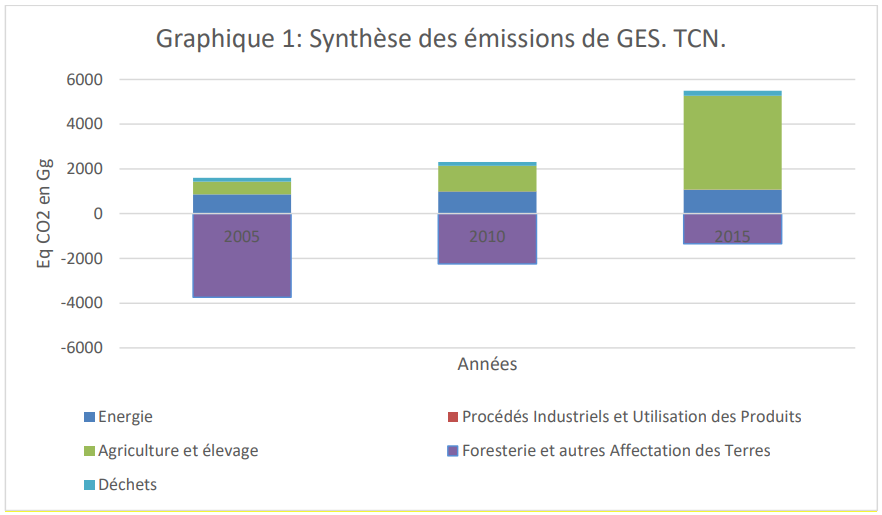
L’analyse des résultats de synthèse des émissions avec absorptions montre que la capacité d’absorptions a fortement diminué au Burundi, ayant comme conséquence l’augmentation des émissions de gaz à effet de serre. La totalité des émissions enregistrées au cours du troisième inventaire montrent qu’elles proviennent de l’agriculture, dans les sols gérés par les systèmes de gestion du fumier.
2.1.4.1 Secteur de l’énergie
Le tableau 13 présente les résultats des émissions du secteur de l’énergie pour les trois types de gaz (CO2, CH4, N2O) des années 2005, 2010 et 2015.
Tableau 12 : Emissions globales de GES en Gg CO2e du secteur Energie
|
SECTEURS D'ACTIVITES |
2005 |
2010 |
2015 |
||||||
|
CO2 |
CH4 |
N2O |
CO2 |
CH4 |
N2O |
CO2 |
CH4 |
N2O |
|
|
1.Industrie énergétique |
0,78 |
0,02 |
0 |
1,36 |
0,02 |
0 |
0,92 |
0,02 |
0 |
|
2. Ind. Manufacturières et construction |
30,25 |
0 |
0 |
47,91 |
0 |
0 |
45,48 |
0 |
0 |
|
3.Transport: |
74,46 |
0,02 |
0 |
81,25 |
0,02 |
0 |
69,88 |
0 |
0 |
|
Aérien |
67,50 |
- |
- |
1,39 |
- |
- |
0,96 |
- |
- |
|
Routier |
6,28 |
0,02 |
0,00 |
79,20 |
0,02 |
0,00 |
68,42 |
0,00 |
0,00 |
|
Maritime |
0,68 |
- |
- |
0,66 |
- |
- |
0,50 |
- |
- |
|
4. Commerce et institution |
11,68 |
0,52 |
0,01 |
20,46 |
0,55 |
0,01 |
10,63 |
0,62 |
0,01 |
|
5.Résidentiel |
6,28 |
28,30 |
0,37 |
8,71 |
31,86 |
0,42 |
11,41 |
35,87 |
0,47 |
|
6.Agriculture / foresterie et pêche |
9,76 |
0,06 |
0,00 |
12,49 |
0,07 |
0,00 |
13,93 |
0,08 |
0,00 |
|
TOTAL des émissions |
133,22 |
28,92 |
0,38 |
172,19 |
32,52 |
0,43 |
152,24 |
36,59 |
0,48 |
|
TOTAL EN EQ CO2 |
858,34 |
988,41 |
1069,43 |
||||||
Graphique 2: Emissions de GES du secteur Energie
Tableau 13 : Synthèse des émissions du secteur énergie par sous-secteur.
|
SECTEURS D'ACTIVITES |
2005 |
2010 |
2015 |
|
1.Industrie énergétique |
1,2 |
1,78 |
1,34 |
|
2. Ind. Manufacturières et construction |
30,25 |
47,91 |
45,48 |
|
3. Transport (aérien, routier et maritime) |
74,88 |
81,67 |
69,88 |
|
4. Commerce et institution |
15,3 |
35,11 |
26,75 |
|
5.Résidentiel |
715,28 |
807,97 |
910,38 |
|
6.Agriculture / foresterie et pêche |
11,02 |
13,96 |
15,61 |
|
TOTAL EN EQ CO2 |
858,34 |
988,41 |
1069,43 |
Graphique 3: Émissions du secteur de l'énergie
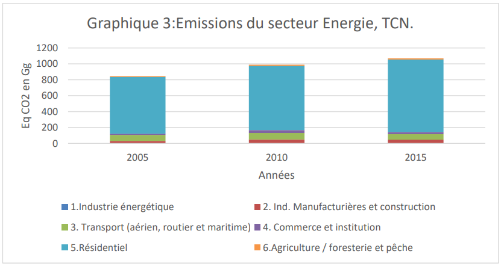
Les résultats des émissions du secteur de l’énergie montrent que la quantité de CO2 émise vient en tête dans le sous-secteur des transports, suivis du sous-secteur des industries manufacturières et de la construction.
Concernant les émissions des non CO2, le secteur « résidentiel » prend le devant avec des émissions de méthane issues de la combustion incomplète de la biomasse et ses dérivés.
2.1.4.2 Procédés industriels et Utilisation des Produits (PIUP).
Les émissions issues du secteur PIUP sont négligeables et les résultats se trouvent dans le tableau 14.
Tableau 14 : Emissions de GES du secteur PIUP en Gg CO2.
|
ANNEES |
2005 |
2010 |
2015 |
|
|
Catégories |
0 |
CO2 (Gg) |
CO2 (Gg) |
CH4 (Gg) |
|
2.A Industries minéral |
0 |
|||
|
2.A.2 - Production de la chaux |
0 |
0 |
1,21 |
0 |
|
2.C Industries métalliques |
||||
|
2.C.1 - Production de l’acier et du fer |
0,78 |
6,24 |
0,02 |
|
|
Total PIUP en Eq CO2 en Gg |
0 |
0.78 |
7,87 |
|
Graphique 4: Emissions du secteur PIUP
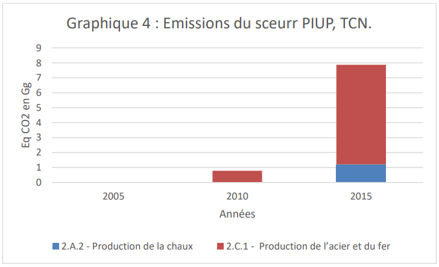
2.1.4.3 Secteur Agriculture et Elevage
Les émissions issues du secteur de l’agriculture et de l’élevage proviennent du bétail domestique et des sols gérés.
Le tableau 15 et le graphique 4 montrent les résultats d’émissions de GES issues du bétail domestique et des sols gérés.
Tableau 15 : Emissions de CH4 issues du bétail domestique en EqCO2 en Gg.
|
Sous-secteur bétail domestiques |
Catégories |
2005 |
2010 |
2015 |
|
Fermentation entérique |
322,50 |
410,22 |
189,52 |
|
|
Gestion du fumier |
14,64 |
21,61 |
19,46 |
|
|
Total bétail domestique |
Total |
337,13 |
431,83 |
208,99 |
Graphique 5: Emissions issues du secteur bétail domestique
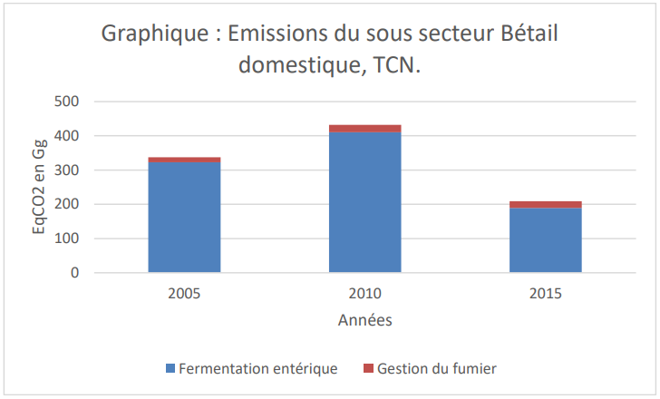
Quant aux sols gérés, les émissions qui en découlent sont dues principalement aux systèmes de gestion du fumier. Le tableau 16 et le graphique 5 montre la situation des émissions de CH4 issues des sols gérés en équivalent de CO2 en Gg.
Tableau 16 : Emissions issues des sols gérés en Eq CO2 en Gg.
|
Catégories |
2005 |
2010 |
2015 |
|
Brulage des résidus de récolte |
1475,04 |
1424,43 |
1480,92 |
|
Riziculture |
29,54 |
12,34 |
10,27 |
|
Système de gestion du fumier |
23 398,78 |
29 463,12 |
24 515,58 |
|
Brulage des résidus de récolte |
564,2 |
545,6 |
567,3 |
|
Application de l'urée en CO2 net |
0 |
0 |
390,17 |
|
Total sol gérés |
25 467,56 |
31 445,49 |
26 964,24 |
Graphique 6: Emissions issues des sols gérés
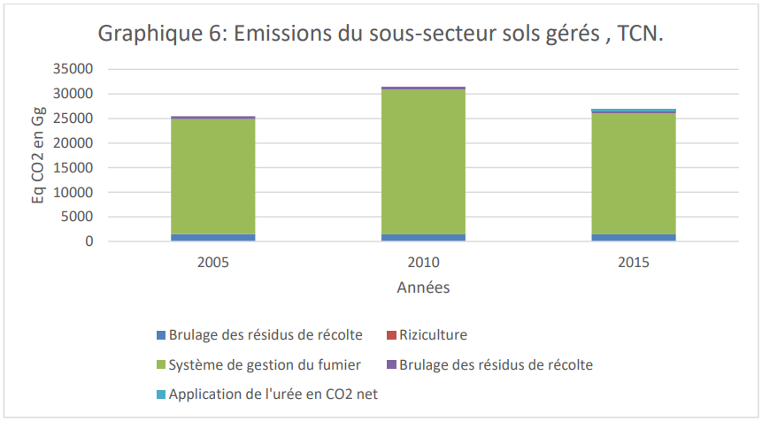
L’analyse du tableau 16 montre que les émissions en Eq CO2 en Gg issues du système de gestion du fumier sont élevées. Il s’agit d’une erreur de comptabilisation des émissions non CO2 issues de ce système de gestion du fumier. C’est pour cette raison que les résultats fiables qu’on peut considérer dans le secteur agriculture sont ceux se trouvant au tableau 12.
Foresterie et autres affectations des terres (FAT)
Le tableau 17 et le graphique 6 présentent les résultats du 3ième inventaire national du Burundi pour le secteur FAT en distinguant les émissions et absorptions issues de l’évolution des stocks de carbone des différents réservoirs et lors des changements d’affectation des terres.
Tableau 17 : Synthèse des résultats des émissions /absorptions de la FAT.
|
Sous-catégories su secteur FAT |
Emissions/absorptions de CO2 en Gg 2005 |
Emissions/absorptions de CO2 en Gg en 2010 |
Emissions/absorptions de en Gg en 2015 |
CO2 |
|||
|
Foresterie et autres utilisations des terres (i) |
- |
3 732,43 |
- |
2 249,77 |
- |
1 348,48 |
|
|
Terres forestières restant forestières (ii ) |
- |
4 083,31 |
- |
2 780,56 |
- |
1 447,11 |
|
|
Terres cultivées (iii) |
490,77 |
655,40 |
610,45 |
||||
|
Terres cultivées restant cultivées (iv) |
0,16 |
0,16 |
0,16 |
||||
|
Terres converties en terres cultivées (v) |
490,61 |
655,25 |
610,29 |
||||
|
Dont Terres forestières converties en terres cultivées (vi) |
112,83 |
160,46 |
170,94 |
||||
|
Dont Pâturages convertis en terres cultivées (vii) |
377,78 |
494,79 |
439,35 |
||||
|
Tourbières restant tourbières (viii) |
11,10 |
11,10 |
11,10 |
|||
|
Produits ligneux récoltés (ix) |
- |
150,99 |
- |
135,72 |
- |
522,91 |
FAT(i)=(ii)+(iii)+(viii)+(ix) ; Terres cultivées= (iv)+(v)+(vi)+(vii).
Graphique 7: Emissions et absorptions issues du secteur FAT
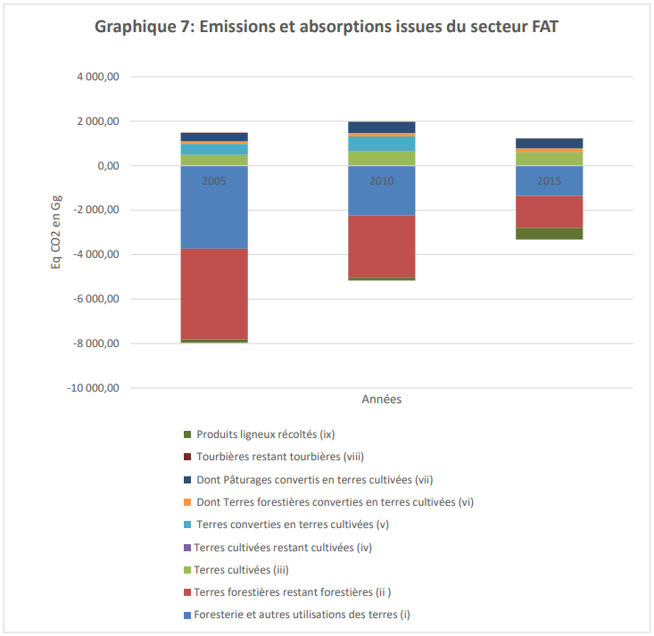
Les résultats montrent que la principale source d’émissions du secteur FAT est la conversion des pâturages en terres cultivées qui représentent pour les années 2005, 2010 et 2015 respectivement 75 %, 74,2% et 70,7 %. La conversion des forêts occupe la deuxième place avec respectivement 22,5%, 24,1% et 27,5% des émissions totales du secteur alors que la contribution des tourbières aux émissions du secteur FAT reste faible (autour de 2%).
Quant aux absorptions, on remarque qu’il y a eu une diminution des capacités d’absorptions de 32 % entre 2005 et 2010 et de 48% entre 2010 et 2015. Cela a été dû principalement aux problèmes de déforestation aux profits de l’agriculture, de l’habitat et des infrastructures publiques. A travers ces chiffres, on remarque que les données utilisées pour effectuer les inventaires ne reflètent pas la réalité. L’évolution des émissions de GES issues du secteur FAT dépendent de l’utilisation du bois soit pour la cuisson ou en construction qui ont des impacts sur la dégradation des forêts et de la conversion des terres forestières pour l’agriculture ou les constructions. La démographie est donc l’une des causes qui accentue l’augmentation des émissions issues du secteur FAT. Par contre, l’accroissement des puits de carbone est en fonction avec l’accroissement des superficies forestières et des bonnes pratiques de conservations et de gestion des écosystèmes forestiers.
La reforestation et la lutte contre la conversion des terres forestières et des pâturages pour d’autres spéculations sont des pistes d’atténuation importantes à travers le processus REDD+.
2.1.4.5 Secteur des Déchets
Le tableau 18 et la figure 6 présentent les résultats du 3ième inventaire national du Burundi issues du secteur Déchets.
Tableau 18 : Synthèse des émissions de GES du secteur déchet
|
Année |
2005 |
2010 |
2015 |
|||
|
Sources d’émissions |
CH4 |
N2O |
CH4 |
N2O |
CH4 |
N2O |
|
Emissions à partir des décharges des déchets solides |
0,01 |
- |
0,01 |
- |
0,01 |
- |
|
Emission à partir des eaux usées domestiques et commerciales |
0,93 |
0,47 |
0,07 |
0,53 |
1,20 |
0,61 |
|
Emissions à partir des eaux usées industrielles |
0,42 |
- |
0,03 |
- |
0,80 |
- |
|
Total (en Gg) par Gaz |
1,36 |
0,47 |
0,11 |
0,53 |
2,02 |
0,61 |
|
Total Emission en EqCO2 en Gg par Gaz |
28,52 |
146,32 |
2,26 |
163,06 |
42,44 |
188,64 |
|
Total Emission en EqCO2 en Gg |
174,26 |
166,61 |
231,31 |
|||
Graphique 8: Emissions issues du secteur déchet
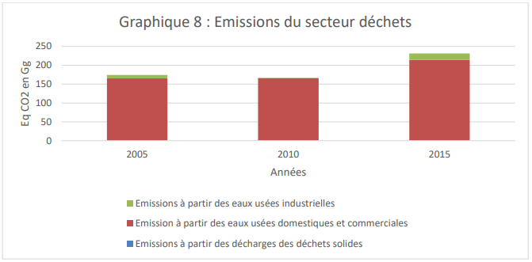
Le Tableau 18 montre que les émissions du secteur déchet représentent respectivement 10,88% en 2005, 7,22% en 2010 et 4,21% en 2015 par rapport aux émissions totales de GES du troisième inventaire de gaz à effet de serre ( Cfr tableau 12).
2.2 Les scenarii d’atténuation de la CDN 2020
2.2.1. Indicateur, année de Référence et année(s) cible(s)
Dans le cadre de la CDN 2020, l’indicateur de référence est un indicateur quantitatif en émission de GES, relatif à un scénario « Business as Usual » (BAU) intégrant tous secteurs du 3ième ’inventaire national de GES et annuel pour 2 années cibles.
S’agissant d’un indicateur défini par rapport à un scénario de référence, les années correspondant aux cibles sont les années 2025 et 2030.
La CDN actualisée aura une période de 10 ans étalée sur deux périodes. La première période débutera avec le 1er janvier 2021 et prendra fin le 31 décembre 2030 avec une année intermédiaire de 2025.
La CDN 2020 définit 2 scenarii : le scénario de référence et le scénario d’atténuation.
Le Scenario de référence retenu est le scénario Business As Usual (BAU) qui correspond à la tendance de l’évolution des émissions de GES dans le cas où le Burundi ne prend aucune mesure d’atténuation tandis que le scénario d’atténuation implique la mise en application des actions contribuant à la réduction des émissions des GES.
Deux scénarii d’atténuation sont distingués : le scénario par objectif inconditionnel (atteignable par des ressources propres au Burundi) et le scénario par objectif conditionnel (atteignable par l’appui de la coopération internationale conformément aux articles 9 et 6 de l’accord de Paris).
Périmètre
Le périmètre des projections de la CDN 2020 couvre tout le territoire national du Burundi. La CDN 2020 prend en compte, tous les secteurs comptabilisés dans le 3ième inventaire national de GES pour le calcul des valeurs cibles. En particulier, les sous-secteurs des terres cultivées, des tourbières et des produits ligneux récoltés de la FAT, le secteur des Produits Industriels et Utilisations des Produits (PIUP), le transport et le secteur des déchets sont maintenant pris en compte dans le calcul de la valeur cible. Ce n’était pas le cas dans la CDN 2015 et cela démontre une augmentation de l’ambition du Burundi. Les secteurs qui sont concernés par la CDN actualisée sont présentés dans le tableau 19.
Tableau 19 : Secteurs comptabilisés
|
Secteurs |
Sous-secteurs |
Gaz concernés |
|
Energie et Transport |
Combustion stationnaire de combustibles |
CO2, CH4 et N2O |
|
Transport |
||
|
PIUP |
Industries minérales |
CO2, CH4 et N2O |
|
Industries Métallurgiques |
||
|
AFAT |
Agriculture et Elevage |
CO2, CH4 et N2O |
|
Foresterie et Autres affectation des Terres |
CO2, CH4 et N2O |
|
|
Déchet |
Traitement des Déchets solides et liquides |
CO2, CH4 et N2O |
Pour ces secteurs, tous les gaz considérés dans le 3ième inventaire sont également pris en compte dans le calcul de la valeur cible, à savoir le CO2, le CH4 et le N2O. Les gaz de HFCs, PFCs, SF6, NF3 n’ont pas été pris en compte car ils ne sont pas estimés dans le 3ième inventaire national de GES.
La CDN 2020 tient compte de l’article 5 de l’Accord de Paris relatif au renforcement des puits et des réservoirs de GES comme le prévoit l’alinéa d) du paragraphe 1 de l’article 4 de la Convention, notamment les forêts et le mécanisme REDD+. Le paragraphe 1 de l’article 5 invite les Parties à prendre des mesures pour conserver et renforcer les puits de carbone.
2.2.3. Méthode de calcul des émissions / absorptions des différents scénarii
La formule utilisée pour le calcul des émissions évitées par action est la suivante :
E=DA x FE où DA= données d’activités (DA) et FE= facteur d’émission (FE) proposés par défaut pour chaque gaz et chaque combustible par les LD du GIEC 2006.
Le scénario d’atténuation est établi en mettant en application les actions d’atténuation visant à réduire les émissions de GES. Le calcul des émissions évitées est fait en déduisant les émissions calculées par action d’atténuation des émissions du BAU.
Concernant les 2 scénarii d’atténuation, l’approche a consisté à calculer les émissions évitées aux horizons 2025 et 2030, par action retenue dans la CDN pour chaque secteur, puis à soustraire ces émissions évitées aux valeurs du scénario de référence sectoriel.
Pour la conversion en équivalents CO2, les valeurs du Potentiel de Réchauffement Global (PRG) correspondant à une période de 100 an recommandée dans le second rapport d’évaluation du GIEC ont été appliquées. Il s’agit de 21 pour le CH4 et 310 pour le N2O.
2.2.4. Scénario de référence BAU.
La valeur des émissions du BAU est susceptible de changer du fait de changements méthodologiques et des améliorations dans l’établissement des futurs inventaires de gaz à effet de serre.
Le scénario de référence BAU est établi si aucune action n’est prise pour la mise en œuvre des politiques, des plans et stratégies pouvant contribuer à l’atténuation des GES. Le BAU considéré est celui de la TCN qui est projeté jusqu’en 2030 à partir de 2015.
2.2.4.1 Secteur de l’Energie
2.2.4.1.1 Plans, Politiques et Stratégie
Le plans National de Développement 2018-2027 est le document de base sur lequel se base le développement du secteur de l’Energie.
2.2.4.1.2 Hypothèses et paramètres de projections des émissions de GES
Les hypothèses de projections sont basées sur le taux d’accroissement de la population, la croissance économique (PIB), les mesures d’orientation politiques et stratégiques du Pays relatives aux développements socioéconomique et environnementale du Pays.
2.2.4.3. Impacts en termes de GES / Scénario BAU.
Le tableau 21 présente les émissions de GES historiques et projetées dans le cas du scénario BAU du secteur Energie aux horizons 2025 et 2030.
Tableau 20 : Emissions de GES du secteur Energie par le scénario BAU
|
Gaz |
2005 |
2010 |
2015 |
2020 |
2025 |
2030 |
|
CO2 |
133,22 |
172,19 |
152,24 |
269,54 |
304,99 |
345,58 |
|
CH4 |
28,92 |
32,52 |
36,59 |
45,94 |
50,03 |
54,16 |
|
N2O |
0,38 |
0,43 |
0,48 |
0,61 |
0,66 |
0,72 |
|
Total Eq CO2 en Gg |
858,34 |
988,41 |
1069,43 |
1 423,01 |
1 561,21 |
1 705,23 |
Source : TCN
Graphique 9: Emissions de GES du secteur Energie
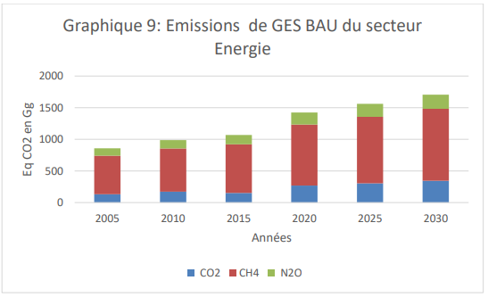
Secteur Procédés Industriels et Utilisation de Produits (PIUP)
Plans, Politiques et stratégies
En plus des Plans, Politiques et Stratégies communs à tous les secteurs (PND 2018-2027, Vision Burundi 2025, Politique Nationale sur les changements climatiques, la Politique de l’industrialisation est spécifique au secteur PIUP.
2.2.4.2.2. Hypothèses et paramètres de projection
Les hypothèses de projections du secteur PIUP sont basées sur la croissance économique et du taux d’industrialisation.
Les paramètres sont des quantités de la chaux utilisée en tonnes, les quantités du fer et de l’acier utilisé en tonnes. Des facteurs d’émissions ont été pris en compte comme paramètres de calcul des émissions.
2.2.4.2.3 Impact en termes de GES
Les émissions du scénario BAU pour le secteur PIUP se trouvent dans le tableau 22.
Tableau 21 : Emissions en Gg d’Eq CO2 dans scénario BAU du secteur PIUP
|
GAZ |
2005 |
2010 |
2015 |
2020 |
2025 |
2030 |
|
2.A.2 - Production de chaux |
6,75 |
7,09 |
7,44 |
7,82 |
8,21 |
8,62 |
|
2.C.1 - Production de fer et d'acier |
0 |
0 |
0,42 |
0,42 |
0,42 |
0,42 |
|
Total Eq CO2 en Gg |
6,75 |
7,09 |
7,86 |
8,24 |
8,63 |
9,04 |
Graphique 10 : Emissions du scenario BAU PIU
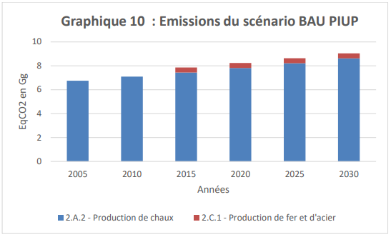
2.2.4.3 Secteur Agriculture et élevage
2.2.4.3.1 Plans, Politiques et stratégies
En plus des Plans, Politiques et Stratégies communs à tous les secteurs (PND 2018-2027, Vision Burundi 2025, Politique Nationale sur les changements climatiques), certains Plans, Politiques et Stratégies sont spécifiques au secteur Agriculture.
Document d’Orientation de la Politique de l’Environnement, de l’Agriculture et de l’Elevage (DOPEAE),
Plan National d’Investissement Agricole (PNIA) 2018-2022,
Stratégie Agricole Nationale (SAN) 2018-2025,
Programme de Subvention des Semences,
Programme de Subvention des engrais minéraux,
Programme de vaccination contre les principales maladies des animaux domestiques,
Programme d’insémination artificielle des animaux,
Programme de repeuplement du cheptel,
2.2.4.3.2. Hypothèses et paramètres de projection
Dans le cadre de la 3ième Communication Nationale sur le climat, le scénario BAU du secteur Agriculture a été défini et des projections des émissions jusqu’à l’horizon 2050 ont été effectuées.
Comme pour les autres secteurs, le scénario de référence BAU est établi sur des hypothèses où aucune action n’est prise pour la mise en œuvre de ces politiques, des plans ou stratégies pouvant atténuer les émissions issues du bétail domestique et des sols gérés.
Les paramètres projetés du scénario BAU sont liés à l’évolution des effectifs de bovins, de caprins, des ovins pour le bétail domestique. Quant aux sols gérés, les paramètres sont liés aux superficies des emblavures pour le riz, superficies récoltées pour la canne à sucre, aux quantités d’engrais d’azote et d’urée utilisées pour les sols gérés.
Dans le cadre de la CDN 2020, les hypothèses et paramètres du scénario de référence du secteur Agriculture de la TCN pour 2025 et 2030 ont été retenus.
2.2.4.3.3 Impact en termes de GES
Dans le cadre CDN 2020, les émissions du scénario de référence (BAU) du secteur Agriculture de la TCN ont été retenues pour 2025 et 2030.
Dans cette situation, la projection des émissions de 2005 à 2050 se trouve dans le tableau 23.
Tableau 22 : Projection des émissions de GES (Gg) du secteur Agriculture et élevage /Scénario BAU en CO2e
|
2005 |
2010 |
2015 |
2020 |
2025 |
2030 |
|
|
Net CO2 |
1,91 |
390,30 |
3 806,86 |
3 997,20 |
4 197,06 |
4 406,92 |
|
CH4 |
22,50 |
34,57 |
15,85 |
16,64 |
17,47 |
18,35 |
|
N2O |
0,30 |
0,11 |
0,15 |
0,16 |
0,17 |
0,17 |
|
Total ECO2 en Gg |
567,41 |
1 150,37 |
4 186,21 |
4 395,52 |
4 615,30 |
4 846,06 |
Graphique 11: Emissions du scénario BAU du secteur Agriculture
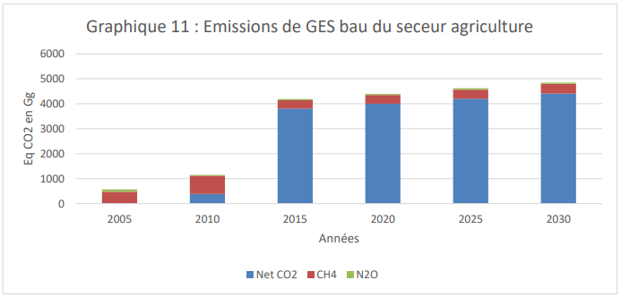
2.2.4.4 Secteur Foresterie et autres Affectations des Terres (FAT)
2.2.4.4.1P&M, Plans, stratégies et projets
En plus des Plans, Politiques et Stratégies communs à tous les secteurs (PND 2018-2027, Vision Burundi 2025, Politique Nationale sur les changements climatiques, certains Plans, Politiques et Stratégies sont spécifiques au secteur FAT :
Stratégie Nationale REDD+,
Protocole national de lutte antiérosive pour le secteur AFAT,
2.2.4.4.2Hypothèses et paramètres de projection
Dans le cadre de la 3ième Communication Nationale le scénario BAU du secteur FAT a été défini et des projections des émissions sectorielles jusqu’à l’horizon 2050 ont été calculées.
Dans le secteur FAT, les hypothèses de projections du scenario BAU des émissions sont basées sur la diminution du taux de la couverture forestière et l’augmentation des besoins en produits forestiers soit pour la construction ou l’énergie. Le scénario BAU est basé sur la non mise en œuvre des mesures politiques conduisant à la lutte contre la déforestation et la dégradation des forêts et au renforcement des stocks de carbone. Les paramètres de projections sont basés sur les données de la population, les superficies forestières déboisées et/ou dégradées, le ratio de consommation du bois, de la croissance démographique et économique ainsi que les données d’activités de l’année de référence.
Dans le cadre de la CDN 2020, les hypothèses et paramètres du scénario de référence du secteur FAT de la TCN pour 2025 et 2030 ont été retenus.
Le tableau 24 met en évidence les données d’entrées ayant un impact sur l’évolution des émissions issues du secteur FAT.
Tableau 23 : Données pour le scénario BAU par sous-catégories
|
Sous catégories |
Hypothèses |
Paramètres |
|
Superficies forestières |
Conversion des terres forestières pour spéculations |
Superficies des boisements réduites et leurs effets sur l’augmentation des émissions de GES |
|
Coupes illicites |
Idem |
|
|
Pâturages |
Conversion des pâturages à des fins agricoles ou autres |
Diminution des superficies de pâturages |
Pour les superficies forestières, les deux hypothèses mentionnées dans le tableau 27 montrent que ces superficies vont diminuer et les boisements de pins et de Callitris seront les plus touchés comme le montre le tableau 25.
Tableau 24 : Evolution de pins et de Callitris
|
Essence |
2005 |
2010 |
2015 |
2020 |
2025 |
2030 |
|
Pin |
8715,70 |
9520,54 |
9162,60 |
8509,46 |
7856,32 |
7203,18 |
|
Callitris |
6647,36 |
7539,51 |
7256,12 |
6243,24 |
5230,36 |
4217,48 |
|
Total |
15363,06 |
17060,05 |
16418,72 |
14752,70 |
13086,68 |
11420,66 |
2.2.4.4.3. Impacts en termes de GES
Dans le cadre de la 3ième Communication Nationale (TCN), les émissions du scénario BAU du secteur FAT ont été projetées sur base des hypothèses liées à la conversion des terres forestières et des pâturages à d’autres spéculations.
Le tableau 26 et la figure 12 présentent les émissions de GES historiques et projetées dans le cas du scénario BAU du secteur FAT à l’horizon 2030.
Tableau n°25. Evolution des émissions du FAT /Scénario BAU
|
Année |
2005 |
2010 |
2015 |
2020 |
2025 |
2030 |
|
Emissions en EqCO2 en Gg |
- 3 732,43 |
- 2 249,77 |
-1348,48 |
-156,505 |
1035,47 |
2227,45 |
Graphique 12: Emissions du scenario BAU /FAT
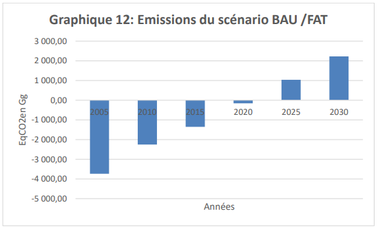
2.2.4.5 Secteur Déchets
2.2.4.5.1P&M, Plans, stratégies et projets
En plus des Plans, Politiques et Stratégies communs à tous les secteurs (PND 2018-2027, Vision Burundi 2025, Politique Nationale sur les changements climatiques, la Politique nationale d’assainissement et sa stratégie 2025 pour le secteur déchet est spécifique au secteur Déchets.
2.2.4.5.2 Hypothèses et paramètres de projection
Dans le cadre de la 3ième Communication Nationale, le scénario BAU du secteur Déchets a été défini et des projections des émissions sectorielles jusqu’à l’horizon 2050 ont été calculées.
Dans le cadre de la CDN 2020, les hypothèses et paramètres du scénario de référence du secteur déchet de la TCN pour 2025 et 2030 ont été retenus. Les hypothèses de projection sont basées sur le taux de croissance de la population, de l’économie nationale et de l’urbanisation.
2.2.4.5.3 Impact en termes de GES
Dans le cadre de la 3ième Communication Nationale (TCN), les émissions du scénario BAU du secteur Déchets ont été projetées sur base du taux de la croissance économique ; le l’accroissement de la population et des stocks de déchets.
Le tableau 27 et la figure 13 montrent les émissions de GES historiques (issues du 3ième inventaire national de GES et projetées (issues de la TCN) pour le scénario BAU du secteur Déchets à l’horizon 2030.
Tableau 26 : Evolution des émissions de GES du scénario BAU pour le secteur Déchets
|
Emissions |
2005 |
2010 |
2015 |
2020 |
2025 |
2030 |
|
Emissions de CH4 dans les eaux usées industrielles en Eq CO2 |
8,82 |
0,63 |
16,84 |
11,26 |
12,43 |
13,61 |
|
Emissions de CH4 des eaux usées commercial et domestique en Eq CO2 |
0 |
0 |
25,12 |
19,59 |
21,65 |
23,69 |
|
Emissions de CH4 des déchets solides en Eq CO2 |
0,21 |
0,20 |
0,14 |
0,21 |
0,24 |
0,26 |
|
Emissions de N2O eaux usées domestique et commerciale |
165,23 |
165,77 |
188,64 |
212,04 |
234,36 |
256,68 |
|
Total |
174,26 |
166,60 |
230,73 |
243,10 |
268,68 |
294,23 |
Source : TCNCC
Graphique 13: Emissions scénario BAU déchets
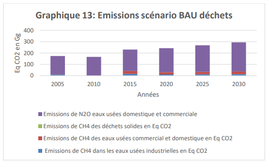
2.2.4.6. Synthèse du Scénario BAU
Le tableau 28 et le graphique 13 présentent les émissions de GES historiques (issues du 3ième inventaire national de) et projetées (issues de la TCN) dans le cas du scénario BAU de tous les secteurs aux horizons 2025 et 2030, sauf le sous-secteur « sols gérés » de l’Agriculture.
Tableau 27 : Emissions en Gg CO2eq du scénario BAU pour tous les secteurs
|
Secteur |
2005 |
2010 |
2015 |
2020 |
2025 |
2030 |
|
Energies |
858,34 |
988,41 |
1069,43 |
1 423,01 |
1 561,21 |
1 705,23 |
|
PIUP |
6,75 |
7,09 |
7,86 |
8,24 |
8,63 |
9,04 |
|
Agriculture et Elevage |
567,41 |
1 150,37 |
4 186,21 |
4 395,52 |
4 615,30 |
4 846,06 |
|
FAT |
-3 732,43 |
-2 249,77 |
-1348,48 |
-156,505 |
1035,47 |
2227,45 |
|
Déchets |
174,26 |
166,6 |
230,7337 |
243,1032 |
268,6803 |
294,2343 |
|
Total avec FAT |
-2125,67 |
62,70 |
4 145,75 |
5 913,37 |
7 489,29 |
9 082,01 |
|
Total sans FAT |
1 606,76 |
2 312,47 |
5 494,23 |
6 069,87 |
6 453,82 |
6 854,56 |
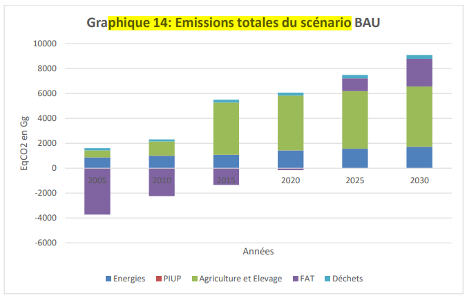
Graphique 14: Emissions totales du scénario BAU
2.2.5. Scénario inconditionnel
2.2.5.1 Secteur Energie (hors sous-secteur Transports)
2.2.5.1.1 P&M, Plans et actions d’atténuation retenues
Secteur Energie hors Sous-secteur Transports
Le Plan National de Développement du Burundi 2018-2027, la politique nationale sur les changements climatiques, la stratégie nationale d’adaptation aux changements climatiques, les trois Communications Nationales sur les changements climatiques et la lettre de politique ainsi que la stratégie sectorielle du secteur de l’énergie prévoient des mesures et technologies indispensables pour l’atténuation des émissions des gaz à effet de serre. Elles mettent l’accent sur l’introduction de nouvelles technologies et mesures visant l’amélioration des conditions de productions et d’utilisation des sources d’énergies non ou peu émettrices de gaz à effet de serre en remplacement des technologies actuellement en usage.
Les programmes et projets considérés comme prioritaires sont la construction des centrales hydroélectrique et solaire, la promotion des techniques améliorées de carbonisation du bois, la promotion des foyers améliorés domestiques à charbon de bois en milieu urbain et rural, la promotion du biogaz dans les écoles et les établissements de détention et l’amélioration de l’efficacité énergétique.
Dans la CDN 2020, plusieurs actions de mises en œuvre de ces programmes prioritaires ayant un impact en termes d’atténuation sont retenues dans le cadre du scénario inconditionnel et sont décrites dans le tableau 28.
Tableau 28 : Actions retenues pour le scénario inconditionnel du secteur Energie
|
Priorités nationales |
Objectif |
Actions |
IOV |
Coûts x1000USD |
Date de début |
Date de fin |
Etat d’avancement en mars 2021 |
|
1- Accroitre la capacité de production de l’énergie hydroélectrique |
45,4 MW sont installés |
Aménager trois centrales hydroélectriques de Ruzibazi (15MW), Kabu 16 (20MW) et Mpanda (10,4 MW), |
Nombre de MW Installés |
239000 |
2018 pour Ruzibazi, 2017 pour Kabu et 2012 pour Mpanda |
2025 |
45% |
|
19,25MW sont aménagés dans le cadre Partenariat Public Privé |
Aménager la CHE de RUVYI 102 et MULE 037 (10.65MW) |
Nombre de nouvelles centrales hydroélectriques fonctionnelles - Nouvelle capacité de production hydroélectrique |
56100 |
2022 |
2026 |
0% |
|
|
Aménager les centrales en cascade sur DAMA (8.8MW) et SIGUVYAYE |
46600 |
2022 |
2026 |
||||
|
300KW de la microcentrale karonke sont mise en service (privé) |
Aménager la microcentrale de Karonke (300KW) |
Capacité installée |
0,8 |
2022 |
2026 |
0% |
|
|
2- Accroitre la capacité de production de l’énergie par le système photovoltaïque |
7,5MW sont installé |
Aménager la centrale solaire de Mubuga |
Capacité installée |
18 |
2018 |
2022 |
0% |
|
50 établissements publics hors réseau électrique par l’énergie solaire photovoltaïque (total 200kW) |
Electrifier les établissements publics hors réseau électrique par l’énergie solaire photovoltaïque |
Nombre d’établissement électrifié |
7,9 |
2022 |
2025 |
99% |
|
|
3- Promouvoir l’utilisation des digesteurs à biogaz dans les écoles à internat pour compenser l’utilisation du bois pour la cuisson |
20 établissements scolaires à régime d’internat sont équipés d’un digesteur à biogaz |
Construire des digesteurs à biogaz à 20 établissements à régime d’internat |
Nombre d’établissements équipés d’un digesteur à biogaz. |
0,2 |
2021 |
2024 |
0% |
Source : Ministère de l’Hydraulique, Energie et des Mines.
B. Sous-secteur Transports
Les politiques et stratégies nationales du secteur des transports considérées dans le scénario inconditionnel sont le Plan de Développement National du Burundi 2018-2027, la Stratégie Nationale en matière de planification et de gestion du secteur des transports 2018-2027, la politique sectorielle du Ministère des Transports, des Travaux publics et de l’Equipement et la Politique Nationale de l’industrialisation. Les stratégies d’atténuation prévues dans ces documents sont principalement la promotion du véhicule électrique, le transport en commun par grands bus et l’aménagement des pistes piétonnes et cyclables.
Dans la CDN 2020, la priorité retenue pour l’atténuation des émissions de gaz à effet de serre dans le sous-secteur Transports est le développement du transport en commun par grands bus pour diminuer les consommations de carburants des véhicules individuels.
Tableau 29 : Priorité nationale d’atténuations dans le sous-secteur transport
|
Priorité nationale |
Cible |
Coût (X1000US D ) |
Indicateurs de suivi- évaluation |
Observations/Considérations |
Date début |
Dat e fin |
Etat d’avancement en mars 2021 |
|
Amélioration et augmentation du parc automobil e de transport en commun. |
D’ici 2030, 300 grands bus en circulation |
30 518 |
Nombre de grands bus acquis |
Cette action va contribuer à l'atténuation des émissions de GES issues des voitures individuelles. |
2022 |
2030 |
5% |
Source : Programme d’Actions Prioritaires (PAP, juillet 2018).
2.2.5.1.2. Hypothèses et paramètres de projection
A. Secteur Energie hors sous-secteur Transports.
Les priorités d’atténuation retenues consistent à mettre en œuvre des technologies ou des combustibles moins émetteurs de GES en substitution des technologies ou combustibles non performants en termes d’atténuation, à savoir :
des centrales thermiques à diesel pour la production d’électricité,
du bois de chauffage pour la cuisson et l’éclairage dans les ménages ruraux et le charbon de bois pour les ménages urbains pour l’énergie de cuisson.
Le tableau 30 montre les paramètres servis pour la comptabilisation de ces émissions.
Tableau 30 : Priorités d’atténuation et paramètres pour la comptabilisation des émissions
|
No |
Priorités d’atténuation |
Paramètres de calcul des émissions |
|
1 |
Construction des centrales hydroélectrique |
|
|
2 |
Construction des centrales solaire ou mini réseaux solaire |
|
|
3 |
Promouvoir l’utilisation des digesteurs à biogaz dans les écoles à internat |
|
B. Sous-secteur Transports
Le logiciel IPCC Tools 2006 est utilisé pour quantifier les émissions émises par les bus et les émissions que les voitures auraient émises pour transporter le même nombre de personnes sur la même distance. Les émissions évitées sont ensuite calculées par différence entre les deux.
Tableau 31 : Priorités d’atténuation et paramètres de calcul des émissions du sous-secteur transport
|
Priorités d’atténuation |
Paramètres de calcul |
|
Amélioration et augmentation du parc automobile en commun |
|
|
Priorités retenues |
Quantité de diesel non consommée du fait de l’action (en TJ) |
FE (kg /GJ) |
Emissions en Gg Eq CO2 |
Source |
||
|
2025 |
2030 |
2025 |
2030 |
|||
|
Amélioration et augmentation du parc automobile de transport en commun. |
65,82 |
98,73 |
74100 Kg CO2/TJ ; 3kg CH4/TJ et 0,6Kg N2O/TJ |
4,963 |
7,445 |
PND |
Impact en termes de GES
A. Secteur Energie hors sous-secteur Transports
Les émissions évitées du scénario d’atténuation sont égales aux facteurs d'émissions par défaut (Niveau 1) de la technologie/combustible substitué multipliés par les consommations d’énergie évitées du fait de la mise en œuvre des actions. Le logiciel IPCC Tools 2006, a permis de faire la quantification de ces émissions à éviter en entrant les données d’activités de chaque projet par rapport à la pratique qui était en place. Cette méthodologie a été appliquée sur toutes les actions retenues dans la CDN 2020.
Le tableau 32 présente les émissions évitées de GES dans le secteur Energie (hors transport) aux horizons 2025 et 2030.
Tableau 32 : Emissions évitées par priorités nationales
|
Priorités nationales |
Priorités retenues |
Emissions évitées en Gg CO2eq |
|
|
2025 |
2030 |
||
|
1.Accroitre la capacité de production de l’énergie hydroélectrique |
Aménager la centrale hydroélectrique de Ruzibazi (15MW), la centrale hydroélectrique de Kabu 16 (20MW) et la centrale hydroélectrique de Mpanda (10,4MW) |
48,6 |
48,6 |
|
Aménager la CHE de RUVYI 102 et MULE 037 (10.65MW) |
0 |
11,4 |
|
|
Aménager les centrales en cascade sur DAMA (8.8MW) et SIGUVYAYE |
0 |
9,42 |
|
|
Aménager la microcentrale de Karonke (300KW) |
0 |
0,32 |
|
|
2.Accroitre la capacité de production de l’énergie par le système photovoltaïque |
Aménager la centrale solaire de Mubuga (7,5MW) |
2,41 |
2,41 |
|
Electrifier les établissements publics hors réseau électrique par l’énergie solaire photovoltaïque |
0,06 |
0,06 |
|
|
3.Promouvoir l’utilisation des digesteurs à biogaz dans les écoles à internat |
Construire des digesteurs à biogaz à 20 établissements à régime électrique |
0,004 |
0,004 |
|
Total |
51 |
72,22 |
|
B. Sous-secteur Transports
Le tableau 33 présente les émissions évitées de GES dans le sous-secteur Transport aux horizons 2025 et 2030.
Tableau 33 : Emissions évitées
|
Gaz |
CO2 (Gg) |
CH4 (Mg) |
N2O (Mg) |
CO2 (Gg) |
CH4 (Mg) |
N2O (Mg) |
Total Eq CO2 en Gg |
|
|
2025 |
2025 |
2025 |
2030 |
2030 |
2030 |
2025 |
2030 |
|
|
Emissions émises par le bus |
2,889 |
0, 15 |
0, 15 |
1,4445 |
0,075 |
0,075 |
52,54 |
26,26 |
|
Emissions émises par les voitures hors circulation |
7,766 |
0, 41 |
0, 41 |
3,883 |
0,205 |
0,205 |
143,47 |
71,74 |
|
Emissions évitées Eq CO2 en Gg |
4,877 |
5,46 |
80,6 |
2,4385 |
2,73 |
40,3 |
90,9 |
136,4 |
2.2.5.1.4. Secteur Procédés Industriels et Usages de Produits (PIUP)
2.2.5.1.4.1. P&M, Plans et actions d’atténuation retenues
Dans le secteur PIUP, aucune action n’est priorisée dans la CDN actualisée pour réduire les émissions par objectif inconditionnel par faute des indicateurs bien définis. Toutefois, des plans et des politiques et stratégies existent qui peuvent contribuer à réduire les émissions dans ce secteur.
2.2.5.1.4.2. Hypothèses et paramètres de projection
Comme il n’y a pas d’actions prévues par objectif inconditionnel à inclure dans la CDN 2020, les hypothèses et les paramètres de projections ne sont pas nécessaires.
2.2.5.1.5. Impact en termes de GES
. La CDN 2020 n’inclut pas des actions d’atténuation des émissions du secteur PIUP mais il est comptabilisé dans le BAU.
2.2.5.1.6. Secteur Agriculture
Le Ministère en charge de l’Agriculture et de l’Elevage a élaboré un document d’orientation de la politique de l’Environnement, de l’Agriculture et de l’Elevage. Ce dernier s’appuie sur le PND 2018-2027 et le PNIA 2018-2022. Pour mettre en œuvre ces mesures stratégiques contenues dans ces documents, le Ministère envisage faire une politique nationale de l’élevage en stabulation permanente.
Cependant, aucune d’action pour appuyer cette politique n’est retenue dans l’objectif conditionnel.
2.2.5.1.7. Secteur Foresterie et autres Affectation des Terre 2.2.5.1.7.1. Plans, stratégies et actions d’atténuation retenues
Le Burundi a élaboré des Plans et Stratégies pouvant avoir un impact en termes d’atténuation en lien avec le secteur FAT, en réduisant les émissions de GES issues du secteur forestier par des bonnes pratiques de gestion des ressources forestières ou en augmentant les puits de GES. Les plus importants sont les suivants :
Le Plan National de Développement 2018-2027 qui, en son orientation stratégique 3, envisage la protection de l’environnement, l’adaptation aux changements climatiques et l’amélioration de l’aménagement du territoire.
Le Document d’Orientation de la Politique de l’Environnement, de l’Agriculture et de l’Elevage,
La Politique forestière nationale qui, en son objectif spécifique 2, envisage de porter le taux de la couverture forestière à 20% à l’horizon 2025,
La stratégie Nationale pour la réduction des émissions dues à la Déforestation et la Dégradation des Forêts, (+) le rôle de la Conservation des écosystèmes forestiers et la Gestion durable des forêts ainsi que l’amélioration des stocks de carbone,
La Politique Nationale sur le changement climatique qui, en son axe 2, envisage la réduction des émissions des gaz à effet de serre et le développement sobre en carbone ; etc.
Ces plans, politiques et stratégies ont été considérés pour définir les actions du secteur FAT à retenir dans le cadre du scénario inconditionnel de la CDN 2020.
Ainsi, deux actions prioritaires retenues dans la CDN 2020 pour le scénario inconditionnel et sont consignées dans le tableau 34.
Tableau 34 : Actions prioritaires retenues par objectif inconditionnel
|
Stratégies prioritaires |
Objectif |
Actions |
Coût x1000USD |
Date du début |
Date de fin |
Etat d’avancement 2021. |
|
1.Développer la foresterie rurale |
Porter le taux de la couverture forestière à 15.74%, c’est-à-dire augmenter le couvert forestier de 160.000 ha d’ici 2025 (PND 2018-2027) |
Produire et planter 85344000 plants13 sur 53.340 ha à raison de 5334 ha /an de 2021 à 2030. |
8.001 |
2021 |
2030 |
0 |
|
2.développer ment de la filière bambou au Burundi |
2500 ha de bambousseraie créés en dix ans à raison de 250ha/an. |
Protéger les rives de rivières par la plantation de bambous sur 2500 ha à raison de 250ha /an à partir de 2021 jusqu’en 2030. |
5.500 |
2021 |
2030 |
0 |
Source des actions : DOPEAE, TCNCC et PND 2018-2027 Burundi.
2.2.5.1.7.2. Hypothèses et paramètres de projection
Pour le secteur FAT, les paramètres d’entrée des 2 actions retenues sont présentés dans le tableau 37. Les chiffres en termes de superficies sont consignés dans le DOPEAE et ont été validés par les ateliers tenus à Muramvya les 21 et 22 juillet 2021 et à Ngozi les 6 et 7 juillet 2021.
Tableau 35 : Actions prioritaires retenues par objectif inconditionnel
|
Actions |
Superficies plantées par an (en ha) |
Superficies plantées cumulées en 2025 (en ha) |
Superficies plantées cumulées en 2030 (en ha) |
Source de chiffres |
|
|
1 |
Développement de la foresterie rurale (reboisement de 53340 ha sur 10 ans) |
5334 |
26670 |
53340 |
Ateliers de validations des superficies |
|
2 |
Développement de la filière bambous |
250 |
1250 |
2500 |
|
|
Total |
5584 |
27920 |
55840 |
2.2.5.1.7.3. Impact en termes de GES
La méthodologie de Niveau 1 les Lignes Directrices 2006 du GIEC a été utilisée pour calculer les absorptions complémentaires de GES résultant des actions d’atténuation retenues dans le cadre du scénario inconditionnel. Elle consiste à multiplier les données d’activités par les facteurs d’absorption.
Pour calculer les absorptions, les superficies des boisements ont été considérées comme données d’activités. On a ensuite utilisé le logiciel IPCC 2006 pour calculer ces absorptions. Le tableau 42 donne les résultats des absorptions en 2025 et 2030 en Eq CO2 en Gg.
Tableau 36: Résultats des absorptions issues du secteur forestier en EqCO2 en Gg
|
Actions |
Absorptions en Eq CO2 en Gg |
||
|
2021 |
2025 |
2030 |
|
|
Boiser 53340ha en 2030 à raison de 5334 ha /an à partir de 2021. |
0 |
-1068,01 |
-2128,01 |
|
Protéger les berges de rivière par la plantation de bambous sur superficie de 2500ha en 2030 à raison de 250ha/an à partir de 2021. |
0 |
-49,87 |
-99,74 |
|
Total |
-1117,87 |
-2227,75 |
|
2.2.5.1.8. Secteur Déchets
Plans, stratégies et actions d’atténuation retenues
Le Plan National de Développement du Burundi 2018-2027, la politique nationale d’assainissement, le plan national d’adaptation aux changements climatiques, les Communications Nationales sur les changements climatiques etc., prévoient des actions pour l’atténuation des émissions des gaz à effets des serres issues du secteur déchet.
Cependant, dans le cadre de la CDN 2020, aucune action n’est envisagée suite au manque de données fiables sur la quantification des déchets et les sites de décharges ne sont pas connus, sauf quelques sites identifiés dans le troisième inventaire de gaz à effet de serre se trouvant en ville de Bujumbura.
2.2.5.1.8.2. Hypothèses et paramètres de projection
Comme il n’y a aucune action prévue par scénario inconditionnel dans la CDN 2020, les hypothèses et les paramètres de projections ne sont pas nécessaires.
2.2.5.1.8.3. Impact en termes de GES
Par objectif inconditionnel, aucune priorité n’a été retenue. Par conséquent, le secteur déchet n’a pas d’impacts en termes de réduction des émissions de GES,
2.2.5.2 Définition de la cible
La cible du scénario inconditionnel est une réduction des émissions nationales de 1,58 % par rapport au scénario BAU à l’horizon 2025 et de 3,04 % en 2030.
2.2.5.2.1 Méthode de calcul
La méthodologie pour calculer la cible au niveau de chaque secteur, on additionne d’abord les émissions évitées ou absorbées de toutes les actions prioritaires du secteur. La valeur de la cible nationale en Equivalent CO2 en Gg par objectif inconditionnel correspond à la somme des émissions /absorptions issues de la mise en œuvre des actions prioritaires dans tous les secteurs. En termes de pourcentage, la valeur cible est le rapport entre la somme des émissions sectorielles du scénario inconditionnel et la somme des émissions sectorielles du scénario de Business As Usual (BAU).
La valeur de la cible «C » en % est exprimée par l’équation suivante : X/Y*100. Où X= ∑des émissions sectorielles du scénario inconditionnel en EqCO2 en Gg.
Y = ∑ des émissions sectorielles du scénario de Business As Usual (BAU) en EqCO2 en Gg.
2.2.5.2.2 Récapitulatif des émissions évitées et absorbions complémentaires
Le récapitulatif des émissions évitées et des absorptions dans tous les secteurs se trouve dans le tableau 37.
Tableau 37 : Synthèse des émissions évitées et absorbions complémentaire
|
Emissions évitées de GES (en Gg Eq CO2) |
Emissions évitées de GES (en Gg Eq CO2) |
|
|
Secteurs |
2025 |
2030 |
|
1. Energie hors transport |
51,08 |
72,22 |
|
2. Transport |
50,9 |
136,4 |
|
3. FAT |
-1117,87 |
-2227,45 |
|
Total des émissions avec absorptions |
-1015,89 |
-2018,83 |
|
Total des émissions sans absorptions |
102 |
209 |
2.2.5.3. Valeur de la cible en pourcentage
Tableau 38 : Valeur cible par objectif inconditionnel
|
Objectif inconditionnel |
2025 |
2030 |
|
Scenario d’atténuation inconditionnel |
102 |
209 |
|
Scenario BAU |
6 453,8 |
6 854,6 |
|
Atténuation en % |
1,58 |
3,04 |
Il est à noter que le calcul de la cible par objectif inconditionnel est hors absorptions.
2.2.6. Autres impacts
Les actions retenues dans le scénario de l’objectif inconditionnel ont des impacts sur la santé surtout en réduisant les maladies issues des fumées de la combustion du bois, de la pollution de l’air par les gaz provenant des émissions des véhicules. D’autres impacts sur l’amélioration des conditions de vie sont important grâce à l’augmentation de l’accès à l’énergie électrique, notamment la croissance des revenus des ménages par la création des emplois et la modernisation ainsi que la diversification des activités génératrices de revenus. Elles ont aussi des retombes positifs sur la conservation de la biodiversité, notamment la conservation des sols, l’augmentation de l’eau,etc.
2.2.7. Scénario conditionnel
2.2.7.1. Secteur Energie
2.2.7.1.1. P&M, plans et actions prioritaires retenues
Les politiques et stratégies citées en haut pour le scénario inconditionnel sont valables aussi pour le scénario conditionnel.
Les actions du scénario conditionnel du secteur de l’énergie qui se distinguent des actions du scénario inconditionnel, se focalisent sur la construction des centrales hydroélectrique, la construction et réhabilitation des lignes de transmission et de distribution de l’électrique nationale ainsi que sur la promotion des énergies rénouvelables. Certaines actions dont la réalisation dépend de fonds internationaux sont en supllément de celles prévues dans le scénario inconditionnel. Elles sont comptabilisées séparement de celles du scénario inconditionnel. Celles retenues pour le secteur de l’énergie sont consignées dans le tableau 39.
Tableau 39: Priorités nationales dans le secteur d’Energie
|
Actions/projets retenus |
Cible |
Activités |
IOV |
Coûts x1000 d’USD |
Date de début |
Date de fin |
Etat d’avancement |
|
Accroitre la capacité de production de l’énergie hydroélectrique |
141,5 MW sont installés |
Aménager trois centrales hydroélectriques : Jiji –Mulembwe (49MW) ; Rusumo Falls (27MW) et Kirasa (16 MW) |
-Nombre de nouvelles centrales hydroélectrique fonctionnelle - Nouvelle capacité de production hydroélectrique |
708100 |
2018 Jiji – Mulembwe ; 2021 Rusumo Falls (27MW) et 2022 Kirasa (16 MW) |
2025 |
35% |
|
Aménager la centrale hydroélectriqu e de Ruzizi III (147 MW) soit 49MW pour le Burundi |
579000 |
2021 |
2026 |
0% |
|||
|
Quatre (4) microcentral es sont construites et mises en service |
Aménager quatre sites de waga, Gikuka, Moyovozi, Nyamvyondo d’une puissance de 1MW |
8105 |
2022 |
2025 |
0% |
||
|
Electrifier les centres du Pays |
28 chefs-lieux de communes sont électrifiés |
Construire des lignes électriques desservant les 28 communes et centres non encore électrifiés du pays |
Nombre de chefs-lieux de communes électrifiés |
43000 |
2022 |
2025 |
0% |
|
Promouvoir les énergies renouvelables en milieu rural par les projets soleil Nyakiriza et Umucowiteramb ere |
48 centres de l’intérieur du pays sont électrifiés par des mini- réseaux solaires |
Installer des mini-réseaux solaires dans 48 centres de l’intérieur du pays par des (15,07MW) |
Nombre de centres électrifiés |
114000 |
2021 |
2024 |
0% |
|
40940 ménages ayant des équipements solaires |
Distribuer des kits solaires à 40940 ménages ruraux (capacité de 491,28kW) |
Nombre de ménages ayant reçudes kits solaire |
2021 |
2024 |
0% |
||
|
455 établissements de santé seront électrifié pour l’énergie solaire |
Installer aux 455 établissement s de santé de l’énergie (1820kw) |
Nombre d’établisseme nts de santé électrifiés |
2021 |
2024 |
0% |
||
|
454 établissements scolaire seront électrifié pour l’énergie solaire |
Installer aux 454 établissement s scolaires de santé de l’énergie (1816kw) |
Nombre d’établisseme nts scolaire électrifiés |
2021 |
2024 |
0% |
||
|
331000 ménages sont équipés en foyers améliorés |
Construire 331000 foyers améliorés dans les ménages ruraux |
Nombre de ménages ayant reçudes foyers améliorés |
2021 |
2024 |
0% |
||
|
12 plateformes solaires multiservices installées (18kw) |
Installer 12 plateformes solaires multiservices |
Nombre de plateformes solaires multiservices |
2021 |
2024 |
0% |
||
|
14 foyers améliorés dans les écoles à Cantine scolaire sont installés |
Construire 14 foyers améliorés dans les écoles à Cantine scolaire |
Nombre de foyers amélioré construits |
2021 |
2024 |
0% |
||
|
Appuyer la production et la vulgarisation des foyers améliorés |
D’ici 2025, 50% des ménages rural utilisent des foyers améliorés pour la cuisson. |
Renforcer les capacités des techniciens de fabrication des foyers améliorés et Organiser des foires d’exposition des foyers améliorés pour développer de nouveaux marchés et d’établir le contact avec de potentiels clients |
Nombre de ménages ruraux qui utilise des foyers améliorés pour la cuisson. |
78000 |
17/10/2018 |
31/12/2024 |
20% |
|
D’ici 2025, 85% des ménages urbains utilisent des foyers améliorés pour la cuisson |
Nombre de ménages urbain qui utilise des foyers améliorés pour la cuisson. |
2021 |
2026 |
74% |
|||
|
D’ici 2030, 75% des ménages rural utilisent des foyers améliorés pour la cuisson. |
Nombre de ménages ruraux qui utilise des foyers améliorés pour la cuisson. |
juil-21 |
2024 |
0% |
|||
|
D’ici 2030, 90% des ménages urbains utilisent des foyers améliorés pour la cuisson |
Nombre de ménages urbain qui utilise des foyers améliorés pour la cuisson. |
2021 |
2026 |
0% |
|||
|
Construction et équipement d’usine de montage et de production des panneaux solaires photovoltaïques pouvant produirem 12MWc/an |
D’ici 2025, des panneaux photovoltaïques de 48MW sont produits |
Construire et équiper une usine de montage et de production des panneaux solaires photovoltaïque s |
Capacité des panneaux produits |
43200 |
2022 |
2025 |
0% |
|
Approvisionnem ent énergétique des villages de paix ruraux par systèmes solaires photovoltaïques |
27 villages de paix sont approvisionn és en énergies par systèmes solaires photovoltaïques |
108 |
Nombre de villages de paix électrifiés par le système solaire |
108000 |
2022 |
2025 |
0% |
|
Total |
1611758,2 |
2.2.7.1.2. Hypothèses et paramètres de projection
Le calcul des émissions de gaz à effet de serre par différentes sources d’énergie est basé sur des paramètres, notamment la population, les technologies ou mesures adoptés, le mode de vie de la population et les facteurs d’émissions des combustibles utilisés. La quantité d’émissions est égale aux facteurs d'émissions qui sont multipliés par les valeurs d’énergie. Le logiciel IPCC Tools 2006, a permis de faire la quantification des émissions à éviter en entrant les données d’activités de chaque action par rapport à la pratique qui était en place. Cette méthodologie a été appliquée sur toutes les actions identifiées dans le cadre de l’actualisation de la CDN 2015. Le tableau 47 montre les paramètres servis pour la comptabilisation de ces émissions.
Tableau 40 : Paramètres pour la comptabilisation des émissions
|
No |
Technologies mise en œuvre |
Paramètres de calcul des émissions |
|
1 |
Construction des centrales hydroélectrique |
|
|
2 |
Construction des centrales solaire ou mini réseaux solaire |
|
|
3 |
Electrifier les 28 chefs-lieux de communes de l’intérieur du pays |
|
|
4 |
Utilisation des kits solaire dans les ménages |
|
|
5 |
Installer aux 455 établissements de santé et scolaire de l’énergie solaire |
|
|
6 |
Construire des foyers améliorés dans les ménages |
|
|
7 |
Installer 12 plateformes solaires multiservices |
|
|
8 |
Construire 14 foyers améliorés dans les écoles à Cantine scolaire |
|
|
9 |
Construire et équiper l’usine de montage et de production des panneaux solaires photovoltaïques pouvant produire 12MWc/an |
|
|
10 |
Electrifier les villages de paix ruraux par systèmes solaires photovoltaïques |
|
|
Aménager une centrale thermique à base des déchets municipaux : Bujumbura |
|
2.2.7.1.3 Impact en termes de GES
Tableau 41 : Emissions évitées par actions identifiées dans le secteur d’énergie
|
Emissions évitées en Gg Eq CO2 |
||||||
|
Actions/projet s retenus |
Cible |
activités |
IOV |
Coût x1000 USD |
2025 |
2030 |
|
1.Accroitre la capacité de production de l’énergie hydroélectrique |
141,5 MW sont installés |
Aménager trois centrales hydroélectriques : Jiji – Mulembwe (49MW) ; Rusumo Falls (27MW) et Kirasa (16 MW) |
-Nombre de nouvelles centrales hydroélectrique fonctionnelle - Nouvelle capacité de production hydroélectrique |
267000 |
99,03 |
99,03 |
|
Aménager la centrale hydroélectrique de Ruzizi III (147 MW) soit 49MW pour le Burundi |
579000 |
52,46 |
52,46 |
|||
|
Quatre(4) microcentrale sont construites et mise en service |
Aménager quatre 4 sites de waga, Gikuka, Moyovozi, Nyamvyondo d’une puissance de 1MW |
8105 |
1,071 |
1,071 |
||
|
2.Electrifier les centres du Pays |
28 chefs-lieux de communes sont électrifiés |
construire des lignes électriques desservant les 28 communes et centres non encore électrifiés du pays |
Nombre de chefs-lieux de communes électrifiés |
43000 |
1,12 |
1,12 |
|
3.Promouvoir les énergies renouvelables en milieu rural par les projets soleil Nyakiriza et Umucowitera mbere |
48 centres de l’intérieur du pays sont électrifiés par des mini- réseaux solaires |
Installer des mini-réseaux solaires dans 48 centres de l’intérieur du pays par des (15,07MW) |
Nombre de centres électrifiés |
114 |
5,06 |
5,06 |
|
40940 >ménages des équipement solaire |
distribuer des kits solaires à 40940 ménages ruraux (capacité de 491,28kW) |
Nombre de ménages ayant reçu des kits solaire |
0,147 |
0,147 |
||
|
455 établissements de santé seront électrifié pour l’énergie solaire |
Installer aux 455 établissements de santé de l’énergie (1820kw) |
Nombre d’établissement s de santé électrifiés |
0,703 |
0,703 |
||
|
454 établissements scolaire seront électrifié pour l’énergie solaire |
Installer aux 454 établissements scolaires de santé de l’énergie (1816kw) |
Nombre d’établissement s scolaire électrifiés |
0,701 |
0,701 |
||
|
331000 ménages sont équipés en foyers améliorés |
Construire 331000 foyers améliorés dans les ménages ruraux |
Nombre de ménages ayant reçu des foyers améliorés |
10,58 |
10,58 |
||
|
12 plateformes solaires multiservices installées (18kw) |
Installer 12 plateformes solaires multiservices |
Nombre de plateformes solaires multiservices |
0,00522 |
0,00522 |
||
|
14 foyers améliorés dans les écoles à Cantine scolaire sont installés |
Construire 14 foyers améliorés dans les écoles à Cantine scolaire |
Nombre de foyers amélioré construits |
0,17825 |
0,17825 |
||
|
4.Appuyer la production et la vulgarisation des foyers améliorés |
D’ici 2025, 50% des ménages ruraux utilisent des foyers améliorés pour la cuisson. |
Renforcer les capacités des techniciens de fabrication des foyers améliorés et Organiser des foires d’exposition des foyers améliorés pour développer de nouveaux marchés et d’établir le contact avec de potentiels clients |
Nombre de ménages ruraux qui utilise des foyers améliorés pour la cuisson. |
78 |
39,062 |
|
|
D’ici 2025, 85% des ménages urbains utilisent des foyers améliorés pour la cuisson |
Fabriquer et vendre les foyers améliorés à 85% de la population rurale en 2025 |
Nombre de ménages urbain qui utilise des foyers améliorés pour la cuisson. |
3,4221 |
|||
|
D’ici 2030, 75% des ménages rural utilisent des foyers améliorés pour la cuisson. |
Fabriquer et vendre les foyers améliorés à 75% de la population rurale en 2030 |
Nombre de ménages ruraux qui utilise des foyers améliorés pour la cuisson. |
64,1107 |
|||
|
D’ici 2030, 90% des ménages urbains utilisent des foyers améliorés pour la cuisson |
Fabriquer et >vendre les foyers améliorés à 90% de la population urbaine en 2030 |
Nombre de ménages urbain qui utilise des foyers améliorés pour la cuisson. |
3,964 |
|||
|
5. Construction et équipement d’usine de montage et de production des panneaux solaires photovoltaïqu es pouvant produire 12MWc/an |
D’ici 2025, des panneaux photovoltaïque s de 48MW sont produits |
Construire et équiper une usine de montage et de production des panneaux solaires photovoltaïques |
Capacité des panneaux produits |
43.2 |
0,0432 |
0,0432 |
|
6.Approvision nement énergétique des villages de paix ruraux par systèmes solaires photovoltaïques |
27 villages de paix sont approvisionnés en énergies par systèmes solaires photovoltaïques |
Installer les systèmes solaires photovoltaïques |
Nombre de villages de paix électrifiés par le système solaire |
108000 |
81,51 |
|
|
7.Aménager une centrale thermique à base des déchets municipaux : |
6,4MW en 2025 et 8,38MW en 2030 sont produit |
Construire la centrale |
Capacité installe |
0 |
17,43 |
23,04 |
|
Total |
1240305 |
231,01 |
343,72 |
|||
2.2.7.2 Procédés Industriel et Utilisation des Produits (PIUP).
2.2.7.2.1 P&M, plans et actions prioritaires retenues
Les politiques, les plans et les stratégies nationales retenus en scénarii conditionnels sont les mêmes que ceux retenus pour le scénario inconditionnel. Le tableau 43 montre les actions prioritaires du secteur.
Tableau 42 : Actions prioritaires du secteur PIUP
|
Actions prioritaires |
Cibles |
Activités |
Indicateurs de suivi |
Coûts (x1000USD) |
Année début |
Date de fin |
|
1.Projet d’Appui au Développement de la Recherche et de l’Innovation dans le secteur industriel « PADRI en sigle ». |
10 industr ies innova ntes |
Redynamiser des industries naissantes et appui aux industries existantes |
Nombre d’industries |
1562,5 |
2021 |
2025 |
|
Total |
1562,5 |
Source : TCNCC.
2.2.7.2.2. Hypothèses et paramètres de projection
Les hypothèses de projection sont liées à l’économie (PIB), au pouvoir d’achat des populations pour approvisionner en chaux pour l’agriculture et en fers à béton et acier utilisés en construction.
Les paramètres de projection sont les quantités de la chaux, du fer et de l’acier. D’autres paramètres sont les facteurs d’émissions. Pour calculer les émissions dues à la production de la chaux, la formule est la C(tonne de CO2) =AXB, Conversion en Gg de CO2 D=C/103
Ces paramètres sont : A : Quantité de chaux produits en tonnes : 1908 Tonnes en 2015.
B : Facteurs d’émission par type de chaux produits (tonne de CO2/tonne de chaux produits) : 0,75.
2.2.6.2.3 Impacts en termes d’atténuations.
Comme les experts en Inventaires n’ont pas eu de données sur terrain, les actions d’atténuation ont été calculée en réduisant les émissions de l’inventaire de 2015 de 3% tous les 5ans, c’est-dire une réduction de 2% par rapport au scénario de référence.
Tableau 43 : Emissions évitées par action identifiée
|
Année |
2025 |
2030 |
|
Appuyer le développement de la Recherche et de l’Innovation dans le secteur industriel « PADRI en sigle ». |
0,28 |
0,55 |
2.2.7.3. Secteur Agriculture
2.2.7.3.1 P&M, plans et actions prioritaires retenues.
Le Ministère en charge de l’Agriculture et de l’Elevage a élaboré un Document d’Orientation de la politique de l’Environnement, de l’Agriculture et de l’Elevage. Ce dernier s’appuie sur le PND 2018-2027 et le PNIA 2018-2022. Pour mettre en œuvre ces mesures stratégiques contenues dans ces documents, le Ministère envisage faire une politique nationale de l’élevage en stabulation permanente. La réussite de cette politique va s’appuyer sur les systèmes agro sylvo zootechniques qui permettent d’augmenter les aliments pour le bétail par l’augmentation des superficies de cultures fourragères, l’ensilage et la fumure organique par le système de compostage. C’est ainsi que l’amélioration de la composition des aliments pour le bétail en adoptant les systèmes d’intégration agro sylvo zootechniques a été retenue comme priorité nationale.
Le tableau 45 montre l’action prioritaire à mener, le coût de l’action et l’échéancier.
Tableau 44 : Action prioritaire du secteur agriculture.
|
Stratégies prioritaires |
Objectif |
Actions |
Coût x1000USD |
Date du début |
Date de fin |
Etat d’avancement 2021. |
|
Amélioration de la composition des aliments pour le bétail en adoptant les systèmes d’intégration agro sylvo zootechniques |
Améliorer les aliments pour le bétail en stabulation permanente et réduire les émissions issues des sols gérés. |
Améliorer la composition des aliments pour le bétail |
387,17 |
2021 |
2030 |
En cours |
2.2.7.3.2 Hypothèses et paramètres de projection.
Les paramètres du secteur agricole sont basés sur l’effectif projetés en 2025 et 2030 par espèce. L’effectif de ces animaux figure dans le tableau 45.
Tableau 45 : Effectif des animaux par espèce.
|
Espèce (T) |
Nombre de têtes N(T) en 2025 |
Nombre de têtes N(T) en 2030 |
|
Vaches laitières |
171835 |
171835 |
|
Autres bovins |
391672 |
391672 |
|
Ovins |
173691 |
202640 |
|
Caprins |
494894 |
549882 |
|
Porcins |
625459 |
1000734 |
|
Total |
La formule pour calculer les émissions est la suivante : CH4= N(T)*EF(T)*10^-6
où (T) : Catégorie ou espèce ;N(T) : nombre de têtes, EF : Facteur d’émissions, CH4 : Emissions totales de CH4.
Le Facteur d’émissions pour chaque catégorie d’animal se trouve dans le tableau 48.
Tableau 46: Facteur d’émissions pour chaque animal.
|
Espèce (T) |
EF (KgCH4/an) |
|
Vaches laitières |
46 |
|
Autres bovins |
31 |
|
Ovins |
5 |
|
Caprins |
5 |
|
Porcins |
1 |
2.2.7.3.3. Impacts en termes de GES.
Tableau 47: Impacts de l’action en termes de réduction des Emissions de GES
|
Emissions évitées en Gg Eq CO2 |
|||
|
Actions /projets prioritaires |
Cible |
2025 |
2030 |
|
Améliorer la composition des aliments pour le bétail en adoptant les systèmes d’intégration agro sylvo zootechniques |
Réduire en 2025 et 2030 de 3% les émissions de CH4 issues de la fermentation entérique à partir de 2015 ( 22,6Gg de CH4) |
504,39 |
519,99 |
2.2.7.4 Secteur Foresterie et autres Affectation des Terre
2.2.6.4.1 P&M, plans et actions prioritaires retenues.
Les politiques, les plans et les stratégies nationales retenus en scénarii conditionnels sont les mêmes que pour que ceux retenus pour le scénario inconditionnel.
La mise en œuvre de ces politiques, plans et stratégies sera concrétisée par les priorités nationales se trouvant dans le tableau 48.
Tableau 48: Priorités nationales dans le secteur FAT
|
Actions /projets prioritaires |
Cible |
Activités |
IOV |
Coutx1000 USD |
Date de début |
Date de fin |
Etat d’avancement |
|
1.Développer la foresterie rurale |
Porter le taux de la couverture forestière à 15.74%, c’est-à- dire augmenter le couvert forestier de 160.000ha d’ici 2027 (PND 2018-2027) |
Créer des plantations forestières et agroforestières sur 106.680 ha à raison de 10668ha /an à partir de 2021 |
Superficies crées |
16 002 |
2021 |
2030 |
0% |
|
2.Réhabiliter les milieux dégradés dans le Mumirwa et le Bugesera |
9000 ha boisements créés et/ou restaurés et 18000 ha de bassins versants protégés contre l’érosion |
Créer des plantations forestières et agroforestières sur 22375 ha à raison de 2275,5 ha /an à partir de 2021 |
Nombre de ha installés |
8 019 |
2021 |
2030 |
0% |
|
3.Protéger les sources d’eau par la plantation des bambous |
22 500 ha de bamboussaie créés en dix ans |
Planter le long des rivières, autour des sources d’eau et dans les exploitations agricoles 22500ha en 2030 à raison de 2250 ha à partir de 2021. |
Nombre de ha installés |
37154 |
2021 |
2030 |
0% |
|
4.Développement de la culture du Moringa |
10 ha /région créés et 5 boutures/ménage distribuées à la moitié des ménages burundais (916 667), soit 428 ha/an |
Créer des plantation de Moringa sur 4280 ha à raison de 428ha/an à partir de 2021. |
Nombre de ha installés |
705,65 |
2021 |
2030 |
0% |
|
TOTAL |
61881 |
2.2.7.4.2 Hypothèses et paramètres de projection.
Dans le secteur FAT, les hypothèses de projections des émissions de GES jusqu’en 2050 sont basées sur l’évolution de la superficie forestière. Les paramètres de projections sont des superficies de plantations forestières et / ou agroforestières créées.
2.2.7.4.3 Impacts en termes de GES.
Tableau 49 : Impacts par actions du secteur FAT
|
Emissions en Gg Eq CO2 |
|||
|
Actions /projets prioritaires |
Cible |
2025 |
2030 |
|
1.Développer la foresterie rurale |
Cible 160.000 ha de boisement créés |
-2128,01 |
-4256,02 |
|
2.Projet de réhabilitation des milieux dégradés dans le bassin du Congo et le Bugesera |
9000 ha boisements créés ou restaurés et 18000 ha de bassins versants protégés contre l’érosion |
-468,75 |
-892,65 |
|
3.Projet de développement de la filière bambou au Burundi |
2250 ha de bambousseraie créés par an |
-448,82 |
-897,64 |
|
4.Développement de la culture du Moringa |
10 ha /région créés et 5 boutures/ménage distribuées à la moitié des ménages burundais ( 916667), soit 428 ha/an |
-85,38 |
-170,75 |
|
Total |
-3130,96 |
-6217,06 |
|
2.2.7.5 Secteur Déchets.
En termes d’atténuation des émissions de gaz à effet de serre, le projet contribue doublement en évitant les émissions émises par les déchets dans les dépotoirs (Secteur déchets) et les émissions émises par la centrale thermique à base du diesel (secteur énergie).
2.2.7.5.1 P&M, plans et actions prioritaires retenues.
Le Plan de Développement National du Développement du Burundi 2018-2027 et la politique Nationale d’Assainissement, vont servir de référence pour le scénario inconditionnel. Dans ce scénario conditionnel, les objectifs prioritaires sont l’assainissement des centres urbains. L’action prioritaire retenue se trouve dans le tableau 50.
Tableau 50: Actions prioritaires identifiées
|
Actions prioritaires |
Cible |
Activité |
IOV |
Coût x 1000USD |
|
Aménager une centrale thermique à base des déchets municipaux : Bujumbura |
8,38MW |
Construire une centrale thermique à base des déchets municipaux |
Capacité de production |
13900 |
|
13900 |
2.2.7.4.2 Hypothèses et paramètres de projection.
Les hypothèses de projection sont basées sur la croissance économique (PIB), la croissance démographique et sur le taux d’urbanisation. Les paramètres de projection se trouvent dans le tableau 51.
Tableau 51 : Paramètres pour le secteur déchet
|
Projets |
Paramètres : secteur déchets |
|
Aménager une centrale thermique à base des déchets municipaux de la ville de Bujumbura |
|
2.2.7.5.3 Impact en termes de GES
Tableau 52: Impacts par action du secteur déchet
|
Emissions en Gg Eq CO2 |
|||
|
Action |
Cible |
2025 |
2030 |
|
Aménager une centrale thermique à base des déchets municipaux : |
6,4MW en 2025 et 8,38MW en 2030 |
0,1 |
0,13 |
2.2.7.6 Conditions pour l’atteinte de ces objectifs
Des actions ont été identifiées dans tous les secteurs. Le coût de la mise en œuvre est estimé à un milliard six cent quatre-vingt-neuf mille cent deux mille dollars américains (1 689 102). Leur mise en œuvre nécessite l’engagement de toutes les parties prenantes. Les Parties engagées à l’Accord de Paris se trouvant à l’Annexe I devront soutenir le Burundi en lui octroyant des financements nécessaires pour la mise en œuvre des programmes identifiés conformément à l’article 9 de l’Accord de Paris. Les Partenaires techniques et Financiers sont appelés d’être à côté du Burundi pour l’accompagner dans l’exécution des actions identifiés.
Comme la mise en œuvre de certaines actions nécessite une expertise technique, le renforcement des capacités dans les différents domaines d’interventions s’avère indispensable. Il s’agit de renforcer les capacités de tous les intervenants dans le transfert des connaissances pour l’acquisition des financements ainsi que le transfert des technologies.
L’atteinte des résultats dépendra de la mise en place d’un mécanisme de mise en œuvre robuste qui s’appuie sur les arrangements institutionnel, législatif et financier existants. Ces derniers doivent être renforcés pour être opérationnels et performants.
L’implication de toutes les parties prenantes est incontournable pour l’atteinte des résultats attendus. La prise en compte du genre et de l’inclusion sociale est encouragée.
La réalisation de ces actions identifiées par objectif conditionnel va donner un coup de fouet pour le développement socioéconomique et environnemental de notre Pays.
2.2.7.7 Définition de la cible
La cible du scénario conditionnel est de réduire les émissions nationales de 11% par rapport au scénario BAU à l’horizon 2025 et de 13% par rapport au scénario BAU à L’horizon 2030.
2.2.7.8 Méthode de calcul
La méthodologie pour calculer la cible au niveau de chaque secteur, on additionne d’abord les émissions évitées ou absorbées de toutes les actions prioritaires du secteur. La valeur de la cible nationale en Equivalent CO2 en Gg par objectif conditionnel correspond à la somme des émissions /absorptions issues de la mise en œuvre des actions prioritaires dans tous les secteurs. En termes de pourcentage, la valeur cible est le rapport entre la somme des émissions sectorielles du scénario conditionnel et la somme des émissions sectorielles du scénario de Business As Usual (BAU).
La valeur de la cible «C » en % est exprimée par l’équation suivante : X/Y*100. Où X= ∑des émissions sectorielles du scénario conditionnel en Eq CO2 en Gg.
Y = ∑ des émissions sectorielles du scénario de Business As Usual (BAU) en Eq CO2 en Gg.
2.2.7.9 Synthèse des émissions évitées et absorbions
Le récapitulatif des émissions évitées et des absorptions dans tous les secteurs se trouve dans le tableau 53.
Tableau 53 : Synthèse des émissions évitées et des absorptions de GES.
|
Emissions évitées de GES en Gg Eq CO2 |
Emissions évitées de GES en Gg Eq CO2 |
|
|
Secteur s |
2025 |
2030 |
|
1.Energie et transport |
231,01 |
343,72 |
|
2.PIUP |
0,28 |
0,55 |
|
3.Agriculture |
504,39 |
519,99 |
|
4.Foresterie et agroforesterie |
-3130,96 |
-6217,06 |
|
5.Dechet |
0,1 |
0,13 |
|
Total des émissions avec absorptions |
-2395,18 |
-5352,67 |
|
Total des émissions sans absorptions |
735,78 |
864,39 |
NB : Le sou secteur FAT n’est pas comptabilisé dans les objectifs d’atténuations des émissions de GES, mais par contre a une grande importance dans l’augmentation des stocks de carbone.
3. VALEUR DE LA CIBLE EN POURCENTAGE
La valeur de la cible en pourcentage est de 12,61 % en 2030 et de 11,40 en 2025 et ces valeurs correspondent à des réductions des émissions de gaz à effet de serre de 864,39 Eq CO2 en Gg en 2030 et de 735,78 Eq CO2 en Gg en 2025 par rapport au scénario de référence BAU en 2030 et 2025. Le tableau 54 montre les détails des valeurs des cibles.
Tableau 54: Valeur cible par objectif conditionnel
|
Objectif conditionnel |
Emissions en Eq CO2 en Gg |
Emissions en Eq CO2 en Gg |
|
2025 |
2030 |
|
|
Scenario d’atténuation conditionnel |
735,78 |
864,39 |
|
Scenario BAU |
6 453,82 |
6 854,56 |
|
Valeur de la cible en % |
11,40 |
12,61 |
3.1 Autres impacts
Les actions retenues dans le scenario de l’objectif conditionnel ont des impacts sur la santé surtout en réduisant les maladies issues des fumées de la combustion du bois, de la pollution de l’air par les gaz provenant des émissions des véhicules. D’autres impact sur l’amélioration des conditions de vie sont importants grâce à l’augmentation de l’accès à l’énergie électrique, notamment la croissance des revenus des ménages par la création des emplois et la modernisation ainsi que la diversification des activités génératrices de revenus. Elles ont aussi des retombées positives sur la conservation de la biodiversité, notamment la conservation des sols, l’alimentation en eau, etc.
ICTU
La synthèse correspond à un extrait du tableau ICTU 55 tel qu’elle figure dans la CDN2020.
Tableau 55 : ICTU
|
1. Informations quantifiables sur le point de référence (y compris, selon qu’il convient, une année de référence) |
|
|
a. La ou les année(s) de référence, période(s) de référence ou autre(s) point(s) de départ |
Années de référence : 2025 (années de référence intermédiaire) et 2030 (année cible) (cas d’un indicateur défini par rapport à un scénario Business as Usual (BAU)) |
|
b. Des informations quantifiables sur les indicateurs de référence, leurs valeurs au cours de l’année ou des années de référence, de la période ou des périodes de référence ou d’autres points de départ et, le cas échéant, de l’année cible |
L’indicateur de référence est un indicateur quantitatif annuel, relatif par rapport aux émissions de GES du scénario « Business as Usual » (BAU), pour les années cibles 2025 et 2030 et 2 scénarios d’atténuation (inconditionnel et conditionnel). Emissions nationales de GES :
|
|
c. Pour ce qui est des stratégies, des plans et des mesures visées au paragraphe 6 de l’article 4 de l’Accord de Paris, ou des politiques et mesures faisant partie des contributions déterminées au niveau national, lorsque l’alinéa b) du paragraphe 1 ci-dessus ne s’applique pas, les Parties doivent fournir d’autres informations pertinentes. |
Non applicable (le Burundi est dans la liste des LDCs mais a fourni des informations quantifiables, ce qui est une preuve de l’ambition du Burundi) |
|
d. Une cible par rapport à l’indicateur de référence, exprimée numériquement, par exemple en pourcentage ou en montant de réduction |
Valeurs cibles de l’indicateur de référence (réduction relative des émissions de GES par rapport au BAU) : Scénario inconditionnel – 2025 : 1,58% Scénario inconditionnel – 2030 : 3,04% Scénario conditionnel – 2025 : 11,40% Scénario conditionnel – 2030 : 12,61% |
|
e. Des informations sur les sources de données utilisées pour quantifier le(s) point(s) de référence |
Les émissions historiques (2005, 2010 et 2015), servant de base aux projections, sont celles du 3ème rapport d’inventaire de GES utilisé dans la 3ième communication nationale (TCN) du Burundi soumise en 2019. Les hypothèses de projections sont liées à l’économie nationale (PIP) et à l’accroissement de la population. Pour le FAT, les besoins en énergie bois ont servi pour les projections. Ces hypothèses sont fournies par l’ISTEEBU (Institut des Statistiques et d’Etudes Economiques su Burundi). Les émissions projetées pour les années 2025 et 2030 dans le scenario BAU sont issues de la TCN. |
|
f. Des informations sur les circonstances dans lesquelles la Partie peut mettre à jour les valeurs des indicateurs de référence |
La valeur des émissions à l’année de référence est susceptible d’être mise à jour du fait de changements méthodologiques et améliorations dans l’établissement des futurs inventaires de gaz à effet de serre. |
|
2. Horizon temporel et/ou période de mise en œuvre |
|
|
a. Le calendrier et/ou la période de mise en œuvre, y compris les dates de début et de fin, conformément à toute autre décision pertinente adoptée par la Conférence des Parties agissant comme réunion des Parties à l’Accord de Paris (CMA) |
La CDN 2020 est exécutée du 1er janvier 2021 et prendra fin le 31 décembre 2030. L’horizon temporel est de 10 ans mais une étape intermédiaire est prévue au bout de 5 ans. |
|
b. Qu’il s’agisse d’un objectif annuel ou pluriannuel, selon le cas |
Les objectifs définis dans la CDN 2020 sont annuels. |
|
3. Portée et champ d’application |
||||||||||||||||
|
a. Une description générale de la cible |
L’indicateur de référence est un indicateur quantitatif annuel, relatif par rapport aux émissions de GES du scénario « Business as Usual » (BAU), pour tous les secteurs de l(inventaire , hors sous-secteur sols gérés de l’Agriculture, pour les années cibles 2025 et 2030 et 2 scénarii d’atténuation (inconditionnel et conditionnel). |
|||||||||||||||
|
b. Les secteurs, gaz, catégories et réservoirs visés par la contribution déterminée au niveau national, y compris, le cas échéant, conformément aux lignes directrices du Groupe d’experts intergouvernemental sur l’évolution du climat (GIEC) |
Tous les secteurs et sous-secteurs et GES inclus dans le 3ième inventaire national de GES du Burundi sont pris en compte dans la CDN 2020 du Burundi, à savoir :
Concernant les GES, les émissions de PFC, HFC, SF6 et NF3 ne sont estimées dans l’inventaire et donc non prises en compte dans la CDN. |
|||||||||||||||
|
c. La façon dont la Partie a pris en considération les alinéas c) et d) du paragraphe 31 de la décision 1/CP.21 |
Pour le secteur Energie, les émissions fugitives ne sont estimées dans l’inventaire et donc non prises en compte dans la CDN. |
|||||||||||||||
|
Pour le secteur l’Agriculture, les émissions du sous-secteur sols gérés ne sont pas comptabilisés ni dans le BAU , ni dans le scénario d’atténuation. Concernant le secteur FAT, le monoxyde de carbone n’a pas été calculé faute de potentiel de réchauffement global. Les émissions/absorptions sont prises en compte dans le BAU et le scénario d’atténuation. |
||||||||||||||||
|
Dans le secteur Déchets, les émissions issues de la combustion à l’air libre, du compostage et de la méthanisation ne sont pas estimées dans l’inventaire. |
||||||||||||||||
|
Par rapport à la CDN précédente, la nouvelle CDN prend en compte des actions relatives à deux nouveaux secteurs (Agriculture et Déchets) dans les deux scénarii d’atténuation. |
||||||||||||||||
|
Les absorptions du secteur FAT ne sont pas prises en compte dans le calcul des valeurs cibles et de l’indicateur. |
||||||||||||||||
|
d. Les retombées bénéfiques dans le domaine de l’atténuation résultant des mesures d’adaptation et/ou des plans de diversification économique des Parties, y compris la description des projets, actions et initiatives ayant trait en particulier aux mesures d’adaptation et/ou aux plans de diversification économique des Parties |
Les mesures d’adaptation et/ou des plans de diversification économiques de la République du Burundi auront des retombées bénéfiques dans le domaine de l’atténuation. Il s’agit des politiques, mesures ou stratégies d’adaptation du Burundi aux effets néfastes de changements climatiques dans tous les secteurs couverts par la présente CDN. Ces mesures ont été identifiées et chiffrées dans le document de la Troisième Communication Nationale sur les Changements Climatiques (TCNCC), le Plan National de Développement (PND) 2018-2027, le Document de Politique de l’Environnement Agriculture et Elevage (DOPEAE), etc. |
|||||||||||||||
|
4. Processus de planification |
|
|
a. Des informations sur les processus de planification que la Partie a suivis pour élaborer sa contribution déterminée au niveau national et, si elles sont disponibles, sur les plans de mise en œuvre de la Partie, y compris, le cas échéant sur : |
|
|
i. Les dispositifs institutionnels nationaux, la participation du public et la collaboration avec les communautés locales et les peuples autochtones, en tenant compte des questions de genre ; |
Dispositifs institutionnels : Le Ministère de l’Environnement de l’Agriculture et de l’Elevage est le cadre institutionnel en charge de l’actualisation et de la mise en œuvre de la CDN 2020 à travers ses structures administratives et techniques déconcentrées. A cet effet, il a mis en place une commission nationale chargée du suivi de l’actualisation de la CDN 2015. Elle est constituée par des cadres des différents secteurs (AFAT, Energie dont transports, PIUP et Déchets). Des cadres impliqués sur des thématiques connexes (Santé, Genre) ont été également aussi intégrés à la Commission. En étroite collaboration avec le PNUD, cette commission est chargée du suivi du processus d’actualisation de la CDN depuis le recrutement du Bureau et les phases de mise en œuvre (validation de la méthodologie, organisation des retraites pour les sessions techniques et des ateliers de concertations avec les parties prenantes et de validation par étapes du document et soumission de la CDN actualisée pour adoption et approbation). Sur le plan technique, la CDN 2020 a été réalisée par un Consortium PREFED/CAREPED qui a aligné 10 experts nationaux (6 experts sectoriels, un économiste, un spécialiste du Genre, un expert en santé et un expert en climat) avec l’appui d’un consultant international. Aspect participatif Au cours du processus d’actualisation de nombreux ateliers d’échange ont été tenus (collecte de données, sélection des actions, approbation des méthodologies, vérification et approbation des résultats). Ces ateliers visaient à assurer la participation et l’implication de toutes les parties prenantes techniques et de la société civile avec l’implication des communautés locales, des peuples autochtones et ont tenu compte de la dimension genre et inclusion sociale. Les ateliers avaient aussi pour objectifs de communiquer sur les actions retenues et assurer ainsi l’appropriation pour leur mise en œuvre par les parties prenantes. La CDN 2020 a été approuvée par les autorités du Burundi avant d’être diffusée. |
|
ii. Les questions contextuelles, y compris, entre autres, selon le cas : |
|
|
- La situation nationale, notamment la géographie, le climat, l’économie, le développement durable et l’élimination de la pauvreté |
Le Burundi est un pays de l’Afrique Centrale d’une superficie de 27 834 km2. Il est situé entre 28° 50 et 30° 54 de Longitude Est entre le Bassin du Congo et les hauts plateaux orientaux et entre 2°30 et 4° 28 de Latitude Sud, au carrefour des voies de l’Afrique Centrale, de l’Afrique Orientale et même de l’Afrique Australe. Le pays connaît un climat tropical chaud et humide influencé par l’altitude et caractérisé par l’alternance d’une saison pluvieuse (octobre à mai) et d’une saison sèche (de juin à septembre). Sa pluviométrie et sa température sont fortement influencées par le relief, l’altitude du pays (772-2670 m) et par le changement climatique. La pluviométrie annuelle moyenne varie de 750 mm dans le Nord-Est du Burundi à plus de 2000 mm dans la zone montagneuse. La température moyenne annuelle la plus élevée est de 24.7°C entre 2006- 2015 enregistrée dans la région naturelle de la plaine de l’Imbo, tandis que la plus faible est de 16.6°C entre 2006- 2015 enregistrée dans la région naturelle de Mugamba. Du point de vue socio-économique, le Burundi compte environ 12,3 millions de populations en 2020 dont plus de 90% vit en milieu rural et 51% est de sexe féminin. Etant parmi les Pays Moins Avancé (PMA), son revenu annuel par habitant est estimé à 280 USD et son économie repose essentiellement sur l’agriculture. Avec une densité de 480,99 personnes /km², la croissance démographique de 2,4% fait des pressions sur les ressources en terre, les ressources en eau et aggravent la situation de déboisement et de déforestation. Selon la TCN, les secteurs qui émettent plus sont celui de l’agriculture, de l’énergie et des Déchets avec respectivement des émissions de 4186,21 Eq CO2 en Gg , 1072,4 Eq CO2 en Gg et 230,73 Eq CO2 . Pour les autres secteurs , les émissions de GES sont insignifiantes. |
|
-Les meilleures pratiques et l’expérience tirées de l’élaboration de la contribution déterminée au niveau national |
Les meilleures pratiques et l’expérience tirées de l’élaboration :
|
|
- D’autres aspirations et priorités contextuelles reconnues lors de l’adhésion à l’Accord de Paris |
La CDN 2020 actualisée est en harmonie avec l’objectif de l’Accord de Paris, dans ses dispositions de l’article 4 paragraphes 2 et 3, de l’article 4, de l’article 5, de l’article 6, paragraphes 1 et 2 et de l’article 7 paragraphes 1 et 2. Les pays développés devraient agir dans le respect des dispositions prévues par l’article 9 de l’Accord de Paris. Le respect du paragraphe 4 de l’article 9 de l’Accord de Paris qui met en relief les domaines de coopération et de facilitation et vise à améliorer la compréhension, l’action et l’appui. Ces domaines sont notamment les systèmes d’alerte précoce, la préparation aux situations d’urgence, etc. |
|
b. Des informations particulières applicables aux Parties, y compris aux organisations régionales d’intégration économique et à leurs États membres, qui se sont mises d’accord pour agir conjointement en application du paragraphe 2 de l’article 4 de l’Accord de Paris, notamment les Parties qui ont décidé d’agir conjointement, et les termes de l’accord pertinent, conformément aux paragraphes 16 à 18 de l’article 4 de l’Accord de Paris |
Non applicable La CDN actualisée n’est pas élaborée dans le cadre des organisations régionales d’intégration économique et de leurs états membres pour agir conjointement en application du paragraphe 2 de l’article 4 de l’Accord de Paris. Les paragraphes 16, 17 et 18 ne concernent pas la CDN de la République du Burundi actualisée. |
|
c. La façon dont l’élaboration par la Partie de sa contribution déterminée au niveau national a été éclairée par les résultats du bilan mondial, conformément au paragraphe 9 de l’article 4 de l’Accord de Paris |
Les étapes qui ont été suivies pour la CDN 2020 n’ont pas été éclairées par le bilan mondial, car, le premier bilan mondial sur l’action climatique sortira en 2023. Toutefois, le bilan mondial tiendra compte du bilan d’émissions évitées dans le cadre de la mise en œuvre de la CDN 2020. |
|
d. Chaque Partie ayant une contribution déterminée au niveau national au titre de l’article 4 de l’Accord de Paris, qui consiste en des mesures d’adaptation et/ou des plans de diversification économique à l’origine de retombées bénéfiques dans le domaine de l’atténuation conformément au paragraphe 7 de l’article 4 de l’Accord de Paris, |
Non Applicable |
|
5. Hypothèses et démarches méthodologiques, y compris celles concernant l’estimation et la comptabilisation des émissions anthropiques de gaz à effet de serre et, le cas échéant, des absorptions anthropiques : |
|
|
a. Les hypothèses et démarches méthodologiques utilisées pour comptabiliser les émissions et les absorptions anthropiques de gaz à effet de serre correspondant à la contribution de la Partie déterminée au niveau national, conformément au paragraphe 31 de la décision 1/CP.21 et aux directives pour la comptabilisation adoptée par la CMA |
Le calcul des émissions de GES (historique et projection du BAU) et des émissions évitées par action conditionnel et inconditionnel en 2025 et 2030 a été réalisé pour les 5 secteurs prévus (énergie, PIUP, agriculture hors sous-secteur sols gérés, FAT et déchets) en utilisant les méthodologies de Niveau 1 présentées dans les Lignes Directrices 2006 du GIEC (LD 2006). Les hypothèses sont basées sur la croissance économique et sur les données de la population. La démarche méthodologique pour comptabiliser les émissions est l’utilisation du logiciel IPCC Tools 2006. Le calcul des valeurs cibles en pourcentage de l’indicateur aux horizons 2025 et 2030 pour les objectifs conditionnel et inconditionnel de la CDN 2020 a été fait par la sommation des émissions évitées grâce aux actions retenues dans la CDN. La somme des émissions évitées est alors divisée par les émissions du scénario BAU puis multiplié par 100 pour avoir un pourcentage. L’atteinte à la cible sera estimée, à périmètre constant, en comparant les émissions réelles comptabilisées dans les futurs inventaires nationaux du Burundi( hors émissions du sous-secteur sols gérés) et les émissions projetées du scénario BAU de la CDN.. En cas d’évolutions des méthodes et d’améliorations d’inventaire, le BAU sera recalculé. |
|
b. Les hypothèses et démarches méthodologiques utilisées pour comptabiliser la mise en œuvre des politiques et mesures ou des stratégies dans la contribution déterminée au niveau national |
Les politiques et les programmes nationaux en matière de développement socio-économique et de protection de l’environnement ont servi de référence pour l’identification des actions d’atténuation. Toutes les actions d’atténuation retenues dans le cadre de l’objectif inconditionnel proposées sont compatibles avec les programmes nationaux de développement socio- économiques et sont réalisables. Les actions d’atténuation retenues dans le cadre de l’objectif conditionnel dépendent du soutien financier international. Ces actions d’atténuation ont été validées lors des ateliers avec les parties prenantes des différents secteurs. Le calcul des émissions évitées des actions retenues dans la CDN a été réalisé en utilisant la méthodologie du GIEC (IPCC Tool , 2006). Comme les facteurs d’émissions spécifiques au Burundi font défaut, l’utilisation des FE de niveau 1 a été recommandée dans les LD 2006 du GIEC. |
|
c. Le cas échéant, des informations sur la façon dont la Partie tiendra compte des méthodes et directives en vigueur au titre de la Convention pour comptabiliser les émissions et absorptions anthropiques, conformément au paragraphe 14 de l’article 4 de l’Accord de Paris, selon qu’il convient |
Les documents internationaux suivants ont été utilisés pour estimer et rapporter le volet Atténuation de la CDN : Calcul /Suivi :
Rapportage :
|
|
d. Les méthodes et paramètres de mesure du GIEC qui servent à estimer les émissions et les absorptions anthropiques de gaz à effet de serre |
Les méthodes de calcul des émissions/absorptions sont celles recommandées par le GIEC et sont basées sur les Lignes Directrices 2006 du GIEC. Les paramètres pour estimer les émissions/absorptions de GES dans les secteurs Energie et Transport, PIUP, |
|
Agriculture, Foresterie et Affectation des Terres, Déchets sont les données d’activités et les facteurs d’émissions. Le suivi du progrès vers l’atteinte de la cible sera vérifié en appliquant les mêmes méthodes de calcul de ces émissions/absorptions. Le Potentiel de Réchauffement Global (PRG) du Second Rapport d’évaluation du GIEC (SAR) est utilisé pour convertir les émissions en CO2eq (21 pour le CH4 et 310 pour le N2O) |
|
|
e. Les hypothèses, méthodes et démarches propres à un secteur, à une catégorie ou à une activité, conformes aux lignes directrices du GIEC, selon qu’il convient, y compris, le cas échéant : |
|
|
i. La démarche suivie pour traiter les émissions et les absorptions ultérieures des perturbations naturelles sur les terres exploitées |
Suivi et Evaluation continuelle de la mise en œuvre des projets /programmes /mesures conçus pour atténuer les émissions et les absorptions ultérieures des perturbations naturelles sur les terres exploitées |
|
ii. La démarche suivie pour comptabiliser les émissions et les absorptions des produits ligneux récoltés |
Suivi au quotidien des superficies sur lesquelles sont récoltés les produits ligneux (Cas des plantations de canne à sucre de l’industrie SOSUMO) |
|
iii. La démarche suivie pour traiter les effets de la structure des classes d’âge dans les forêts |
La démarche est de faire des inventaires périodiques tous les cinq ans (Classement des forêts ayant 5 ans, 10 ans, 15 ans, 20 ans, etc.). On peut calculer les stocks de carbone par classe d’âges. |
|
f. Les autres hypothèses et démarches méthodologiques utilisées pour comprendre la contribution déterminée au niveau national et, le cas échéant, estimer les émissions et les absorptions correspondantes, notamment : |
|
|
i. La façon dont les indicateurs de référence, le(s) niveau(x) de référence, y compris, le cas échéant, les niveaux de référence propres à un secteur, à une catégorie ou à une activité, sont construits, y compris, par exemple, les principaux paramètres, hypothèses, définitions, méthodes, sources de données et modèles utilisés |
Les indicateurs de référence (scénario BAU) de la CDN 2020 sont construits en supposant qu’aucune mesure de plans, politique et de stratégie n’est faite pour atténuer les émissions ou augmenter les absorptions. Pour le cas de la CDN 2020, ces indicateurs BAU sont ceux définis dans la 3ième Communication Nationale sur les CC soumise en 2019 par le Burundi et projetés jusqu’en 2050 à partir de 2005. Les émissions du sous-secteur sols gérés ne sont pas comptabilisées dans les émissions du BAU. Il en est de même pour les niveaux de référence en ce qui concerne les différents secteurs. A cet effet, le calcul des émissions de GES du scénario BAU a été réalisé pour tous les secteurs (énergie, PIUP, agriculture ( hors sols gérés), FAT et déchets) en utilisant les méthodologies de Niveau 1 présentées dans les Lignes Directrices 2006 du GIEC (LD 2006). Les indicateurs des actions d’atténuation retenues en 2025 et 2030 ont été définies pour chaque secteur. Les principaux paramètres sont spécifiques pour chaque secteur. Il s’agit des données d’activités et des facteurs d’émissions spécifiques pour chaque secteur. Les hypothèses principales pour tous les secteurs sont celles liées à l’économie, à la croissance démographique, à la consommation énergétique par ménage, etc. Le scénario BAU est un scénario qui donne des indicateurs d’évolution des émissions de gaz à effet de serre à l’horizon temporel si des mesures de plans, de politiques ou de stratégies ne sont pas prises pour atténuer ces émissions. Il est établi en faisant des projections à partir de l’an 2015 sur base de la croissance économique, le taux d’accroissement de la population, mais en supposant qu’aucune action n’est réalisée pour mettre en œuvre les plans, politiques et stratégies contribuant à l’atténuation des émissions de GES. Les sources de données pour la détermination des indicateurs sont entre autres :
Modèles utilisés
|
|
ii. Pour les Parties dont les contributions déterminées au niveau national contiennent des éléments autres que des gaz à effet de serre, des informations sur les hypothèses et les démarches méthodologiques utilisées en rapport avec ces éléments, selon que de besoin |
Non Applicable La CDN du Burundi ne concerne que les GES issus des différents secteurs. |
|
iii. Pour les facteurs de forçage climatique inclus dans les contributions déterminées au niveau national qui ne sont pas visés par les lignes directrices du GIEC, des informations sur la manière dont ces facteurs sont estimés |
Non Applicable La CDN du Burundi ne concerne que les GES issus des différents secteurs. |
|
iv. D’autres informations techniques, selon que de besoin |
Accès au financement de la CDN conformément à l’article 5 de l’Accord de Paris .La mise en œuvre de la CDN 2020 pourrait se faire avec la coopération au niveau régional ( EAC et COMIFAC). |
|
g. L’intention de recourir à la coopération volontaire au titre de l’article 6 de l’Accord de Paris, le cas échéant |
Oui selon l’article 6 de l’Accord de Paris pour avoir accès au financement pour la mise en œuvre de la CDN 2020 |
|
6. La manière dont la Partie considère que sa contribution déterminée au niveau national est équitable et ambitieuse compte tenu de sa situation nationale |
|
|
a. La manière dont la Partie considère que sa contribution déterminée au niveau national est équitable et ambitieuse compte tenu de sa situation nationale |
Lors de l’élaboration de la CDN, l’analyse de la vulnérabilité des secteurs (Agriculture, forêts et Autres terres, énergie, santé, PIUP) a été faite. Les impacts négatifs dus aux changements climatiques ont été relevés et des mesures d’atténuation et/ou d’adaptation pour faire face à ces impacts ont été identifiées par secteur. .A cet effet, des projets prioritaires ont été mis en évidence. L’élaboration de la CDN 2020 a utilisé les données les plus récentes de la TCN et d’autres secteurs ont été pris en compte comme les secteurs Déchet, PIUP et transport. |
|
b. Des considérations d’équité |
Le genre et l’inclusion sociale sont pris en compte dans la CDN 2020. En plus de cela, les actions y inscrites ont été identifiées sur base des documents de politiques et de stratégies nationales. |
|
c. La manière dont la Partie a pris en compte le paragraphe 3 de l’article 4 de l’Accord de Paris14 |
La CDN 2020 a relevé l’ambition par rapport à la CDN précédente par la prise en compte d’actions sur des secteurs et sous-secteurs non inclus dans la CDN 2015 : transport, Déchets. En outre, les thématiques de la Santé, du genre et de l’inclusion sociale ont été intégrées dans la priorisation des actions. La CDN 2020 représente donc une progression par rapport à la CDN précédente, car la couverture des émissions en termes de secteurs a été étendue à l’ensemble des secteurs et gaz estimées dans l’inventaire de GES le plus récent. La CDN 2020 a défini des indicateurs précis pour le suivi- évaluation et préconise un plan de renforcement de capacité pour une meilleure appropriation par les différentes parties prenantes. |
|
d. La manière dont la Partie a pris en compte le paragraphe 4 de l’article 4 de l’Accord de Paris. |
Bien que le Burundi ne soit pas un pays émetteur, il développe à travers ses politiques des actions d’atténuation des émissions de GES. |
|
e. La manière dont la Partie a pris en compte le paragraphe 6 de l’article 4 de l’Accord de Paris4 |
Le Burundi renforce ses efforts en termes d’atténuation à travers l’inclusion dans la nouvelle CDN d’actions nationales de réduction des émissions de GES et d’augmentation des stocks de Carbone. A titre d’exemple, le Plan National de Développement, 2018-2027, la Politique de planification de l’Environnement, de l’Agriculture et de l’Elevage, le développement des énergies nouvelles et renouvelables (Solaire, éolienne, centrales hydroélectriques en cours de construction, etc), l’accroissement du budget interne pour financer les mesures d’atténuation et d’adaptation. |
|
7. La façon dont la contribution déterminée au niveau national concourt à la réalisation de l’objectif de la Convention tel qu’énoncé à son article 2 |
|
|
a. La façon dont la contribution déterminée au niveau national concourt à la réalisation de l’objectif de la Convention tel qu’énoncé à son article 215 |
La CDN 2020 contribue aux objectifs de la Convention et de l’Accord de Paris en actant l’accélération du développement sobre en carbone. |
|
b. La façon dont la contribution déterminée au niveau national concourt à l’alinéa a) du paragraphe 1 de l’article 2 et au paragraphe 1 de l’article 4 de l’Accord de Paris16 |
|
4. COMMUNICATION SUR L’ADAPTATION
4.1 Situation nationale, dispositifs institutionnels et cadres juridiques
4.1.1 Situation nationale
Le Burundi est un pays de l’Afrique Centrale d’une superficie de 27 834 km carré. Il est situé entre 28° 50 et 30° 54 de Longitude Est entre le Bassin du Congo et les hauts plateaux orientaux et entre 2°30 et 4° 28 de Latitude Sud, au carrefour des voies de l’Afrique Centrale, de l’Afrique Orientale et même de l’Afrique Australe. Le Burundi a un climat tropical chaud et humide.
Sa pluviométrie et sa température sont fortement influencées par le relief, l’altitude du pays (772-2670 m) et par les changements climatiques. La température moyenne est de 21° C. La distribution des pluies est inégalement répartie à travers le pays, les hautes montagnes de la Crête Congo-Nil recevant les plus grandes quantités de précipitations annuelles de 1600 à 2000 mm et la plaine de la Ruzizi à l’Ouest ainsi que les dépressions de la région naturelle du Bugesera; au Nord Est, recevant les plus faibles quantités de précipitations annuelles entre 800 et 1000 mm.
Du point de vue économique, le Burundi est parmi les Pays Moins Avancés (PMA). Son revenu annuel par habitant est estimé à 202 USD et son économie repose essentiellement sur l’agriculture. Avec une population de 11.9 millions et une densité de 480,99 personnes /km², la croissance démographique de 2,4% fait des pressions sur les ressources en terre, les ressources en eau et aggravent la situation de déboisement et de déforestation.
4.1.2. Cadre institutionnel
Au Burundi, le Ministère de l´Environnement, de l´Agriculture et de l’Elevage (MINEAGRIE) à travers la Direction Générale de l’Environnement, des Ressources en Eau et de l’Assainissement est chargé de la coordination de la mise en œuvre des politiques sectorielles en matière des changements climatiques. Les services de l’administration centrale et les établissements publics de l’Institut Géographique du Burundi (IGEBU) et de l’Office Burundais pour la Protection de l’Environnement (OBPE) y apportent leurs appuis.
L´IGEBU et l´OBPE sont aussi respectivement Point focal National et Point focal national adjoint de la Convention Cadre des Nations Unies sur les Changements Climatiques (CCNUCC). De plus, le Directeur Général de l´Agriculture audit Ministère est l´Autorité Nationale Désignée (AND) pour le Fonds Vert Climat (FVC), et la focalisation du Fonds de l´Environnement Mondial (FEM) est assurée par le Secrétaire Permanent du MINEAGRIE.
Dans le cadre du changement climatique, l´IGEBU est chargé de la collecte, l’analyse, le traitement et la diffusion des données météorologiques et hydrologiques. Quant à l´OBPE, les missions y relatives sont de (i) mettre en œuvre les politiques et stratégies en matière de l’environnement et des changements climatiques et de (ii) mettre en place des mécanismes d’atténuation et d’adaptation aux changements climatiques (la mise en œuvre du PNA).
En plus du MINEAGRIE, d’autres Ministères en charge de l´Energie, de la Santé Publique, du Commerce, du Transport, de l´Industrie et du Tourisme, sont concernés par les questions liées aux changements climatiques.
Etant donné que le changement climatique impacte de façon transversale tous les secteurs clés de l’économie nationale, une résilience efficace face à cette problématique nécessite l’adoption d’une approche multisectorielle et multidisciplinaire. Cette dernière permet de renforcer la concertation entre les acteurs du domaine, de faciliter la mise en place d’un cadre harmonisé des interventions futures ainsi que de mobiliser des ressources financières pour la mise en œuvre du PANA et de la CDN.
Contributions à d’autres cadres et/ou conventions au niveau international auquel le Burundi a adhéré :
Convention Cadre des Nations Unies sur les Changements climatiques et Accord de Paris.
Convention de lutte contre la désertification,
Convention sur la diversité biologique,
Convention de Vienne sur la Protection de la Couche d’Ozone
Convention RAMSAR sur les zones humides.
4.1.3. Cadre légal national
La Constitution du Burundi du 17 mai 2018, spécialement en ses articles 164, alinéa 4 et l’article 35
La Loi n°1/10 du 30 mai 2011 portant création et gestion des aires protégées du Burundi
Loi n°1/010 du 30 juin 2000 portant Code l’environnement
Loi no 1 /07 du 15 Juillet 2016, portant révision du code forestier
La Loi n°1/02 du 26 mars 2012 portant code de l’eau au Burundi ;
Protection qualitative (art.43 à 47) et quantitative des ressources en eau (art.48 à 50).
La Loi n°1/13 du 9 août 2011 portant révision du code foncier du Burundi article 451 alinéa 1,
La Loi n°1/13 du 23 avril 2015 portant réorganisation du secteur de l’électricité
La Loi n°1/012 du 30 mai 2018 portant Code de l’offre des soins et services de santé au Burundi spécialement en ses articles 137 et 138
Le décret-loi n° 100/241 du 31 décembre 1992 portant réglementation de l’évacuation des eaux usées en milieu urbain.
Le Code de qui a été promulgué par la loi n°1/010 du 30 juin 2000.
Le décret n° 100/ 292 du 16 octobre 2007 portant création, mission, composition, organisation et fonctionnement de la Plateforme Nationale de Prévention des Risques et de la Gestion des Catastrophes.
4.2. Impacts, risques et vulnérabilités
A travers différentes stations de l’IGEBU, le Burundi dispose de données climatiques de base et de systèmes de gestion des données, ainsi que de produits de prévision. La production de données et de produits de surveillance des phénomènes hydrométéorologiques extrêmes est cependant faible, en raison des faibles capacités techniques et financières.
En se référant aux données de la TCNCC, le Burundi présente aussi des variations thermiques en fonction de ses zones géographiques. En effet, les régions plus élevées connaissent en moyenne des températures plus froides que les basses terres.
L’analyse de l’évolution de la température moyenne, maximale et minimale inter-décennale montre que le réchauffement a commencé avec la décennie 1986-1995 avec le record qui est apparu respectivement pendant la décennie 2006-2015 suivi par la décennie 1996-2005. Le record de la moyenne de la température maximale a été enregistré pendant la décennie 1996-2005 et la moyenne de la température minimale a été observée durant la décennie 2006-2015. Toutes les analyses de la température (analyse de l’évolution de la température interannuelles, inter-décennales et inter-normales) montrent que les températures enregistrées à la station Bujumbura à l’aéroport ont une tendance à la hausse.
Selon la TCNCC (2019), des périodes de manque d’eau ont conduit à des moments de sécheresses prolongées depuis 1917 affectant, entre autres, l´accès à l´eau et la production agricole. Cependant, l’année 2006 de grande sècheresse au Nord du Pays, a été suivie d’une période de graves inondations touchant fortement la majeure partie du pays, en particulier les provinces de Kayanza, Ngozi, Ruyigi, Bururi, et Makamba. Les principaux évènements extrêmes qui se sont manifestés au Burundi sont les suivants :
En 2009, des pluies diluviennes ont menacé presque tout le territoire, surtout la plaine de l'Imbo, le Mumirwa, la région de Buyenzi et le Centre-Est du pays dans les régions du Mugamba et du Kirimiro.
En 2010, des pluies diluviennes se sont abattues sur la ville de Bujumbura, affectant entre autres l'aéroport international de Bujumbura.
En 2011 les pluies torrentielles ont inondé trois communes urbaines de Bujumbura entrainant des dégâts importants.
En février 2014, suite aux inondations des quartiers du Nord de Bujumbura Mairie, à Gatunguru et ses environs, près de 1 000 maisons se sont effondrées, 20 000 personnes se sont retrouvées sans abris, et 77 morts ont été recensées.
Depuis septembre 2015, plus de plus de 4 millions de personnes ont été affectées par des pluies diluviennes ou torrentielles, des déficits hydriques, des vents violents, des inondations et des glissements de terrain. Ces événements climatiques ont détruit plus de 30 000 hectares de cultures, plus de 5 000 habitations, plus de 300 salles de classe et une cinquantaine de ponts. Plus de 42 000 personnes ont été déplacées et seraient toujours dans le besoin humanitaire dans les provinces de Kirundo, Makamba, Bubanza, Cibitoke et Ruyigi.
En novembre de 2015, avec le phénomène El Nino, des inondations ont affecté au moins 30 000 personnes dont 52 décès. Selon l´OIM (DTM, 2019) environ 31,000 personnes ont été déplacées par des événements climatiques pendant 2019. Des pluies torrentielles, des vents violents et des glissements de terrain ont provoqué le déplacement de 13 856 personnes.
En 2019, les fortes pluies ont également détruit les récoltes et affecté les moyens de subsistance. Suite à cet évènement, 15 % de la population burundaise a souffert d'une grave insécurité alimentaire en avril 2019.
Selon la TCNCC, la projection des paramètres climatiques au Burundi montre une tendance ascendante concernant la pluviométrie et les températures. Les modèles climatiques montrent une augmentation des précipitations annuelles entre 12 et 13.15 % à l’horizon 2030 et 2050 pour les 6 stations météorologiques du pays. Ils montrent aussi une augmentation de la température maximale annuelle entre 0.80 et 0.91°C à l’horizon 2030 et une augmentation entre 1.89 et 2.02°C à l’horizon 2050. La température minimale annuelle augmentera entre 0.91 et 0.99°C à l’horizon 2030 et entre 2.04 et 2.14°C à l’horizon 2050 pour tous les scénarios et les stations météorologiques. La plus forte élévation de la température se produira pendant la saison sèche, en augmentant au fil du temps. Les variations projetées pour les précipitations et les températures maximales et minimales n’indiquent pas des différences significatives entre les deux scénarios mais des différences avec les horizons (2030 et 2050).
Selon la TCNCC (2019), les augmentations ou l'intensité des précipitations totales, sont susceptibles de provoquer des inondations dans les plaines de l'ouest de l'Imbo et une érosion dans la zone Sud et le plateau central ayant comme conséquences suivantes sur les habitants des collines et des plaines :
Exposition aux catastrophes ;
Diminution de la production agricole ;
Affectation des infrastructures publiques, de la biodiversité et de l´ envasement des barrages ;
Une augmentation des risques des maladies vectorielles dans la plaine de l’Imbo, de Kumoso et dans les bas-fonds des marais.
4.3. Priorités, stratégies, politiques, plans, objectifs et mesures d’adaptation nationaux
En partant des enseignements tirés des projets et programmes existants d´adaptation, cette section présente les mesures prioritaires d´adaptation pour répondre aux principaux impacts, facteurs de vulnérabilité et risques aux changements climatiques.
Depuis l’élaboration de l’ancien PANA en 2007, le Burundi a mis en œuvre plusieurs projets et programmes d'adaptation, en particulier dans les secteurs de l'agriculture et des ressources naturelles, de l’énergie et de gestion de l’eau. Les enseignements tirés de leur mise en œuvre peuvent servir aux projets et programmes futurs, notamment en termes de : potentiel de mise à l'échelle, d'informations sur le changement climatique, de sensibilisation et de renforcement des capacités, de planification de l'adaptation au niveau infranational et de renforcement de l'engagement du secteur privé, entre autres.
La mise en œuvre des initiatives d´adaptation a connu de lacunes liées à l’identification des secteurs, à l’insuffisance des priorités d’adaptation, la non continuité d’appui aux projets et au faible renforcement des capacités.
Pour renforcer la future mise en œuvre de priorités d´adaptation, deux principales préoccupations sont à tenir en considération à savoir :
Identifier et résumer les enseignements tirés des projets et programmes d'adaptation mis en œuvre
Renforcer les capacités pour la mise en œuvre continue des activités d´adaptation.
La détermination des programmes d’adaptation est faite après examen de documents stratégiques tels que le PND Burundi 2018-2027, PANA, la CDN, et la TCNCC. Après avoir réalisé une analyse des vulnérabilités sectorielles sur la base d’une approche participative, l’équipe des experts a procédé à la sélection des critères de hiérarchisation des activités prioritaires dans les différents secteurs retenus en utilisant entre autres l’Analyse Multicritère (AMC) qui a permis de prendre en compte des variables et paramètres qualitatifs, et qui intègrent les informations nécessaires concernant le degré d’effets néfastes des changements climatiques. Six critères de priorisation ont été retenus et ont permis de réaliser une hiérarchisation à l’échelle des secteurs à savoir :
Risque de perte de Vie ;
Risque de perte de Qualité de Vie ;
Evidence de l’implication des changements climatiques ;
Contribution à la Lutte contre la Pauvreté / Développement Durable ;
Faisabilité / Durabilité / Sécurité ;
Bénéfice pour l’Environnement.
En fonction de ces critères retenus, les scores des secteurs fixent définitivement les secteurs clés vulnérables aux risques climatiques comme suit :
1°. Agriculture et Elevage
2°. Ressources naturelles/écosystèmes/forets 3°. Ressources en Eau
4°. Santé
5°. Energie
6°. Infrastructures
En outre, des axes prioritaires ont été proposés, notamment dans la Politique Nationale sur le Changement Climatique (2012), la Stratégie Nationale et Plan d'Actions sur le changement climatique (2012) ainsi que dans le Plan National de Développement 2018-2027 dont l’objectif stratégique général est « Promouvoir un développement résiliant aux effets néfastes du changement climatique ». La SNPACC définit six axes stratégiques relatifs l’adaptation. Il s’agit de :
Adaptation et gestion des risques climatiques,
Promotion de la Recherche-Développement et transfert de technologie ;
Renforcement des capacités ;
Gestion des connaissances et communication ;
Implication du genre, de la jeunesse et des groupes vulnérables ;
Mobilisation des financements
Sur la base de ces axes stratégiques, une série de programmes d'adaptation prioritaires sont identifiés dans divers documents, notamment : le PND 2018-2027, Programmes d’Actions Prioritaires (2018), le PANA (2007), SNPACC (2013), CDN (2015), TCNCC (2019), Document d'Orientation de la Politique Environnementale, Agricole et d'Elevage (2020), et des documents sectoriels tels que le PNIA 2016-2020.
5. ADAPTATION
De façon globale l’objectif de la mise en place des mesures d’adaptation est d’accroitre la résilience des écosystèmes et des populations face aux impacts de la variabilité et du changement climatique. Sur base du modèle de projection de deux paramètres clés des températures et des précipitations et selon les critères de priorisation, les actions prioritaires suivantes ont été choisies en 2 scénarii inconditionnel et conditionnel.
5.1 Scénario inconditionnel
Actions prioritaires proposées par secteur
|
SECTEUR |
ACTIONS PRIORITAIRES |
CIBLE |
ACTIVITE |
INDICATEUR |
COUT EN USD |
|
AGRICULTURE ET ELEVAGE |
1 Valoriser et promouvoir les plantes autochtones médicinales, nutritionnelles et mellifères |
D’ici 2023, les plantes autochtones médicinales, nutritionnelles et mellifères prioritaires seront installées et fournies aux utilisateurs |
Produire des semences des plantes autochtones médicinales, nnutritionnelles et mellifères identifiées prioritaires, installer des jardins botaniques dans les stations et Centres ou aires protégées du Pays et les rendre disponibles aux utilisateurs locaux. |
Nombre de types de plants installés |
51 500 |
|
2 Promouvoir les bio pesticides utilisés en agriculture pour la réduction de la pollution et l’amélioration de la santé humaine) |
D’ici 2023, les plantes bio pesticides collectées seront installées dans les stations de Mahwa et Bukemba |
Installer une collection des plantes bio- pesticides dans les stations de Mahwa et Bukemba; |
Nombre d’espèces de biopestici des,install és et inscrits |
55 940 |
|
|
3 Effectuer une recherche inventaire phytosanitaire sur les maladies et ravageurs des cultures au Burundi |
D’ici 2023, les maladies et ravageurs au Burundi seront inventoriés |
Faire l’inventaire des maladies et ravageurs présents au pays |
Liste des maladies et ravageurs inventorié s |
12 608 |
|
|
4.Développer les pratiques culturales atténuant les effets des aléa climatiques |
D’ici 2025, les pratiques culturales atténuant les aléas climatiques seront développées |
Initier les pratiques culturales qui feront face aux aléas climatiques |
Nombre de pratiques culturales initiées |
100 000 |
|
|
SANTE |
Sensibiliser la population des méfaits des changements climatiques sur la santé humaine |
D’ici 2025, au moins 700 séances de sensibilisation seront menées dans les hôpitaux et CDS |
Faire des ateliers de sensibilisation par hôpital et CDS |
Nombre de séances de sensibilisa tion des ménages |
1 283 290 |
|
INFRASTRUCTUR ES TRANSPORTS ET BATIMENTS |
4 Développer les infrastructures pour le transport non motorisé à Bujumbura |
D’ici 2027, 7.5 km seront aménagés pour le transport non motorisé |
Aménager les voies de transport non motorisé |
Nombre de km aménagé s |
1 345 500 |
|
DECHETS |
5 Gérer rationnellement les déchets chimiques |
D’ici 2025, un document des stratégies de gestion et de traitement des déchets chimiques sera élaboré |
Elaborer les stratégies de gestion |
Document de stratégie disponible |
20 491 800 |
|
Total |
27 840 638 |
5.2 Scénario conditionnel
|
SECTEUR |
ACTIONS PRIORITAIRES |
CIBLE |
ACTIVITE |
INDICATEURS |
COUT (USD) |
|
AGRICULTURE ET ELEVAGE |
1 Développer et évaluer de nouvelles variétés de culture vivrières à haut potentiel de rendement et de nutrition et résilientes au changement climatique |
D’ici 2025, 5 nouvelles variétés plus productives des cultures prioritaires sont fournies dans toutes les zones écologiques |
Mettre à la disponibilité des populations en semences et plants pour les 5 cultures retenues |
Nombre de nouvelles variétés introduites/zone |
8 800 000 |
|
2 . Produire et diffuser les semences de qualité adaptées aux aléas climatiques |
D’ici 2027, des semences de qualités seront disponibles à tous les BPEAE |
Assurer la disponibilité des semences de qualité à tous les BPEAE |
Le nombre de Kgs des semences de qualité sont disponibles |
1 140 156 |
|
|
3 Promouvoir l'élevage de poisson en étangs |
D’ici 2029, au moins une augmentation de 13000 tonnes sur la production halieutique seront réalisées. |
Promouvoir la pisciculture intégrée |
Nombre de tonnes de production halieutique supplémentaires dans les étangs |
8 648 648 |
|
|
4 Appuyer l’augmentation des productions animales |
D’ici 2025, un stock stratégique des intrants vétérinaires sera fonctionnel |
Mettre en place un stock stratégique des intrants vétérinaires |
Nombre de stocks stratégiques fonctionnels |
13 185 017 |
|
|
5 Améliorer l’effet génétique à travers la généralisation de l’insémination artificielle |
D’ici 2027, une structure de gestion autonome d’insémination artificielle, d’amélioration génétique et d’appui aux services centraux est fonctionnel |
Mettre en place d’une structure à autonomie de gestion d’inséminatio n artificielle, d’amélioration génétique et d’appui aux services centraux dans les domaines |
Une structure fonctionnelle |
53 003 438 |
5.3. Besoins en matière de mise en œuvre et d’appui
|
6 Intégration agro-sylvo- zootechnique et gestion durable des ressources naturelles : 18 392 856 |
D’ici 2027, au moins 3000 sites pilotes seront mis en place |
Mettre en place des sites pilotes pour l’intégration agro-sylvo- zootechnique s et gestion durable des ressources naturelles |
Nombre de sites pilotes mis en place |
18 392 856 |
|
|
7 Réhabiliter et renforcer les infrastructures d’élevage |
D’ici 2029, 9 centres vétérinaires provinciaux, 80 Aires d’abattage, 2 centres de quarantaines pour le contrôle vétérinaire, 5 marchés de bétail seront réhabilités et renforcés |
Construire et réhabiliter les infrastructures de base |
Nombre d’infrastructures réhabilitées et renforcées |
49 566 996 |
|
|
8 Créer les unités industrielles de fabrication des aliments concentrés pour bétail |
D’ici 2027, 1 usine de fabrication des blocs à lécher sera installée dans la région de l’Imbo, 4 unités satellites seront installées dans 4 provinces et 3 seront réhabilitées |
Installer des unités de fabrication des compléments alimentaires pour le bétail |
Nombre d’unités de fabrication des compléments alimentaires pour le bétail installé et réhabilitées |
26 795 300 |
|
|
RESSOURCES EN EAU |
9 Aménager des retenues collinaires pour la collecte des eaux de pluie et des cours d’eau à des fins agricoles |
D’ici 2027, 11 461 ha seront irrigués par des retenues collinaires |
Aménager les ouvrages de retenus d’eau pour irrigation |
Nombre d’hectares irrigués et de retenues fonctionnelles aménagées |
17 192 480 |
|
10 Protéger et gérer les zones inondables |
D’ici 2027, 90 000 ha de zones inondables seront protégés |
Assurer la protection et la gestion des zones inondables |
Nombre de km aménagés |
3 000 000 |
|
|
11 Améliorer la gestion des eaux à des fins agricoles et pour d’autres usages domestiques et la résilience des systèmes d’eau, d’assainisseme nt et d’hygiène face aux risques liés au changement climatique |
D’ici 2025 , au moins 10000 menages utilisent les eaux de pluies à des fins agricoles |
Collecter et utiliser les eaux de pluies à des fins agricoles et d’autres usages |
Pourcentage de communautés ou de ménages qui ont accès à un système efficace de collecte des eaux de pluie et de projets EAH qui prennent en compte les risques climatiques. |
29000000 |
|
|
ENERGIE |
12 Réhabiliter les centrales hydroélectrique s existantes |
D’ici 2027, 3 centrales seront réhabilitées |
Réhabiliter les centrales en mauvais état |
Nombre de centrales réhabilitées |
200 000 000 |
|
13 Effectuer une densification du réseau de la ville de Bujumbura |
D’ici 2027, une densification la ligne sur 86.1 km de moyenne tension et de 1085 km de basse tension sera faite |
Densifier les lignes existantes de moyenne et basse tensions |
Longueur de densification |
15 550 000 |
|
|
14 Réhabiliter le réseau de la ville de Bujumbura |
D’ici 2027, 203,35 km de la ligne de moyenne tension et 772,3 km de base tension seront réhabilités |
Réhabiliter les lignes de moyenne et basse tension |
Nombre de Km des lignes réhabilitées |
17 820 000 |
|
|
15 Aménager les digesteurs à Biogaz dans les infrastructures publiques |
D’ici 2027, 30 établissements seront couverts |
Installer les digesteurs à biogaz dans les établissements publics |
Nombre de digesteurs installés |
110 000 000 |
|
|
INFRASTRUCTUR ES, TRANSPORTS ET BATIMENTS |
16 Développer les infrastructures pour le transport non motorisé |
D’ici 2027, 42.5 km seront aménagés pour le transport non motorisé |
Aménager les voies de transport non motorisé |
Nombre de Km aménagées |
7 624 500 |
Les priorités présentées au tableau ci-dessus visent à combler les lacunes recensées précédemment et à ce titre permettent de mettre en œuvre les recommandations formulées à cette fin. L´accent est mis sur
|
17 Développer le corridor de transport sur le Lac Tanganyika |
D’ici 2027, 3 ports modernes seront aménagés et 6 bateaux disponibles |
Aménager les ports sur le lac Tanganyika et acquérir 6 bateaux |
Nombre de ports aménagés et bateaux acquis |
62 352 500 |
|
|
DECHETS |
18 Connecter les entreprises et les ménages au réseau d’épuration des eaux usées |
D’ici 2025, 8 zones composées des quartiers, des industriels et des établissements publics sensibilisés de la ville de Bujumbura seront raccordées aux réseaux des eaux usées |
Sensibiliser et raccorder les ménages, les industriels et les établissements publics |
Nombre de zones de la mairie de Bujumbura raccordés |
44 000 000 |
|
19 Gérer les déchets solides dans la ville de Bujumbura et dans les autres principales villes |
D’ici 2030, les villes de Bujumbura, Gitega, Ngozi et Rumonge seront dotées des sites de transit et décharges finales des déchets solides ainsi que des centres de tri et de recyclage |
Aménager les sites de transit et décharges finales des déchets solides Mettre en place des centres de tri et de recyclage pour les villes ciblées ; |
Nombre des sites de transit et décharges finales des déchets solides ainsi que nombre des centres de tri et de recyclage par ville |
68 320 000 |
|
|
PRIORITES TRANSVERSALES |
20 Effectuer un suivi de l’environnemen t du Burundi en temps réel pour un développement durable |
D’ici 2027, les capacités techniques et humaines des programmes PUMA, MESA et GMES seront renforcés |
Renforcer les capacités techniques, matérielles et humaines des outils et séances de formation en surveillance environnement ale |
Type et nombre d’outils acquis et nombre de séances de formation en PUMA, MESA et GMES Nombre des participants |
608 430 000 |
le renforcement des capacités et la mobilisation des financements afin de favoriser la mise en œuvre des priorités sectorielles et transversales.
Les ressources humaines du secteur public, privé et de la société civile sont essentielles pour la mise en œuvre des programmes d’adaptation au changement climatique. Le renforcement des capacités des
|
21 Cartographier des zones/commu nautés plus affectées par le risque climatique et améliorer la résilience des systèmes d'eau, d'assainissement et d'hygiène |
De 2025 à 2025,250 sources d’eau seront protégées |
Cibler les zones/commu nautés affectées par le risque climatique et les sources vulnérables en fournissant des systèmes EAH résiliant au climat |
Pourcentage de points d'eau disposant d'activités de préservation et de protection de la source |
82000000 |
|
|
22 Améliorer les connaissances sur le changement climatique, la prévention des maladies liées au changement climatique et la réduction des risques de catastrophes au niveau communautaire |
De 2021 à 2025,5000 personnes auront des connaissances sur le changement climatique et des capacités de se prévenir contre les risques de changement climatique. |
Renforcer les capacités des communautés sur le changement climatique et sur la prévention et la gestion des risques liées au changement climatique |
Nombre de collines/sous-collines ayant bénéficié de formation au changement climatique/réduction des risques de catastrophe |
7300000 |
|
|
TOTAL ADAPTATION |
1.452.121.891 |
||||
parties prenantes relevant des Ministères cibles des instituts de recherches ; ainsi que du secteur privé et de la société civile constitue une partie fondamentale de la stratégie de mise en œuvre du PNA.
Le Burundi a, à ce jour, mis en œuvre une série de programmes d'adaptation financés principalement par des bailleurs de fonds bilatéraux et multilatéraux, tels que le FEM, Banque Africaine de Développement (BAD), Banque Mondiale et GIZ, ainsi que des fonds nationaux pour des programmes comme le Programme National de Reboisement. La gestion des Fonds environnementaux, tels que FEM, Fonds d'Adaptation, Fonds bleu et le Fonds Verts pour le Climat est détenue par le Ministère en charge de l’environnement. Ceci constitue un atout pour capitaliser les synergies et les capacités.
5.4. Mise en œuvre de mesures et de plans d’adaptation
Dans le cadre de la mise en œuvre du PANA, les prérequis sont indispensables pour les décideurs politiques de s’approprier du PANA, de se doter les moyens techniques et financiers nécessaires à la mise en œuvre du PNA ainsi que d’élaborer et de mettre en œuvre ´une stratégie de mobilisation de fonds pour l'adaptation au Burundi.
Pour les décideurs, la mise en œuvre devra se focaliser sur les activités suivantes :
Renforcer le mécanisme de coordination par une approche multisectorielle et multidisciplinaire permettant de renforcer la concertation entre les acteurs du domaine, de faciliter la mise en place d’un cadre harmonisé des interventions futures ainsi que la mobilisation des ressources financières pour la mise en œuvre du PNA et de la CDN ;
Sensibiliser davantage les parties prenantes concernées à l'importance de l'adaptation et en plaidant pour la reconnaissance de l'adaptation au changement climatique comme une priorité nationale ;
Inciter les partenaires techniques et financiers à investir dans le domaine des changements climatiques ;
Elaborer les textes de loi du domaine des changements climatiques et leur doter des textes d’application ;
Harmoniser les politiques sectorielles avec le PND en tenant compte des changements climatiques
Développer des programmes de sensibilisation et de formation sur la thématique « changements climatiques ».
Aux Parties Prenantes :
S’approprier et participer à la mise en œuvre du PNA
Participer au développement des programmes de sensibilisation et de formation sur le thématique changement climatique.
5.5. Progrès accomplis et résultats
Le Burundi a soumis sa Troisième Communication Nationale sur les changements climatiques en 2019 au Secrétariat de la CCNUCC. Actuellement, le Pays est en train de réviser sa CDN. Le Gouvernement du Burundi a reconnu que le processus PNA et la révision de la CDN sont des processus complémentaires qui, mis en cohérence, favorisent l´action et facilitent la mobilisation des ressources pour l’adaptation. Le PNA peut contribuer à la définition de l'ambition d'adaptation dans le cadre du CDN.
5.6. Efforts d’adaptation
Au Burundi, les changements climatiques est une réalité et les conséquences sur la survie des communautés s’aggravent de jour le jour d’où les mesures d’adaptation sont incontournables et devront constituer une priorité nationale.
Dans les conditions de changement climatique, tout le monde (et surtout les paysans) tente de s’adapter. Les gens commencent en général par modifier leurs pratiques techniques en changeant de variétés culturales et en promouvant les pratiques culturales améliorées. L’utilisation des moyens de production (travail, intrants) est raisonnée pour tenir compte des risques : cela se traduit dans certains cas par l’extensification, ailleurs par la concentration des moyens sur des espaces « plus sûrs » (tenant compte de la disponibilité des eaux).
Chez les éleveurs, l’on constate, d’une part, le changement de structure des troupeaux, notamment la répartition entre différentes espèces animales et d’autre part, la modification des calendriers fourragers basés notamment sur la stabulation permanente des troupeaux.
Dans d’autres cas, la recherche de solutions se situe bien souvent hors de l’agriculture, avec la recherche d’autres emplois non agricoles ce qui est à l’origine des migrations internes et externes observés aujourd’hui.
Sur le plan décisionnel et institutionnel, les efforts d’adaptation sont aussi mobilisés malgré leur inefficacité et se manifestent dans la mise en place des textes légaux, stratégies et plans qui proposent des solutions d’adaptation, afin de mitiger les risques induits par ces changements climatiques.
5.7. Coopération au renforcement de l’adaptation aux échelons national, régional et international
Au niveau national, le renforcement de la coopération concerne l’intervention de toutes les parties prenantes à s’adapter aux changements climatiques à toutes les étapes de planification et de mise en œuvre des programmes inscrits dans la CDN
Au niveau régional, la coopération se manifeste à travers les accords régionaux de partenariat comme la COMIFAC et la communauté des pays de l’Afrique de l’Est
Les Parties en Accord de Paris reconnaissent l'importance de l'appui et de la coopération internationale aux efforts d'adaptation et la nécessité de prendre en considération les besoins du Burundi particulièrement vulnérables aux effets néfastes des changements climatiques
5.8. Obstacles, difficultés et lacunes
La gouvernance climatique connaît certaines lacunes, difficultés et obstacles sur les cadres réglementaires et les politiques pertinentes pour l'adaptation dont les principaux sont :
Faible coordination multisectorielle et multidisciplinaire en matière des changements climatiques, y compris l´adaptation suite à l’inexistence d’un groupe de travail technique fonctionnel et permanent ;
Des capacités techniques institutionnelles et individuelles limitées pour traduire les priorités politiques et favoriser une mise en œuvre efficace des activités, projets et programmes ;
Faible niveau d'intégration de l'adaptation dans le processus national et sectoriel de planification et de budgétisation ;
Capacité limitée de mobilisation et d'accès au financement ;
Un cadre règlementaire pas suffisamment fonctionnel ;
Manque de points focaux sur le climat dans tous les secteurs clés.
5.9. Bonnes pratiques, enseignements tirés et échange d’informations
Dans la mise en œuvre des projets et programmes d'adaptation en cours ou en fin d’exécution, l’on peut tirer de bonnes pratiques et enseignements en particulier dans les secteurs de l'agriculture et des ressources naturelles.
Ainsi donc, les leçons apprises sont énoncées comme suit :
Le processus du PAN pourra s'appuyer sur les activités de sensibilisation et de renforcement des capacités des acteurs gouvernementaux responsables des organisations de développement communautaire ;
Importance des projets pour l'intégration régionale de l'adaptation, qui pourra être poursuivie dans le cadre de la mise en œuvre du PNA ;
Certains projets ont permis la réalisation d'objectifs communs d'adaptation et d’atténuation ainsi que sur la mobilisation des investissements du secteur privé ;
Le processus du PAN s'appuiera sur les objectifs pour produire des résultats coordonnés aux niveaux infranationaux contribuant à la formulation du plan d'adaptation national ;
Le PNA peut s'appuyer sur des activités de renforcement des capacités et des systèmes de collecte et de diffusion des informations météorologiques et hydrologiques ;
Le processus du PNA renforce les systèmes d'information sur le climat et les capacités connexes ;
Le processus du PNA renforce les systèmes d'information climatique et alerte précoce, ainsi que des cartes de vulnérabilité de changement climatique.
La stratégie de communication peut servir de base à l'élaboration d'un plan de communication pour le processus du PNA.
5.10. Suivi et évaluation
Dans sa mise en œuvre, le suivi -évaluation (S&E) du PNA permettra de vérifier si ce processus se déroule comme prévu. Le suivi-évaluation d’adaptation permet d´évaluer les impacts (à court, moyen et long terme) des actions prioritaires menées et si ces dernières contribuent effectivement à l’atteinte des objectifs définies sur la réduction de la vulnérabilité. D´autre part, le S&E peut permettre l'apprentissage sur l´adaptation par la pratique, la réorientation des actions selon le besoin, ainsi que le suivi des apports financiers dans le domaine du changement climatique.
Actuellement, le Burundi ne dispose pas d'un cadre de S&E pour le changement climatique. Les plans et stratégies nationaux pour le changement climatique et l'environnement ne définissent ni le système de S&E ni les indicateurs objectivement vérifiables. La Stratégie Nationale et Plan d’Actions sur le changement climatique ainsi que le Plan National de développement proposent un ensemble d'indicateurs, mais ceux-ci manquent d'une base de référence et d'objectifs. Il existe une Stratégie Nationale REDD+ (2019) qui propose un système national de surveillance des forêts basé sur la Mesure,
Notification et Vérification (MNV), mais sa mise en œuvre n’est pas effective. Il va falloir mettre en place un mécanisme outillé de S&E.
5.11. Mesures d’adaptation et/ou plans de diversification économique
Ces mesures font référence à la mise en œuvre de différents plans et stratégies notamment :
du Plan d'Actions National en matière d'Adaptation aux changements climatiques (PANA 2007) ;
du PND Burundi 2018-2027 ;
de la Stratégie Nationale de Communication sur les changements climatiques ;
Le Burundi a mis en œuvre plusieurs projets et programmes d'adaptation, en particulier dans les secteurs de l'agriculture et des ressources naturelles. Les enseignements tirés de leur mise en œuvre peuvent servir aux projets et programmes futurs, notamment en termes de : potentiel de mise à l'échelle, d'informations sur le changement climatique, de sensibilisation et de renforcement des capacités, de planification de l'adaptation au niveau infranational et de renforcement de l'engagement du secteur privé, entre autres.
5.12. Contributions à d’autres cadres et/ou conventions au niveau international
L’adaptation dans le secteur de Changements Climatiques fait intervenir une variété d’acteurs et met en place un cadre conceptuel international commun qui est l’Accord de Paris.
Depuis la création du Ministère en charge de l’Environnement en 1988, le Gouvernement du Burundi a entamé le processus d’élaboration des lois en rapport avec la protection de l’Environnement et de ses ressources naturelles.
Bien que ces textes aient été promulgués, ils sont restés inopérants dans le domaine des changements climatique faute de textes d’application d’une part, et pour ne pas avoir été suffisamment vulgarisés et portés à la connaissance des acteurs au niveau sectoriel d’autre part.
Parmi les outils juridiques sur lesquels le pays peut compter pour lutter contre les changements climatiques, il y a lieu de mentionner également les conventions internationales ratifiées par le Burundi comme la Convention Cadre des Nations Unies sur les Changements climatiques ; la Convention de lutte contre la désertification, la Convention sur la diversité biologique, la Convention de Vienne sur la Protection de la Couche d’Ozone et la Convention RAMSAR sur les zones humides. Ces conventions sont souvent sources des fonds des activités d’adaptation.
5.13. Prise en compte des questions de genre, du savoir traditionnel, des connaissances des peuples autochtones et des systèmes de savoir locaux
La CDN 2020 se fonde sur le PND du Burundi, sur les ODD, sur l’Agenda 2030 sur le développement durable et sur les Décisions de l’Accord de Paris notamment au regard du livre des règles adopté lors de la COP24 pour appeler à plus de vigilance sur les retombées des politiques en matière de luttes contre les changements climatiques afin d’éviter qu’elles ne se fassent au détriment des femmes et des groupes vulnérables.
Dans tous les secteurs et leurs projets œuvrant pour l’adaptation aux changements climatiques et la réduction des émissions de gaz à effet de serre (GES), le Gouvernement du Burundi a l’occasion de jeter une base de référence à propos questions de genre et d’inclusion sociale en matière d’adaptation et de diminution des émissions de gaz à effet de serre (GES);
Les projets et programmes d’agriculture, d’énergie et d’infrastructures retenues dans cette CDN sont particulièrement appelés à intégrer systématiquement les aspects genre et inclusion sociale. Ils informeront et sensibiliseront les femmes, les jeunes et les batwa comme acteurs dans la réduction des gaz à effet de serre. Les projets en cours renforceront les capacités des femmes, des jeunes et des batwa pour susciter un changement de pratiques et optimiser la gestion intégrée des paysages et la chaîne de valeur alimentaire durable afin d'accroître l'adoption de systèmes de production résistants et améliorés.
Les projets mettront à leur disposition des moyens et des techniques en vue d’améliorer leur niveau de vie, la résilience climatique et la sécurité alimentaire (revenu, utilisation des sources d’énergies non émettrices des gaz à effet de serre foyers améliorés, énergie solaire, …. Au cours de leur exécution, les projets forestiers et ceux relatifs à la restauration des terres et des écosystèmes, les groupes des vulnérables bénéficieront d’une attention particulière afin qu’ils se transforment en acteurs dans la réponse-action collective pour une lutte durable contre l’avancée du changement climatique au lieu de subir les risques de catastrophes qui y sont liés.
Les suggestions de ces groupes seront recueillies pour l’élaboration et la mise en œuvre des projets et pour une gestion communautaire des risques de catastrophes liés aux changements climatiques. Les connaissances traditionnelles des batwa seront prises en considération car ils possèdent une longue expérience d’observation et d’engagement envers leur environnement. Depuis de longues années d’interaction avec leur environnement naturel, ils ont développé des stratégies pour répondre aux impacts liés au changement climatique et ont su y répondre grâce à leur savoir-faire et leur philosophie de la nature.
PLAN DE MISE EN ŒUVRE DES CDN
Aspects institutionnels
Un cadre institutionnel de mise en œuvre de la CDN existe au Burundi. Il est sous la supervision du Ministère de l´Environnement, de l´Agriculture et de l’Elevage (MINEAGRIE) à travers la Direction Générale de l’Environnement, des Ressources en Eau et de l’Assainissement. Cette dernière est chargée de la coordination de la mise en œuvre des politiques sectorielles en matière des changements climatiques.
Les services de l’administration centrale et les établissements publics (Institut Géographique du Burundi, IGEBU et Office Burundais pour la Protection de l’Environnement, OBPE) y apportent leurs appuis. L´IGEBU et l´OBPE sont aussi respectivement Point focal National et Point focal national adjoint de la Convention Cadre des Nations Unies sur les Changements Climatiques (CCNUCC).
Par ailleurs, le Directeur Général de l´Agriculture audit Ministère est l´Autorité Nationale Désignée (AND) pour le Fonds Vert Climat (FVC) tandis que le Secrétaire Permanent du MINEAGRIE occupe la fonction de point focal du Fonds de l´Environnement Mondial (FEM).
Dans le cadre du changement climatique, l´IGEBU est chargé de la collecte, l’analyse, le traitement et la diffusion des données météorologiques et hydrologiques. Quant à l´OBPE, elle a pour missions : la mise en œuvre des politiques et stratégies en matière de l’environnement et des changements climatiques et la mise en place des mécanismes d’atténuation et d’adaptation aux changements climatiques (la mise en œuvre du PNA).
A toutes fins utiles, signalons que d’autres Ministères sectoriels sont concernés par les questions liées au changement climatique qui impacte de façon transversale tous les secteurs clés de l’économie nationale. Il s’agit des Ministères en charge de l´Energie, de la Santé Publique, du Commerce, du Transport, de l´Industrie et du Tourisme. C’est ce qui justifie la nécessité d’une approche multisectorielle et multidisciplinaire pour assurer une résilience efficace.
Ainsi, la CDN 2020 préconise le renforcement de la concertation entre les acteurs du domaine en vue de faciliter l’harmonisation des interventions et la mobilisation des ressources financières pour la mise en œuvre du PANA et de la CDN. A cet effet, à l’instar d’autres pays de la sous – région et du monde, un Conseil National du Changement climatique, doté de capacités techniques et financières et du pouvoir de décision de haut niveau, s’avère indispensable pour les besoins de coordination, de concertation et mobilisation des parties prenantes impliquées à tous les niveaux ainsi que du suivi -évaluation de l’état de mise en œuvre de la CDN.
Sur le plan technique, un Comité Technique National sur le climat devra être établi et présidé par une agence paraétatique à l’instar d’autres structures de la Communauté des Pays d’Afrique de l’Est. La création et la mise en place du Conseil National et du Comité technique seront matérialisées par des décrets présidentiels. La mise en place de ces structures devra tenir compte de tous les acteurs et se préoccuper des questions transversales comme le genre et l’inclusion sociale.
Cadre légal
Un arsenal juridique impressionnant se fonde sur la Constitution du Burundi du 17 mai 2018, spécialement en ses articles 164, alinéa 4 et l’article 35. Elle est complétée par les textes qui suivent :
La Loi n°1/10 du 30 mai 2011 portant création et gestion des aires protégées du Burundi
La Loi n°1/010 du 30 juin 2000 portant Code l’environnement
Loi no 1 /07 du 15 Juillet 2016, portant révision du code forestier
La Loi n°1/02 du 26 mars 2012 portant code de l’eau au Burundi en ce qui concerne la protection qualitative (art.43 à 47) et quantitative des ressources en eau (art.48 à 50).
La Loi n°1/13 du 9 août 2011 portant révision du code foncier du Burundi article 451 alinéa 1,
La Loi n°1/13 du 23 avril 2015 portant réorganisation du secteur de l’électricité
La Loi n°1/012 du 30 mai 2018 portant Code de l’offre des soins et services de santé au Burundi spécialement en ses articles 137 et 138
Le décret-loi n° 100/241 du 31 décembre 1992 portant réglementation de l’évacuation des eaux usées en milieu urbain.
Le décret n° 100/ 292 du 16 octobre 2007 portant création, mission, composition, organisation et fonctionnement de la Plateforme Nationale de Prévention des Risques et de la Gestion des Catastrophes.
6.3. Mécanismes de financement
L’évaluation des besoins en financement des actions d’atténuation et d’adaptation aux effets du changement climatique prévus dans la présente CDN est basée sur les listes de programmes et projets identifiés en cours ou projetés à travers les différents secteurs. Une stratégie opérationnelle d’exécution et de son financement permettra la réalisation de la CDN dans les délais prévus. Les mécanismes de financements ont des exigences à respecter au niveau de la qualité des projets à présenter, des données collectées, de l’impact sur l’atténuation ou l’adaptation et des capacités des structures de gestion. La maitrise des modalités techniques, sociales et financières est un gage de succès pour capter l’attention des pourvoyeurs des ressources nécessaires à la mise en œuvre de la CDN.
7. MECANISMES DE SUIVI/EVALUATION ET MRV
Sous la supervision du Ministère en charge de l’Environnement, le suivi et l’évaluation de la CDN seront assurés par les services techniques sectoriels.
Il s’agira, entre autres, de veiller au suivi de la mise en œuvre des activités prévues dans la présente contribution ainsi que des différents indicateurs de la CDN.
Un plan de renforcement de capacités à l’attention des secteurs concernés par la MNV sera établi dans la stratégie de mise en œuvre de la CDN avec les coûts correspondants intégrés dans le cout des actions prioritaires.
8. CONCLUSION
Le Burundi considère que sa CDN est équitable et ambitieuse compte tenu de sa situation nationale et de la façon dont elle concourt à la réalisation de l’objectif de la Convention tel qu’énoncé à son article 2 de l’Accord de Paris. Dans son processus d’élaboration participative, toutes les parties prenantes ont été consultées et les critères de priorisation des actions se sont basés sur la dimension humaine et socio environnementale. Elle montre des engagements précis de réduction des GES par rapport aux émissions projetées à l’horizon 2030. Le pays s'engage à respecter les règles qui garantissent l'intégrité environnementale, promeuvent le développement durable et évitent le double comptage des réductions d'émissions, conformément aux règles qui seront adoptées dans le cadre de l’article 6 de l’Accord de Paris.
La mise en œuvre de la nouvelle CDN 2020 par toutes les parties prenantes avec succès, nécessite d’importants moyens financiers, humains et technologiques de la part du pays, mais aussi de l’appui de la communauté internationale, afin de permettre des réductions encore plus significatives d’émissions de GES et une résilience au changement climatique.